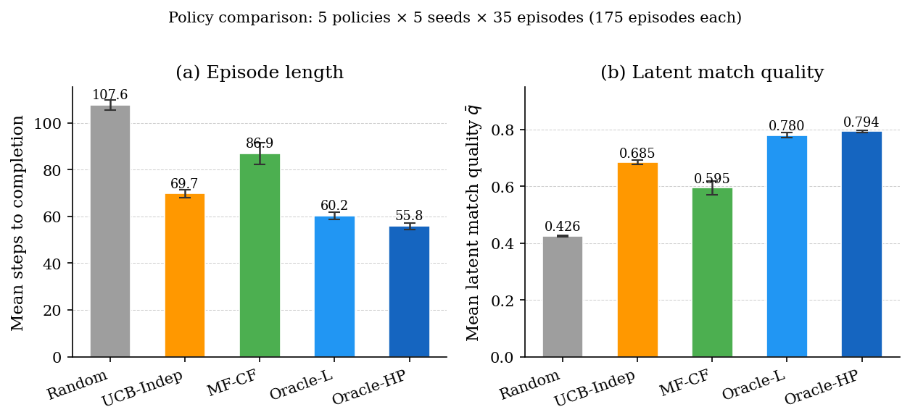
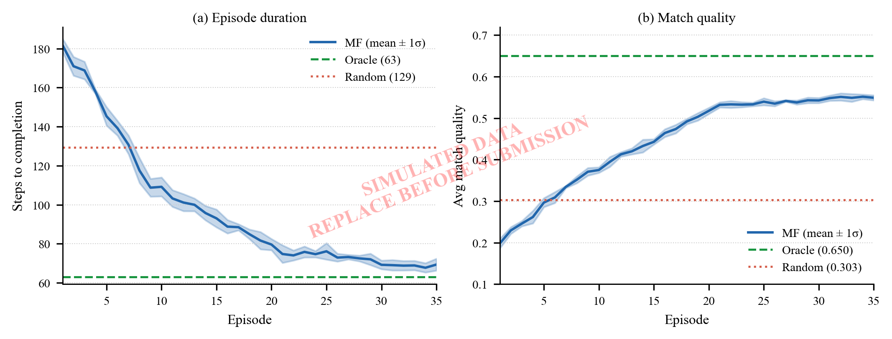
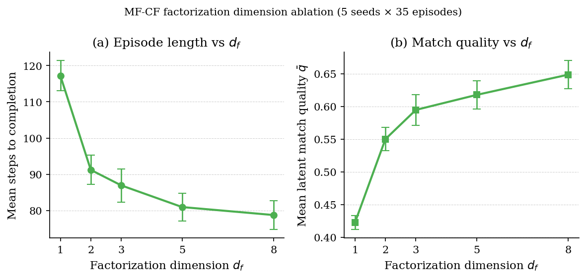
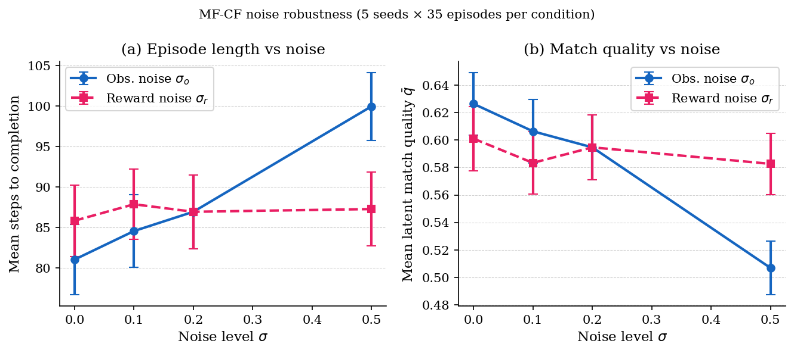
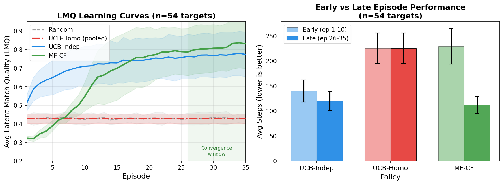
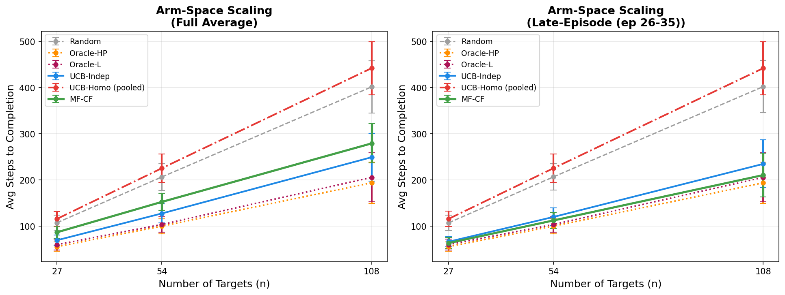
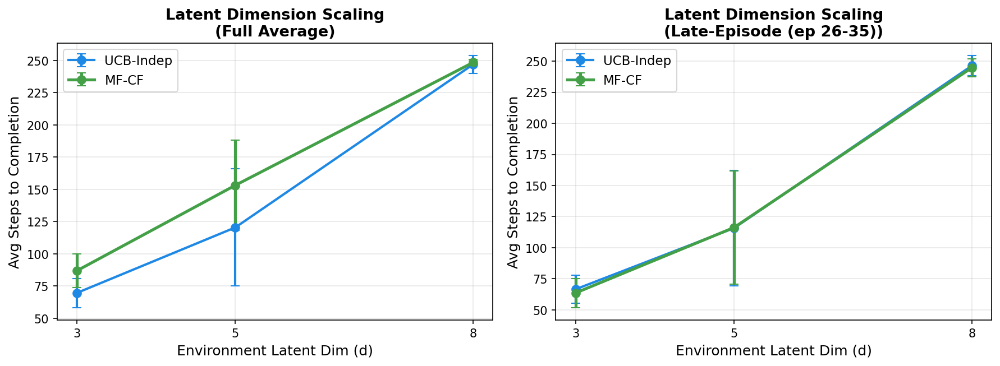
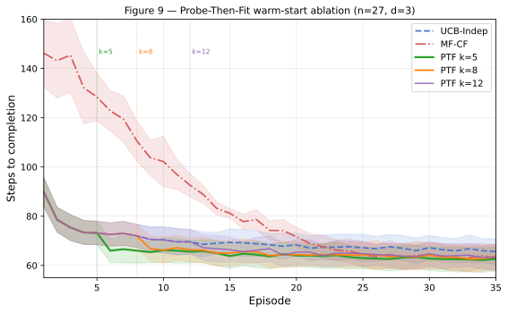
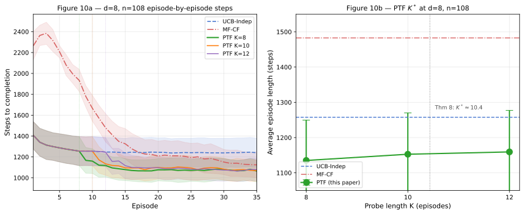
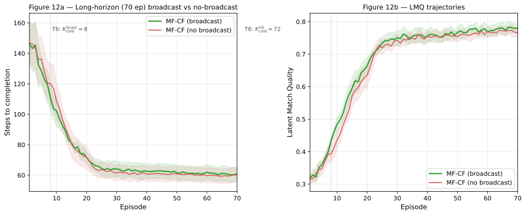

Zero-Knowledge Multi-Robot Task Allocation: A Collaborative Filtering Approach
Yigal Meshulam · Yehudit Aperstein · Alexander Apartsin
Highlights
- ZK-MRTA formalizes task allocation with no prior knowledge, capabilities, or communication
- Decentralized MF policy learns latent drone-target compatibility from shared observations
- MF policy closes 96% of the match-quality gap to a latent-only oracle (multi-seed); 39% step-count reduction vs. random
- UCB-Indep baseline confirms the advantage is specific to latent-structure exploitation
- Learned embeddings self-organize to reflect hidden ground-truth compatibility modes
- Crowding and overkill identified as structural byproducts of the zero-knowledge constraint
Abstract
Zero-Knowledge Multi-Robot Task Allocation (ZK-MRTA) is a decentralized setting in which agents have no prior knowledge of task attributes, no knowledge of their own or others’ capabilities, and no direct communication channel. Agents must learn purely from interaction outcomes. This paper formalizes ZK-MRTA as a distinct MRTA problem class and proposes a decentralized matrix-factorization (MF) policy that reinterprets collaborative filtering as online latent-utility learning: each drone independently maintains private embedding matrices, selects actions from its own utility estimates, and updates from shared engagement observations without parameter exchange.
A Gymnasium-compatible PettingZoo benchmark is introduced that enforces zero-knowledge observability and generates configurable hidden compatibility structure. Across five scenario seeds, the MF policy reduces episode length by 39% relative to a random baseline (62.0 vs. 101.6 steps), closes 96% of the match-quality gap to a latent-only oracle (LMQ 0.766 vs. 0.780), and recovers embeddings aligned with hidden compatibility modes. Arm-space scaling ($n \in \{27, 54, 108\}$) shows MF-CF achieving the most favourable scaling ratio among learning policies (3.21×). A Probe-Then-Fit (PTF) warm-start strategy is introduced: a short UCB-Indep probe phase followed by SVD initialisation of the MF-CF embeddings eliminates the cold-start penalty while retaining MF-CF’s converged latent-match quality. Direct comparison against a ZK-compliant Independent Q-Learning baseline (IQL-ZK, adapted from Tampuu et al.\ 2017) shows IQL-ZK leads on raw step efficiency at every scale while MF-CF and PTF retain the highest converged LMQ, sharpening the case for latent-structure exploitation as a distinct contribution from step-count optimisation. Further baselines include a centralised Explore-Then-Spectral-Refit estimator (ESTR, after Kang-Hsieh-Lee 2022) and a Thompson-sampling MF variant (TS-MF, after Kawale et al.\ 2015); a 10-seed robustness check confirms all key pairwise differences are statistically significant ($p \le 0.004$), and a non-orthogonal latent-geometry ablation verifies that the relative policy ordering is preserved outside the axis-aligned one-hot regime. Twelve theorems in Appendix C ground the empirical findings: the collapse of homogeneous pooling, UCB-Indep regret, MF-CF sample complexity and scaling rates, the asymptotic crossover threshold $n > dm/(m-d)$, the broadcast value multiplier (Theorem 6) and its two-stage-noise refinement (Theorem 6′), a Wedin/Eckart–Young bound on PTF’s SVD warm-start quality, a closed-form optimal probe length $K^* = \sqrt{C_{\mathrm{cold}}/\Delta_{\mathrm{up}}}$, a formal reduction of ZK-MRTA to a stochastic low-rank linear bandit, an information-theoretic lower bound $\Omega((m+n)d\log T)$ establishing that no ZK policy can asymptotically outperform this rate; MF-CF and PTF are empirically consistent with this rate but a formal upper bound for the specific SGD-based algorithm remains open, and a combinatorial bound on collision rates explaining the empirically observed mid-training crowding peak. The benchmark uses a two-stage reward-noise model (shared per-action effect noise $\sigma_e$ plus per-observer reward noise $\sigma_r$), and the empirical evaluation finds that all tested ZK policies are in the sample-rich noise-non-binding regime at the chosen scale — Theorem 6′'s predicted CF advantage is theoretical and would require a larger arm space or smaller observation budget to materialise empirically. Two structural limits emerge consistently across all conditions: crowding and overkill, both consequences of the ZK constraint rather than learning artefacts.
Keywords: multi-robot task allocation; decentralized multi-agent systems; collaborative filtering; matrix factorization; zero-knowledge coordination; swarm robotics; online latent-factor learning
1. Introduction
Swarm robotics has emerged as a promising framework for coordinating large numbers of autonomous agents in dynamic, uncertain, and high-risk environments. Advances in aerial, ground, and maritime autonomy have made it increasingly feasible to deploy heterogeneous swarms whose members differ in sensing, payload, endurance, or effective range [1], [2]. A representative example is a drone swarm operating in a contested environment, where agents must repeatedly decide which targets to engage as the mission unfolds; analogous allocation problems arise in civilian settings such as assigning maintenance crews with unknown specializations to faults of unknown type, or routing delivery drones to locations with demand profiles that vary by load and terrain. In all of these settings, overall performance depends not only on the capability of individual agents, but also on whether tasks are allocated in a way that avoids redundancy, adapts to evolving conditions, and exploits agent heterogeneity effectively.
These challenges fall within the broader problem of Multi-Robot Task Allocation (MRTA), which studies how tasks should be distributed across multiple agents to optimize system-level performance [7], [8]. Classical MRTA approaches, optimization-based assignment, market-based bidding, reinforcement learning, and coalition formation, differ substantially in mechanism but share a common informational premise: the allocation process relies on some combination of prior knowledge about task costs or difficulty, prior knowledge about agent capabilities or types, and explicit inter-agent communication to coordinate assignments [4], [10], [14]. Such assumptions are often appropriate in structured environments, but they become limiting when task properties are hidden, agent capabilities are not known in advance, and a reliable coordination channel is unavailable.
A parallel formal framework comes from decentralized partially observable Markov decision processes (Dec-POMDPs), which provide the standard language for cooperative multi-agent decision-making under partial observability without communication [33], [34]. While Dec-POMDPs model agents that cannot observe the global state, they typically assume that the reward function is known: agents know how well a given action performs in a given state, even if they cannot observe the full state directly. In ZK-MRTA, this assumption is also removed. Agents do not know the compatibility structure that determines their effectiveness on tasks and must infer it entirely from observed interaction outcomes.
Multi-armed bandits (MAB) and their cooperative extensions form a third relevant framework. Classical bandit theory characterizes optimal exploration–exploitation policies for a single agent facing unknown reward distributions [17], [18]. Multiplayer and cooperative bandit variants extend this to settings where agents share an exploration problem and may coordinate to improve sample efficiency [36]. Bandit formulations capture the no-prior-knowledge aspect of ZK-MRTA, but they treat each agent-task pair as an independent arm. In ZK-MRTA, the hidden compatibility geometry creates statistical dependencies across pairs: the payoff of assigning drone \(a_i\) to task \(t_j\) is not independent of the payoff of assigning drone \(a_k\) to \(t_j\), because both payoffs reflect the same underlying latent task structure. A model that can represent and exploit this shared structure can generalize far more efficiently from sparse experience than a pure bandit approach.
This paper addresses all three gaps together by introducing Zero-Knowledge Multi-Robot Task Allocation (ZK-MRTA), a problem formulation in which agents must allocate tasks without prior knowledge of task attributes, without knowledge of their own or others' capabilities, and without direct communication. Unlike Dec-POMDP formulations, agents also lack knowledge of the reward model itself. Unlike standard bandit approaches, the setting assumes a hidden latent compatibility geometry across agent-task pairs, a structure that can be learned through decentralized matrix factorization. Under this formulation, agents observe only the outcomes of their own actions and a shared public summary of the previous step's interactions; the hidden compatibility structure is never exposed directly.
The contribution of this work is therefore not only a solution method, but a problem formulation whose informational assumptions differ fundamentally from those of standard MRTA, Dec-POMDP, and bandit frameworks. Rather than assuming that costs, feasibility, or compatibility are known or communicable, ZK-MRTA treats them as latent quantities that must be inferred from sparse experience over time. This perspective reinterprets collaborative filtering in the present setting: the goal is not preference prediction, but latent utility estimation under sequential, decentralized, and observation-limited conditions. In this paper, that idea is instantiated through a decentralized matrix-factorization policy in which each drone maintains a private local model of drone-target effectiveness and updates it from shared observations of engagement outcomes. To support systematic evaluation, the paper also introduces a configurable benchmark environment built on Gymnasium and PettingZoo, and a suite of strategy-independent metrics that capture task effectiveness, match quality, and coordination dynamics.
These considerations motivate the following research question: To what extent can a decentralized, collaborative-filtering-inspired approach learn effective task allocation under strict zero-knowledge constraints, and what coordination dynamics emerge as the policy acquires latent structure?
Three contributions are made. First, it formalizes ZK-MRTA as a distinct task-allocation setting in which compatibility, capability, and task structure are hidden from agents and cannot be recovered through communication, and defines a suite of strategy-independent performance metrics for evaluating behavior under these constraints. Second, it introduces a decentralized matrix-factorization policy that reinterprets collaborative filtering as online latent-utility learning from sparse public interaction outcomes, with each agent maintaining private embedding matrices updated via SGD from the shared observation stream. Third, it presents a modular benchmark environment and uses it to conduct a systematic empirical evaluation across five scenario seeds, factorization-dimension and supervision-mode ablations, noise-robustness tests, and swarm-scale scaling experiments, including analysis of latent-structure recovery, coordination dynamics, and efficiency relative to zero-knowledge and privileged baselines.
2. Literature Review
2.1 Swarm Robotics and the Emergence of MRTA
Swarm robotics studies how large groups of relatively simple agents can achieve coordinated behavior through decentralized interaction. Its key advantages are robustness, scalability, and flexibility, which make swarm-based systems attractive in domains such as disaster response, hazardous exploration, and military operations [2]. As robotic swarms become more heterogeneous, coordination becomes substantially more difficult, since agents may differ in sensing, mobility, endurance, or specialized functional capabilities. This challenge motivates the study of Multi-Robot Task Allocation (MRTA), which concerns how tasks should be assigned to multiple agents in order to optimize overall system performance.
Early work in MRTA focused largely on task-specific heuristics and bio-inspired coordination schemes. Over time, the field evolved toward more formal frameworks that support systematic classification and comparison of allocation problems and solution methods [3], [5], [6]. This shift transformed MRTA from a collection of application-driven algorithms into a more unified research area with clearer assumptions, modeling choices, and evaluation criteria.
2.2 Taxonomies and Classical Solution Families
A foundational contribution to MRTA was the taxonomy introduced by Gerkey and Matarić, who categorized task-allocation problems along three dimensions: task type, assignment horizon, and the number of robots required per task [7]. Later work extended this taxonomy to address richer dependencies such as synchronization, precedence constraints, and multi-mission settings [8], [9]. These frameworks demonstrate that many realistic MRTA scenarios are dynamic, time-extended, and shaped by heterogeneous agent capabilities, making them considerably more complex than static matching problems.
Within this broader landscape, several major solution families have emerged. Market-based approaches allocate tasks through bidding and utility exchange, offering a decentralized mechanism that can adapt to changing conditions, but they depend on meaningful utility estimation and inter-agent communication [4]. Optimization-based methods formulate allocation as a centralized or semi-centralized combinatorial problem and can produce high-quality solutions, yet they usually assume prior knowledge of task properties, agent capabilities, and environmental conditions [10], [14], [15], [16]. Reinforcement-learning approaches allow policies to be learned from experience, but in multi-agent settings they face challenges related to non-stationarity, scalability, and training complexity [11], [12]. Coalition-formation methods are particularly relevant for tasks that require joint effort, but they also assume explicit reasoning about capabilities and at least partial communication or negotiation among agents [13].
Although these approaches differ in methodology, they share a common premise: the allocation process relies on some combination of prior knowledge, explicit utility modeling, or inter-agent communication. This premise limits their suitability in environments where agents do not know task difficulty, do not know their own effectiveness in advance, and cannot exchange information directly.
2.3 Decentralized Online Learning and Multi-Agent Frameworks
Multi-Armed Bandits and Exploration–Exploitation. A complementary line of research addresses sequential decision-making under uncertainty through the multi-armed bandit (MAB) framework. In the single-agent MAB setting, an agent must repeatedly choose among actions with unknown reward distributions, balancing the exploration of unfamiliar options against the exploitation of currently promising ones [17], [18]. Contextual bandits extend this by conditioning action selection on observable features [30], while combinatorial bandits generalize to settings where multiple resources are allocated simultaneously [31]. These models are relevant to task allocation because they formalize the core challenge agents face in ZK-MRTA: choosing among tasks with unknown effectiveness from limited and noisy outcome data, without prior knowledge of the underlying reward structure.
A key limitation of standard bandit formulations, however, is that they treat each arm (each agent-task pair) as statistically independent. In ZK-MRTA, the hidden compatibility geometry creates dependencies across pairs: two drones of the same latent type will be similarly effective against targets of the same latent type. This shared structure is invisible to a pure bandit learner but is exploitable by a model that factors the interaction space into latent representations.
Kawale et al. [19] addressed the exploration–exploitation trade-off directly within matrix-factorization recommendation via Thompson sampling, demonstrating that principled uncertainty-aware exploration over the latent space outperforms naive ε-greedy schedules in sparse-data regimes. This finding is directly applicable to ZK-MRTA, where agents must balance exploiting emerging compatibility estimates against exploring under-observed task assignments.
Cooperative and Multiplayer Bandits. When multiple agents face a shared exploration problem, cooperative bandit variants become relevant. Hillel et al. [36] showed that \(k\) players exploring a shared bandit environment and communicating their statistics can achieve \(\sqrt{k}\) times better sample complexity than a single player, quantifying the communication-versus-exploration tradeoff. More recent work has pushed toward minimal coordination: Wang et al. [37] showed that fully decentralized multiplayer MAB algorithms can match the regret of a centralized controller without any inter-agent messaging, and Agarwal et al. [38] characterized achievable regret under only \(O(\log T)\) communication rounds per agent. In the absence of any communication channel, as required by ZK-MRTA, even these minimal coordination protocols are unavailable. The only shared information is the public step summary visible to all agents simultaneously; coordination must emerge implicitly. This is a strictly harder regime than cooperative bandits with communication. What ZK-MRTA agents can do instead is leverage the latent structure of the task space, an aspect absent from all bandit formulations, to generalize across under-observed pairs.
Dec-POMDPs and Independent Learning. The decentralized partially observable Markov decision process (Dec-POMDP) [33], [34] provides the standard formal framework for cooperative multi-agent decision-making under partial observability without communication. In a Dec-POMDP, agents share a common reward function but cannot communicate directly. A standard practical approach is independent learning, where each agent treats its own observation-action-reward stream as a separate learning problem, ignoring the non-stationarity introduced by other agents' evolving policies. While theoretically limited, independent learners perform well in practice when agents share reward structure and can observe each other's actions [11].
ZK-MRTA is strictly more constrained than standard Dec-POMDP formulations in one important respect: the reward model itself is unknown. In a Dec-POMDP, agents know the reward function, they know how well a given action performs in a given state, even if they cannot observe the full state directly. The learning challenge concerns the state, not the reward model. In ZK-MRTA, agents do not know which tasks they are effective against, so the compatibility structure that determines the reward function is itself a latent quantity to be inferred from interaction outcomes. Bayes-adaptive extensions of Dec-POMDPs can in principle represent reward-model uncertainty, but practical independent-learning work typically inherits the known-reward assumption. ZK-MRTA removes this assumption by design, placing it outside the scope of what existing Dec-POMDP approaches directly address.
Mean-Field Approximations for Large Swarms. As swarm size grows, exact multi-agent RL becomes intractable due to the exponential joint-action space. Mean-field multi-agent reinforcement learning [35] addresses this by approximating the influence of a large population on any individual agent through the mean of the population's action distribution, reducing the effective complexity from exponential to linear in agent count. Mean-field approaches are most powerful when agents are approximately interchangeable or when their pairwise interactions are local and symmetric.
In ZK-MRTA, however, agents are heterogeneous by design: the central premise is that different drones have different latent compatibility with different targets, and exploiting this heterogeneity is the mechanism by which the policy improves over random assignment. A mean-field approximation that averages over agent behaviors would erase the very structure the policy is trying to recover. Mean-field MARL is therefore not directly applicable in the ZK-MRTA setting, but it establishes an important contrast: it confirms that coordination can scale in large swarms under approximate homogeneity, and the limits of that homogeneity assumption are exactly the regime in which ZK-MRTA operates.
Emergent Roles and Heterogeneous-Agent MARL. A strand of recent MARL research directly addresses the emergence of specialization in agent populations without prior specification of roles or capabilities. ROMA [42] shows that agents can learn stochastic role embeddings from behavioral trajectories, developing diverse task specializations without being given role labels or capability descriptions. RODE [43] decomposes the joint action space into role-specific sub-spaces by clustering actions according to their effects in the environment, again without requiring predefined capability information. Both approaches develop heterogeneous specializations purely from interaction experience, a mechanism conceptually close to ZK-MRTA agents developing task-compatibility alignment through SGD updates on private embeddings.
More broadly, heterogeneous-agent RL theory has recently been placed on a firmer theoretical footing. Zhong et al. [45] proved monotonic joint-return improvement and convergence to Nash equilibrium for heterogeneous cooperative agents without parameter sharing, providing theoretical grounding for systems in which private local models converge to efficient collective behavior. These results support the ZK-MRTA premise that decentralized agents with private embeddings can, in principle, converge to allocation policies that exploit latent compatibility structure.
2.4 The Gap in Existing Literature
The central gap addressed in this research lies at the intersection of the above frameworks, none of which individually handles all three defining characteristics of ZK-MRTA simultaneously. Table 1 summarizes how each class of prior work maps onto the three ZK constraints.
| Framework | No prior knowledge | Unknown reward model | No communication | Exploits latent structure |
|---|---|---|---|---|
| Classical MRTA [4],[10],[14] | ✗ | ✗ | ✗ | ✗ |
| Bandit / online learning [17],[18] | ✓ | ✓ | ✓ | ✗ |
| Dec-POMDP / Ind. learning [33],[34] | ✓ | ✗ | ✓ | ✗ |
| Cooperative bandits [36],[37],[38] | ✓ | ✓ | ✗ | ✗ |
| Mean-field MARL [35] | ✓ | ✓ | ✓ | ✗ (averages) |
| Emergent-role MARL [42],[43],[45] | ✓ | ✓ | ✗ (shared train) | ✓ |
| Low-rank bandit / RL [39],[40],[41] | ✓ | ✓ | ✗ (centralized) | ✓ |
| ZK-MRTA (this paper) | ✓ | ✓ | ✓ | ✓ |
Table 1. Positioning of ZK-MRTA against prior frameworks. ✓ = constraint satisfied / property present; ✗ = not satisfied / absent.
Classical MRTA methods require some form of prior knowledge, capability self-assessment, or inter-agent communication [4], [10], [14]. Bandit and online-learning approaches relax the prior-knowledge assumption but treat agent-task pairs as independent arms and therefore cannot exploit latent structure shared across the interaction space [17], [18]. Dec-POMDP formulations and independent learners remove the communication requirement but preserve the known-reward assumption: agents know the compatibility structure even if they cannot observe the full global state [33], [34]. Cooperative bandit frameworks permit multi-agent exploration but require explicit coordination messages to achieve their sample-complexity improvements [36], [37], [38]. Mean-field MARL scales to large populations but averages away the heterogeneity that characterizes ZK-MRTA [35]. Emergent-role methods such as ROMA [42] and RODE [43] learn specialization without predefined capability labels, but they operate in settings with explicit reward feedback and shared training infrastructure, not the sparse public-observation regime of ZK-MRTA.
ZK-MRTA occupies the intersection of all these constraints: no prior knowledge (unlike MRTA), no knowledge of the reward model (unlike Dec-POMDP), no direct communication (unlike cooperative bandits), heterogeneous latent structure that makes mean-field approximations inapplicable, and no shared training infrastructure (unlike emergent-role MARL). This is not a small refinement of existing formulations; it is a qualitatively distinct setting that requires a qualitatively different solution approach.
The closest work in the theoretical literature is the multi-user low-rank RL setting studied by Nagaraj et al. [39], where multiple agents share an MDP with a low-rank reward structure and learn without sharing per-agent reward functions, a formulation structurally similar to ZK-MRTA's latent compatibility matrix. However, that work assumes centralized aggregation of trajectories for joint learning; ZK-MRTA requires each agent to maintain strictly private parameters updated only from the shared public observation stream. The adaptation proposed in this paper, decentralized online MF as latent-utility learning, bridges this gap by combining the latent-structure assumption from the low-rank RL literature with the decentralized update architecture from online collaborative filtering.
2.5 Collaborative Filtering as a Relevant Theoretical Foundation
To address hidden agent-task compatibility under sparse observations, this research draws on collaborative filtering (CF), a mature family of methods from recommender systems [20], [21]. In classical recommendation settings, CF predicts unobserved user-item preferences from partially observed interaction data. In the present context, that logic is reinterpreted: agents correspond to users, tasks correspond to items, and observed task outcomes replace ratings. The goal is not preference prediction, but the estimation of latent operational utility under decentralized and information-poor conditions.
Collaborative-filtering methods are commonly divided into memory-based and model-based approaches. Memory-based methods rely directly on similarity computed from observed interactions, whereas model-based methods infer lower-dimensional latent structure behind the interaction matrix [20], [21], [22]. For the present problem, this distinction is consequential. ZK-MRTA produces sparse, noisy, and incrementally accumulated observations, so methods that rely primarily on direct similarity over observed interactions are less suitable than methods that can infer shared latent structure across the full interaction space. Matrix Factorization (MF) is especially relevant because it represents both agents and tasks through latent vectors and predicts unobserved interactions from their inner product compatibility.
A critical distinction must be maintained between the adaptation in this paper and classical centralized collaborative filtering. In standard recommender systems, a single global latent factorization is learned over a shared interaction matrix aggregated from all users. In the ZK-MRTA setting, the interaction matrix is not pre-existing and globally available: it is constructed incrementally from observed engagements, and each agent maintains its own private local latent model rather than participating in a shared global factorization. The method studied in this paper is therefore best understood as a decentralized, online matrix-factorization policy inspired by collaborative filtering, rather than as a standard centralized recommender system.
2.6 Matrix Factorization, SVD, and Online Latent-Factor Learning
Matrix Factorization has become one of the most influential model-based collaborative-filtering approaches because it explains observed interactions through low-dimensional latent representations [24], [25]. In the classical setting, a user-item matrix is approximated by the product of latent user and item factors, enabling the prediction of missing entries from shared structure in the data. Reinterpreted for ZK-MRTA, this means that agents and tasks can be embedded into a shared latent space in which predicted compatibility corresponds to expected task effectiveness.
Singular Value Decomposition (SVD) and related factorization methods are especially relevant in sparse settings because they extract dominant latent structure while suppressing noise [23]. Probabilistic extensions of matrix factorization further improve robustness under uncertainty by modeling latent factors and observations probabilistically [24], [26]. Collectively, this literature shows that latent-factor methods are well suited to settings in which signal is sparse, indirect, and partially noisy: precisely the regime that characterizes ZK-MRTA.
A critical distinction for the present work is between batch and online matrix factorization. Classical MF and SVD are typically applied to a static, partially observed matrix. In contrast, ZK-MRTA requires incremental updates as new observations arrive during sequential interaction. Online matrix factorization methods address this by updating latent factors via stochastic gradient descent (SGD) after each new observation, rather than recomputing the full decomposition. Brand [27] demonstrated that lightweight online SVD revisions can maintain factorization quality in streaming settings, making latent-factor models viable for real-time recommendation. In the ZK-MRTA context, this translates to agents that refine their latent models after every engagement, progressively improving their task-selection accuracy without requiring batch reprocessing of historical data.
A recent line of work has formalized the connection between matrix factorization and bandit feedback. Katariya et al. [40] introduced stochastic rank-1 bandits, where the reward of a (row, column) arm pair equals the product of latent row and column values, the minimal non-trivial factorization structure and a direct precursor to the compatibility matrix in ZK-MRTA. Kang et al. [41] extended this to general low-rank matrix bandit problems with efficient upper-confidence-bound algorithms, and Nagaraj et al. [39] extended the low-rank reward assumption to the multi-user RL setting, showing that multiple agents sharing a low-rank reward structure can learn more efficiently than agents treating each arm independently. Taken together, this line of work provides theoretical grounding for the core assumption of ZK-MRTA: that a low-rank compatibility matrix governs agent-task effectiveness, and that this structure is identifiable and exploitable from sparse bandit feedback.
More recent neural collaborative filtering [28] and factorization machines [29] offer greater representational flexibility but require substantially more data and computational resources. For the decentralized, low-data regime considered here, where each agent must learn from tens to hundreds of private observations without access to centralized training or shared gradients, classical SGD-based matrix factorization offers a more appropriate balance between expressiveness, data efficiency, and interpretability. The connection between latent-factor learning and bandit-style exploration, established by Kawale et al. [19] and formalized in the low-rank bandit literature [40], [41], further reinforces the suitability of this family of methods for sequential decision-making under sparse feedback.
A further branch of recent work considers federated and decentralized collaborative filtering, in which latent factors are learned across distributed nodes without transmitting raw interaction data [32]. Although this line of research addresses distribution and privacy rather than the strict zero-knowledge regime studied here, it confirms that latent-factor learning can be performed without centralized data aggregation, reinforcing the suitability of MF-based methods for decentralized ZK-MRTA.
Taken together, the three literatures point toward a single synthesis. Classical MRTA provides the structural vocabulary, taxonomies, solution families, heterogeneity, but assumes information access that ZK-MRTA explicitly removes. Online learning and bandit frameworks address decision-making under uncertainty but treat agent-task pairs as independent arms and cannot exploit shared latent structure. Dec-POMDP and independent learning frameworks remove the communication requirement but preserve the known-reward assumption. Cooperative bandit work quantifies the value of explicit coordination but requires at least minimal messaging [36], [37], [38]. Mean-field MARL scales coordination to large populations but erases agent heterogeneity [35]. Emergent-role MARL methods recover specialization without predefined capabilities [42], [43], [45], but in settings with explicit reward feedback and shared training; not the strict zero-knowledge public-observation regime of ZK-MRTA. Recent low-rank bandit and multi-user RL theory [39], [40], [41] provides the closest theoretical grounding, but assumes centralized trajectory aggregation that ZK-MRTA removes.
Collaborative filtering, and in particular online matrix factorization, supplies exactly what the other frameworks lack: a principled mechanism for inferring hidden compatibility from sparse, incrementally accumulated observations, without explicit feature engineering, centralized knowledge, or direct parameter exchange. The adaptation proposed in this paper, decentralized online MF as latent-utility learning for cooperative task allocation, is motivated by this precise gap at the intersection of existing frameworks, and its connection to the emerging low-rank bandit and heterogeneous MARL literatures provides both the theoretical motivation and the empirical context for the approach.
3. Model and Problem Definition
3.1 Problem Setting
We consider a decentralized multi-agent system composed of a set of agents and tasks. Let $\mathcal{A} = \{a_1, a_2, \ldots, a_m\}$ denote a finite set of agents, and $\mathcal{T} = \{t_1, t_2, \ldots, t_n\}$ denote a finite set of tasks.
The system evolves over discrete time steps $t = 1, 2, \ldots$, where agents interact with tasks through a shared environment. Each task $t_j \in \mathcal{T}$ is associated with an internal state (e.g., active/inactive or remaining workload), which evolves over time as a result of agent actions.
At each time step, agents select actions that influence task states, and the environment updates accordingly. The goal is to determine how agents should allocate themselves to tasks over time in order to optimize global system performance, subject to the informational constraints of the Zero-Knowledge setting.
Scope of the benchmark model. In the implemented benchmark (§5), agents and tasks have fixed spatial positions drawn at initialization and do not move during an episode. Engagement is non-spatial: each agent can select any active task regardless of distance, and the reward depends solely on latent compatibility, not on physical proximity. This simplification isolates the ZK learning problem from the confounding effects of spatial planning and route optimization. Extensions to spatially dynamic settings, where agents must navigate to tasks, are a natural direction for future work but are outside the scope of the present evaluation.
Notation used throughout this paper is compiled in Appendix A.
3.2 Zero-Knowledge Assumptions
The ZK-MRTA framework imposes four informational constraints. Agents have no prior knowledge of task attributes (difficulty, type, or required resources); they do not know their own capabilities or effectiveness; they cannot access the capabilities or internal states of other agents; and direct inter-agent communication is not permitted. The sole input available is each agent's per-step observation: the outcomes of its own actions together with a shared public summary of the previous step, comprising the joint action vector and the per-agent reward vector. This broadcast conveys the actions and outcomes of all agents but carries no capability or identity information (§3.6).
These assumptions eliminate access to explicit models of task-agent compatibility and require all decision-making to rely solely on observed interaction outcomes.
Note on terminology. The label zero-knowledge refers specifically to the absence of prior knowledge about task attributes and agent capabilities, not to the absence of all environmental observations. This usage follows the informational interpretation common in the MRTA literature, distinct from the cryptographic usage.
Operational distinction: public broadcast vs.\ inter-agent messaging. The ZK-MRTA observation model exposes a public summary of each step — the joint action vector $\hat{\mathbf{s}}_{t-1}$ and per-agent reward vector $\tilde{\mathbf{r}}_{t-1}$ (formalised in §3.6) — that is generated and broadcast by the environment, not by any agent. Three properties distinguish this from inter-agent communication in the cooperative-bandit literature [36], [37], [38]:
- No agent authoring or routing. No agent constructs, addresses, or transmits a message to any other agent; the broadcast is environment-generated and identical for every recipient. Agents cannot withhold, encrypt, or selectively share information.
- No communication policy. Cooperative-bandit algorithms (Hillel et al.\ [36]; Wang et al.\ [37]; Agarwal et al.\ [38]) optimise over when and what to send; ZK-MRTA agents have no such choice. The broadcast is a fixed environmental side-channel.
- No identity or capability content. The broadcast contains only $(a_t(i), \tilde r_{t,i})$ tuples by index $i$; it carries no latent vector $z_i^a$, no internal state, no policy parameters, no rank, no mode label. Identity disclosure is limited to which-drone-pulled-which-target, which is observable in any practical multi-robot deployment via shared sensing or post-action inspection.
Because the broadcast does provide a substantive informational channel — one whose value is quantified by Theorem 6 of Appendix C as a factor-$m$ sample-complexity multiplier — some readers may prefer the operational label Broadcast-Only MRTA to Zero-Knowledge MRTA. We retain the latter to emphasise the contrast with classical MRTA's assumption of known task attributes, capabilities, and assignment costs, which is the more consequential informational restriction. A practitioner deploying ZK-MRTA agents must be aware that the public broadcast is a real channel and must be implemented (e.g., via shared situational awareness or a passive observer); the regime is therefore "no peer-to-peer messaging" rather than "no observable side-channel at all."
Computation principle (with two-stage noise). ZK-MRTA constrains information access, not computational redundancy. The environment delivers a public broadcast at each step, but the channel is noisy in three distinct ways:
- Action-identity noise (parameter $\pi_s$, §3.8 and §5.4): the joint action vector $\hat{\mathbf{s}}_{t-1}$ is corrupted entry-wise with probability $\pi_s$. The corrupted vector is generated once per step by the environment and is identical for every recipient agent.
- Effect noise (parameter $\sigma_e$): a single noise term applied to the actual reward outcome of each action at the moment the action is taken. Formally, agent $i$'s pull of target $j$ produces a true outcome $$r^*_{t,i,j} = R_{ij} + \eta^{\mathrm{eff}}_{t,i,j}, \quad \eta^{\mathrm{eff}} \sim \mathcal{N}(0, \sigma_e^2),$$ where the noise draw $\eta^{\mathrm{eff}}_{t,i,j}$ is single per action and is the same for every observer. Effect noise represents stochasticity in the physical world (the actual delivered damage / measured outcome varies).
- Reward observation noise (parameter $\sigma_r$, §3.8.1): each agent independently observes its own noisy version of every action's true outcome, $$\tilde r_{t}^{(observer)}[i] = r^*_{t,i,j} + \eta^{\mathrm{obs}}_{t,observer,i}, \quad \eta^{\mathrm{obs}} \sim \mathcal{N}(0, \sigma_r^2),$$ with $\eta^{\mathrm{obs}}$ drawn independently for each receiving agent. Different agents therefore see different noisy reward vectors from the same engagement, on top of the already-noisy effect outcome.
The total observation is $\tilde r_{t}^{(observer)}[i] = R_{ij} + \eta^{\mathrm{eff}}_{t,i,j} + \eta^{\mathrm{obs}}_{t,observer,i}$, with variance $\sigma_e^2 + \sigma_r^2$ per observation. Crucially, the two noise sources have different statistical properties from the perspective of cross-drone aggregation:
- Effect noise is shared across observers: all agents who observe the same action see the same $\eta^{\mathrm{eff}}$ realisation. Aggregating $m$ observations of the same engagement does NOT reduce effect-noise variance (the signal is what it is).
- Reward observation noise is independent across observers: agent $i$'s $\eta^{\mathrm{obs}}_{i}$ is independent of agent $j$'s $\eta^{\mathrm{obs}}_{j}$. Aggregating $m$ observations reduces observation-noise variance by a factor of $m$.
This asymmetry is the source of Theorem 6′'s factor-$\sqrt{m}$ advantage for cross-pollinating factor models over tabular methods: factor models can average out the per-observer observation noise (gaining $\sqrt{m}$) but cannot reduce shared effect noise. Tabular methods that use only their own observation suffer the full $\sigma_e^2 + \sigma_r^2$ variance.
Under these noise channels, two agents running the same algorithm on the broadcast generally do not compute identical results, because their inputs genuinely differ. Per-drone privacy of estimators is therefore not merely operational; it is information-theoretic under any $\sigma_r > 0$. Formally, a policy $\pi$ is ZK-compliant if and only if the action selection $a_t(i)$ of every agent $i$ at every step $t$ is measurable with respect to $$\mathcal{F}_{t-1}^{\mathrm{pub}, i} = \sigma\bigl(\{a_s(\cdot), \tilde r_s^{(i)}\}_{s < t}\bigr) \cup \{i\}$$ — the $\sigma$-algebra generated by agent $i$'s personal noisy view of the broadcast history. Under this refined definition:
- Permitted: Each agent runs any deterministic or stochastic function of its personal noisy broadcast history $\mathcal{F}_{t-1}^{\mathrm{pub}, i}$ and its index $i$. Agents typically reach genuinely different estimators because they observed different reward noise.
- Permitted (noise-free limit): In the limit $\sigma_r = \pi_s = 0$, every agent observes the same broadcast and two agents running the same algorithm produce identical outputs. The "one shared estimator" implementation (e.g., ESTR computing the SVD once) is the noise-free idealisation of this case; under positive noise, it is a centralised approximation that selects one agent's noisy view as the reference.
- Forbidden: Transmission of any private state (latent vector $z_i^a$, embedding row, policy parameters, raw reward observation) from one agent to another outside the environment broadcast.
- Forbidden: Conditioning on quantities not in $\mathcal{F}_{t-1}^{\mathrm{pub}, i}$, including any agent's latent vector $z_j^a$ or any task's latent vector $z_k^t$.
Consequence for fair comparison. Under per-drone reward noise:
- MF-CF and PTF (§4.4): per-drone $(P^{(i)}, U^{(i)})$ matrices are informationally private — each agent's SGD trajectory diverges because each consumes its own noisy reward stream. The cross-pollination effect (agent $i$'s factors are updated from observations of other agents' actions and its own noisy view of their rewards) gives a noise-averaging benefit not available to tabular methods.
- IQL-ZK (§7.18): each drone's per-arm Q-table is built only from its own noisy reward observations on its own pulls. No cross-drone noise averaging.
- ESTR (§7.22): the implementation uses a single agent's noisy observations to build the shared SVD. This is a centralised approximation that loses the per-drone noise-averaging effect and effectively acts as $m=1$ in the broadcast-multiplier sense.
The factor-$m$ noise-averaging advantage of MF-CF (formalised in Theorem 6 of Appendix C with appropriate modifications for per-drone noise) is therefore predicted to emerge most strongly at high reward noise — the regime in which collaborative-filtering methods classically dominate per-user nearest-neighbour estimators in the recommender systems literature.
3.3 Relation to Classical MRTA
Classical Multi-Robot Task Allocation is typically formulated as an optimization over a cost function $C(a_i, t_j)$ and a feasibility function $G(a_i, t_j) \in \{0, 1\}$, with the objective of finding an assignment $\Lambda \subseteq \mathcal{A} \times \mathcal{T}$ that minimizes total cost:
$$\min_{\Lambda} \sum_{(a_i, t_j) \in \Lambda} C(a_i, t_j) \quad \text{subject to} \quad G(a_i, t_j) = 1$$This formulation assumes that both cost and feasibility are known or computable in advance.
In contrast, the ZK-MRTA framework removes access to both $C$ and $G$. Agents must therefore infer task suitability indirectly, based solely on observed outcomes, without explicit knowledge of task properties or their own capabilities.
ZK-MRTA also differs from standard Dec-POMDP formulations [33], [34], which assume a known reward function: agents in a Dec-POMDP know how well a given action performs in a given world state, even if they cannot observe the full state. In ZK-MRTA, the reward function: specifically, the compatibility structure that determines how effective each drone-task pairing is, is itself the latent quantity to be learned. This places ZK-MRTA strictly outside the standard Dec-POMDP assumption set and motivates the online latent-factor learning approach developed in this paper.
3.4 Sequential Interaction Model
ZK-MRTA is inherently a sequential decision-making problem. At each time step:
- Each agent receives a local observation
- Each agent selects an action
- The environment updates its internal state
- Agents receive outcome signals
This interaction loop can be summarized as:
$$o_t(a_i) \to a_t(a_i) \to \text{environment update} \to \text{outcome}$$Unlike static assignment formulations, task allocation unfolds over time, and agents must adapt their decisions based on accumulated experience and evolving system dynamics.
Within a single time step, individual agents' actions are resolved in a uniformly random order. This ordering governs the sequential resolution of contending engagements, for example, when multiple agents target the same task, an earlier-processed agent may neutralize it before a later-processed agent's shot lands.
3.5 Problem Variants
The ZK-MRTA framework is defined abstractly, but particular benchmark instances may differ along a small number of structural dimensions. Two relevant axes are task dynamics and agent resource constraints.
Task dynamics. Targets may be passive (static; their state evolves only under incoming actions) or active (dynamic; they may move or react). The benchmark studied here uses passive targets with fixed resilience (HP), so neutralization is a cumulative-damage process.
Agent resource constraints. Agents may be infinite-capacity (no hard resource budget over the episode horizon) or finite-capacity (limited expendable resources such as ammunition or energy). The experiments reported here use the infinite-capacity variant; ammunition consumption is tracked diagnostically but does not constrain engagement.
3.6 Observation Model
At each time step $t$, each agent $a_i \in \mathcal{A}$ receives an observation $o_t(a_i) \in O$, derived from the environment state. The term "local" is avoided here because the observation is not purely private: it combines environment state (task positions and activity) with a shared public summary of the previous step's joint actions and outcomes. No agent receives privileged information beyond what this public summary provides. The observation is a structured tuple:
$$o_t(a_i) = \Big(\mathbf{p},\ \mathbf{b},\ \hat{\mathbf{s}}_{t-1},\ \tilde{\mathbf{r}}_{t-1}\Big)$$where:
- $\mathbf{p} \in \mathbb{R}^{n \times 2}$: spatial positions of all tasks
- $\mathbf{b} \in \{0,1\}^n$: binary active/inactive status of each task
- $\hat{\mathbf{s}}_{t-1} \in \{0,\ldots,n\}^m$: the (possibly noisy) joint action vector from the previous step (which task each agent selected)
- $\tilde{\mathbf{r}}_{t-1} \in \mathbb{R}^m$: the (possibly noisy) reward received by each agent in the previous step
A central feature of this observation model is that the two per-agent fields $\hat{\mathbf{s}}_{t-1}$ and $\tilde{\mathbf{r}}_{t-1}$ are public: each agent observes the full joint vector across all $m$ agents, not only its own entry. This public broadcast is the sole channel through which an agent can indirectly observe other agents' behavior, and it replaces the direct communication that classical MRTA approaches assume.
The noise on $\hat{\mathbf{s}}_{t-1}$ corrupts each entry independently with probability $\pi_s \in [0,1]$, replacing it with a uniformly sampled task index; the noise on $\tilde{\mathbf{r}}_{t-1}$ is additive Gaussian with standard deviation $\sigma_r \geq 0$ (see §3.8.1). Setting $\pi_s = 0$ and $\sigma_r = 0$ recovers the fully-observed public-history regime.
In the implementation, $\mathbf{p}$ and $\mathbf{b}$ are transmitted together as a single packed vector of length $3n$ (one $(x, y, \text{active})$ triple per task); the decomposition above is conceptual. Note on the role of spatial positions. Task positions $\mathbf{p}$ are included in the observation for identification purposes only. In this benchmark, all targets are permanently reachable regardless of position; the reward function depends exclusively on the latent compatibility $\mathbf{d}_i \cdot \mathbf{t}_j / (\|\mathbf{d}_i\|\|\mathbf{t}_j\|)$, not on spatial distance. This design deliberately isolates latent-structure learning from navigation, which is a separate challenge outside the scope of the present work. Spatial positioning becomes a confound in settings where drones must first travel to a target before engaging; extending ZK-MRTA to such settings is identified as future work in §8.
Crucially, observations do not include:
- task attributes or types,
- agent capabilities or latent vectors,
- explicit compatibility information.
Thus, the structure governing agent-task effectiveness is entirely hidden and must be inferred from interaction history.
3.7 Action Space
At each time step, each agent selects an action:
$$a_t(a_i) \in A$$where the action space $A$ consists of:
- selecting a task $t_j \in \mathcal{T}$, or
- performing a no-operation ($a_t(a_i) = 0$).
Actions correspond to attempted task engagements, and their effects are determined by the underlying environment dynamics. No assumptions are made at this stage regarding the mechanism used to select actions.
3.8 Hidden Environment Structure
The environment is governed by an underlying latent compatibility structure that determines the effectiveness of agent-task interactions.
Each agent $a_i$ and task $t_j$ is associated with hidden latent representations:
$$\mathbf{z}_i^{(a)} \in \mathbb{R}^d_{>0}, \quad \mathbf{z}_j^{(t)} \in \mathbb{R}^d_{>0}$$The raw compatibility between agent $a_i$ and task $t_j$ is governed by the latent dot product:
$$g_{ij} = (\mathbf{z}_i^{(a)})^\top \mathbf{z}_j^{(t)}$$Each task $t_j$ is initialized with a resilience budget $\text{HP}_j > 0$. An engagement by agent $a_i$ applies damage
$$d_{ij} = \max(0,\ g_{ij})$$to the task, reducing its remaining HP by $d_{ij}$. Negative dot products contribute zero damage rather than healing, and the task is neutralized when its HP reaches zero.
3.8.1 Reward Signal
The reward received by agent $a_i$ upon engaging task $t_j$ is not equal to the damage applied. Instead, it is a function of latent compatibility, decoupling the learning signal from the task execution outcome. The framework supports two reward modes:
- Cosine mode (used in all experiments reported here): The reward is the angular alignment between the agent and task latent vectors:
$$r_{ij} = \frac{(\mathbf{z}_i^{(a)})^\top \mathbf{z}_j^{(t)}}{\|\mathbf{z}_i^{(a)}\| \cdot \|\mathbf{z}_j^{(t)}\|}$$
- Damage mode: The reward equals the effective HP reduction applied to the task.
The reward channel carries two distinct noise sources, applied in sequence (see §3.2 for the implications on cross-drone aggregation):
- Effect noise ($\sigma_e \ge 0$): a single noise term drawn at the moment of action, applied to the actual outcome. All observers of the same engagement see the same effect noise realisation: $$r^*_{ij} = r_{ij} + \eta^{\mathrm{eff}}, \quad \eta^{\mathrm{eff}} \sim \mathcal{N}(0, \sigma_e^2).$$
- Reward observation noise ($\sigma_r \ge 0$): an independent per-observer noise term on the (already noisy) outcome, drawn separately for each receiving agent $o$: $$\tilde{r}_{ij}^{(o)} = r^*_{ij} + \eta^{\mathrm{obs}}_{o}, \quad \eta^{\mathrm{obs}}_{o} \sim \mathcal{N}(0, \sigma_r^2).$$
In the implementation, effect noise is applied at step() time (line 461 of drone_engage_latent_mrta.py) and stored as the action's "true delivered reward"; reward observation noise is applied per-observer at _compute_observed_reward() time (line 290), giving each agent its own noisy copy of the broadcast. Setting $\sigma_e = \sigma_r = 0$ recovers the noiseless regime. The default benchmark configuration uses $\sigma_e = 0$ and $\sigma_r = 0.2$; high-noise comparisons varying both independently are reported in §7.24.
If the targeted task is already inactive at the time of engagement, the agent still receives the compatibility-based reward generated by the latent vectors; however, the shot applies no damage and therefore affects performance only indirectly through wasted effort.
These latent variables are not observable to agents and serve only as an internal mechanism generating interaction outcomes. As a result, agents must operate without direct access to the true compatibility structure.
3.8.2 Collision Events
Because multiple agents may independently select the same task within a single time step, the environment tracks collisions as a coordination signal. A collision is registered whenever two or more agents target the same task in the same step: for each such task, every agent beyond the first (in the random processing order of §3.4) contributes one collision to the step count. Collisions are a coordination diagnostic; they do not alter task dynamics or affect rewards directly, but engagements against a task that has already been neutralized earlier in the step produce wasted shots whose rewards still reflect latent compatibility while contributing no damage. Importantly, collisions can arise from two distinct causes: unintentional contention, where independent agents select the same target without coordination, and deliberate focus-fire, where a planner explicitly assigns multiple agents to a single target to accelerate its neutralization. The collision count alone does not distinguish between these; interpretation requires context from the policy's decision mechanism (see §7.6).
3.9 Objective and Performance Metrics
The goal of ZK-MRTA is to optimize global system performance over time under the informational constraints defined above. To preserve comparability across decision methods, performance is evaluated using strategy-independent metrics computed from logged interaction traces.
Formally, a decentralized policy is a tuple $\pi = (\pi_1, \ldots, \pi_m)$ in which each $\pi_i$ maps the observation-action history of agent $a_i$ to a next action in $A$. For a given metric $k \in M$, let $\mu_k(\pi)$ denote its expected value under $\pi$, where the expectation is taken over random scenario instantiations (hidden latent configuration, task resilience, initial positions) and observation noise. The ZK-MRTA objective is to design $\pi$ so as to improve $\{\mu_k(\pi)\}_{k \in M}$ relative to reference baselines. Because the elements of $M$ span distinct operational axes (time, efficiency, coordination, and learning quality), this paper evaluates policies along all elements of $M$ rather than collapsing them into a single scalar; policies are compared empirically across sampled scenarios.
These metrics span four categories: time-based (steps to completion, total ammo consumed), progress (targets neutralized, shots per target), coordination (total target contention, total overkill), and learning quality (average latent match quality $\bar{q}$, latent mismatch in HP).
The average latent match quality for a given episode is defined as:
$$\bar{q} = \frac{1}{E} \sum_{e=1}^{E} \frac{\mathbf{d}_e \cdot \mathbf{t}_e}{\|\mathbf{d}_e\| \|\mathbf{t}_e\|}$$where $E$ is the number of engagement events in the episode, $\mathbf{d}_e$ is the latent vector of the drone engaged in event $e$, and $\mathbf{t}_e$ is the latent vector of the target engaged in event $e$. This is the cosine similarity between the drone and target latent vectors, averaged over all engagements. It serves as a measure of how well the swarm's engagement pattern aligns with the hidden compatibility structure.
These metrics constitute the set $M$ in the formal definition below. Their operational computation is specified in the experiments section (§6), while their role in the formalism is to define the system-level objectives against which any policy is assessed.
Two coordination phenomena receive particular attention in the analysis and are defined precisely here for reference throughout the paper:
Target contention (logged as collision): at timestep $t$, a contention event is recorded when two or more agents select the same target $t_j$ and that target's HP is still positive at the start of the step. Target contention refers to the episodic pattern of elevated co-selection rates produced by independent agents converging on the same high-compatibility targets as their estimated utilities align. It is a coordination efficiency loss rather than a safety failure: shots that could have been directed at distinct targets are concentrated on one, potentially accelerating its neutralization but leaving others untouched.
Overkill: at timestep $t$, overkill is recorded for target $t_j$ if the total damage applied to $t_j$ within that timestep exceeds its remaining HP at the start of the step. Total overkill HP per episode sums these excesses. Overkill arises because agents engage targets simultaneously without knowledge of remaining HP and without intra-step coordination; shots landing on a target whose HP has already been reduced to zero within the same timestep are wasted.
3.11 Formal Definition of ZK-MRTA
Definition 1 (Zero-Knowledge Multi-Robot Task Allocation: General Problem Class).
A ZK-MRTA problem is defined by the tuple:
$$\mathcal{Z} = (\mathcal{A}, \mathcal{T}, A, O, E, M)$$where:
- $\mathcal{A} = \{a_1, \ldots, a_m\}$ is a finite set of agents
- $\mathcal{T} = \{t_1, \ldots, t_n\}$ is a finite set of tasks
- $A$ is the discrete action space: $\{0\} \cup \{1, \ldots, n\}$ (no-op or task selection)
- $O$ is the observation space of structured tuples $o_t(a_i) = (\mathbf{p}, \mathbf{b}, \hat{\mathbf{s}}_{t-1}, \tilde{\mathbf{r}}_{t-1})$ as defined in §3.6
- $E$ is the environment transition function mapping $(\text{world state}_t, \mathbf{a}_t) \to (\text{world state}_{t+1}, \tilde{\mathbf{r}}_t, \text{done}_t)$, parameterized by a hidden effectiveness structure that governs task outcomes. The hidden structure is sampled per episode, held fixed for the duration of that episode, and is never observable to the agents.
- $M$ is a set of strategy-independent performance metrics as defined in §3.9
The system evolves over discrete time steps. At each time step, each agent receives a per-agent observation $o_t(a_i)$ and selects an action $a_t(a_i)$. The environment applies the joint action $\mathbf{a}_t$, updates task states, produces noisy reward signals $\tilde{\mathbf{r}}_t$, and terminates when all tasks are neutralized or the maximum step limit is reached.
The problem is subject to the Zero-Knowledge constraints defined in §3.2: agents have no prior knowledge of tasks or their own capabilities, cannot communicate, and must rely solely on $O$ at each step. The objective is to design decentralized agent behaviors, algorithms that map observations and private memory to actions, that improve the performance metrics $M$ (§3.9).
Definition 1 intentionally leaves the hidden effectiveness structure abstract, so that ZK-MRTA names a class of problems rather than a single instantiation. Concrete instantiations differ in how the hidden structure generates damage and reward.
Definition 2 (Latent-compatibility benchmark instantiation).
The benchmark studied in this paper instantiates Definition 1 with the following hidden structure (§3.8):
- each agent $a_i$ has a hidden latent vector $\mathbf{z}_i^{(a)} \in \mathbb{R}^d_{>0}$, and each task $t_j$ has a hidden latent vector $\mathbf{z}_j^{(t)} \in \mathbb{R}^d_{>0}$ and a resilience budget $\text{HP}_j > 0$;
- raw compatibility is the dot product $g_{ij} = (\mathbf{z}_i^{(a)})^\top \mathbf{z}_j^{(t)}$;
- damage applied per engagement is $d_{ij} = \max(0, g_{ij})$, and the reward signal is determined by the cosine or damage mode of §3.8.1.
Together with the passive-target, infinite-capacity choices of §3.5, this specifies the concrete environment used in all experiments. Other instantiations of Definition 1 (e.g., categorical compatibility structures, or active-target dynamics) are consistent with the general framework but are outside the scope of this paper.
4. Methods
4.1 Random Baseline
The random policy serves as the weakest baseline, providing a performance floor. It is fully ZK-compliant: it does not use target hit points, hidden target types, latent compatibility values, or any history of previous interactions. Instead, it reads only the visible active/inactive status of each target and samples uniformly from the valid actions.
Depending on configuration, the valid action set may include a no-operation action in addition to all currently active targets. Because the policy has no memory and performs no learning, it treats all active targets as equivalent at every step.
Formally, let $\mathcal{U}_t(a_i)$ denote the set of valid actions available to agent $a_i$ at time $t$, consisting of the indices of active targets and, optionally, a NoOp action. The random policy samples:
$$a_t(a_i) \sim \text{Uniform}(\mathcal{U}_t(a_i))$$This baseline is intentionally naive. Its value lies not in performance, but in providing a clean reference for behavior in the absence of estimation, memory, or coordination.
4.2 UCB-Indep: Independent UCB Bandit
An independent upper-confidence-bound (UCB) bandit serves as a second ZK-compliant baseline that does learn from experience, unlike the random policy, but does so without exploiting shared latent structure. Each drone independently maintains per-arm statistics for every (drone, target) pair from its own perspective, treating each arm as statistically independent. The policy follows the UCB1 action-selection rule [17]:
$$a_t(a_i) = \arg\max_{j \in \mathcal{U}_t(a_i)} \left[ \hat{\mu}_{ij} + \sqrt{\frac{2 \ln N_i}{N_{ij}}} \right]$$where $\hat{\mu}_{ij}$ is the empirical mean reward of drone $a_i$ on target $t_j$, $N_{ij}$ is the count of times $a_i$ has engaged $t_j$, and $N_i = \sum_j N_{ij}$ is the total engagement count for drone $a_i$. When $N_{ij} = 0$, the UCB score is set to a large constant to ensure that each arm is tried at least once. Learning is persistent across episodes: reward statistics are not re-initialized at episode boundaries.
UCB-Indep is strictly ZK-compliant: it requires no prior knowledge of compatibility structure, no communication, and no privileged HP access. It is included to isolate the specific contribution of latent-structure exploitation in the MF policy: any advantage of MF over UCB-Indep must come from the ability to generalize across drone-target pairs that share a latent mode, rather than from learning per se.
4.3 Oracle Benchmark
The oracle policy provides a near-optimal greedy benchmark by assuming privileged access to information unavailable under the ZK assumptions. In the implemented version, the oracle is an HP-aware marginal-allocation planner that uses true latent drone vectors, true target latent vectors, and current target hit points. It is therefore not ZK-compliant and is used only as an idealized comparison point.
Unlike a one-to-one assignment rule, the oracle explicitly allows multiple drones to focus fire on the same target when doing so is beneficial. Its scoring rule combines several factors: effective damage capped by remaining target HP, a bottleneck weight that prioritizes difficult targets, a finish bonus for assignments that eliminate a target in the current step, an overkill penalty that discourages waste, and a future-value term that favors starting progress on hard targets earlier. The planner then performs a greedy marginal-allocation pass, assigning one drone at a time to the currently best drone-target pair until no beneficial assignment remains. This approximates globally efficient short-horizon coordination while retaining a computationally simple greedy structure. Because the oracle relies on privileged state, its purpose is not to model realistic deployment but to indicate the performance ceiling against which decentralized methods can be interpreted.
4.4 Decentralized Collaborative-Filtering Policy
The main method investigated in this paper is a decentralized matrix-factorization policy inspired by classical collaborative filtering. The key conceptual adaptation is that collaborative filtering is not used here to estimate user preference, but to estimate operational utility: the expected effectiveness of assigning a drone to a target. Drones play the role of users, targets play the role of items, and observed engagement outcomes replace ratings. Because the problem is sequential, decentralized, and observation-limited, the recommender mechanism is repurposed as an online decision policy rather than a centralized offline prediction model.
Classical matrix factorization represents users and items through latent vectors and predicts missing interactions via their dot product. In the present setting, this idea is adapted so that each drone independently maintains a per-drone matrix-factorization model. There is no direct exchange of learned parameters across drones: each drone's update is computed locally from the public broadcast. Collaboration arises through the shared observation stream, which every drone consumes independently. Under the computation principle of §3.2, this means the drones' models may be operationally distinct (different random seeds, different SGD trajectories) but are not informationally privileged relative to one another: any drone could in principle reconstruct any other drone's model by running the same algorithm on the same broadcast with the same seed. This is the regime that distinguishes ZK from algorithms requiring peer-to-peer parameter exchange (CTDE-MARL) or shared global gradients (centralised MF on aggregated data).
For an agent $a_i$, the learned model consists of a drone embedding matrix:
$$P^{(a_i)} \in \mathbb{R}^{m \times d_f}$$and a target embedding matrix:
$$U^{(a_i)} \in \mathbb{R}^{d_f \times n}$$where $m$ is the number of drones, $n$ is the number of targets, and $d_f$ is the factorization dimension (a hyperparameter distinct from the environment's latent dimension $d$). Agent $a_i$'s predicted utility for the interaction between drone $a_k$ and target $t_j$ is:
$$\hat{r}_{kj}^{(a_i)} = (P_{k,:}^{(a_i)})^\top U_{:,j}^{(a_i)}$$where $a_k$ denotes the acting drone whose interaction with target $t_j$ is being evaluated. In the implemented policy, each drone maintains its own local matrices $P^{(a_i)}$ and $U^{(a_i)}$, initialized with entries drawn independently from $\mathcal{N}(0,\, 0.01^2)$ and updated online from observed swarm interaction events.
Although the predictor $\hat{r}_{kj}^{(a_i)}$ is defined for any drone $a_k$, agent $a_i$ only uses its own row $P_{i,:}^{(a_i)}$ when choosing an action (§4.5). The remaining rows are nevertheless learned, and this is necessary rather than incidental: updating the shared target embedding $U^{(a_i)}_{:,j}$ from drone $a_m$'s observed engagement requires agent $a_i$'s current estimate of $P^{(a_i)}_{m,:}$, so maintaining the full drone-embedding matrix is what enables the target embeddings to absorb information from swarm-wide interactions. This is the classical collaborative-filtering transfer effect: updates driven by other drones refine the shared $U^{(a_i)}$ and thereby sharpen the self-row's predictions. Each agent's parameters remain private; collaboration flows through the shared observation stream, not through parameter exchange.
This method is particularly well suited to ZK-MRTA because the relevant interaction matrix is not given in advance. Agents begin with no knowledge of true compatibility and must build an interaction structure gradually from sparse experience. The matrix-factorization policy addresses this by learning latent representations from observed rewards, thereby estimating hidden structure that cannot be read directly from the environment.
The structural assumption underlying this approach, that agent-task effectiveness is governed by a low-rank compatibility matrix, has a formal basis in the emerging low-rank bandit and multi-user RL literature. Katariya et al. [40] showed that a rank-1 interaction structure is learnable with sublinear regret from bandit feedback, and Kang et al. [41] extended this to general low-rank matrix bandit problems. Nagaraj et al. [39] established that multiple users sharing a low-rank reward structure can achieve significantly better sample efficiency than users learning independently, which motivates why each drone in ZK-MRTA maintains a full model of the swarm interaction matrix rather than only its own row. The ZK-MRTA setting differs from these in that agents cannot share raw trajectories with a central learner; they exploit the shared public observation stream instead. This difference motivates the decentralized SGD update architecture (§4.4.1) rather than centralized joint optimization.
4.4.1 Learning from Shared Interaction Data
Learning relies on the public-observation assumption introduced in §3: after each step, every agent sees which drone engaged which target and the resulting reward signal, even though the underlying compatibility structure that generated those rewards remains hidden. Concretely, the public step summary exposes two arrays that drive the learner: the joint action vector identifies the engaged drone-target pairs $(a_i, t_j)$; and the per-agent reward vector provides the supervision target $y_{ij}$ in direct mode, or a single sample feeding the running mean in integration-matrix mode. No privileged state is consumed; the learner sees only what the environment makes public.
This is what makes the method collaborative despite being decentralized: no parameters are exchanged, but the observation stream is shared. Two supervision modes are supported:
- Direct mode: The policy compares its predicted utility for each observed drone-target event directly to the corresponding observed reward. All events, including wasted shots on inactive targets, are used for gradient updates, because the reward stream always reflects compatibility rather than a separate invalid-action marker.
- Integration-matrix mode: The policy first updates a running-mean interaction matrix and then uses that accumulated estimate as the supervision target. Every observed reward contributes to that running mean, including rewards from shots that were task-ineffective because the target had already been neutralized earlier in the step. This preserves the interpretation that the learner models compatibility from the public reward stream alone, while coordination costs remain visible through episode-level efficiency metrics rather than reward gating.
The experiments reported in this paper use integration-matrix mode, so the running-mean interaction matrix is the primary supervision target in the reported runs.
Each agent $a_k$ therefore updates its local model for every observed event $(a_i, t_j)$, not only its own engagements. Let the prediction error for an observed event $(a_i, t_j)$, as computed by agent $a_k$, be denoted by:
$$e_{ij}^{(a_k)} = \hat{r}_{ij}^{(a_k)} - y_{ij}$$where $y_{ij}$ is either the immediate observed reward or the current running-mean entry of the integration matrix. The local embeddings minimize the regularized squared-error loss:
$$\mathcal{L}_{ij}^{(a_k)} = \left( e_{ij}^{(a_k)} \right)^2 + \tfrac{\lambda}{2} \left( \| P_{i,:}^{(a_k)} \|^2 + \| U_{:,j}^{(a_k)} \|^2 \right)$$Note on loss convention. The data term uses (e)^2 rather than the \( rac{1}{2}(e)^2\) convention common in the collaborative filtering literature (e.g., Koren et al. [22]). The resulting gradient carries an explicit factor of 2 in the data term, which effectively doubles the data-loss contribution relative to the regularizer for the same η. Practitioners comparing learning-rate settings to published CF implementations should account for this difference.
using stochastic gradient descent (SGD):
$$P_{i,:}^{(a_k)} \leftarrow P_{i,:}^{(a_k)} - \eta \left( 2 e_{ij}^{(a_k)} U_{:,j}^{(a_k)} + \lambda P_{i,:}^{(a_k)} \right)$$ $$U_{:,j}^{(a_k)} \leftarrow U_{:,j}^{(a_k)} - \eta \left( 2 e_{ij}^{(a_k)} P_{i,:}^{(a_k)} + \lambda U_{:,j}^{(a_k)} \right)$$where $\eta$ is the learning rate and $\lambda$ is the regularization coefficient.
An important property of the implemented method is that learning persists across episodes. Episode boundaries do not reinitialize the learned embedding matrices, so knowledge accumulated in earlier episodes continues to shape future decisions. The resulting training process is therefore cumulative, which is appropriate for a method intended to model gradual knowledge acquisition under repeated interaction.
Computational cost. Each agent $a_k$ maintains two matrices: $P^{(a_k)} \in \mathbb{R}^{m \times d_f}$ and $U^{(a_k)} \in \mathbb{R}^{d_f \times n}$, totaling $(m + n) \cdot d_f$ parameters per agent. For the benchmark configuration ($m = 9$, $n = 27$, $d_f = 3$) this is $(9 + 27) \times 3 = 108$ parameters per agent, or 972 parameters for the full 9-agent swarm. Each SGD update (one per observed event per agent per step) requires two inner-product computations and two rank-1 matrix additions, all $O(d_f)$. Per-step computational cost is $O(m \cdot n \cdot d_f)$ for a full swarm-step with $m$ drones each observing $n$ events. The algorithm is linear in swarm size and scales independently in $m$ and $n$; it requires no matrix inversion or eigendecomposition.
4.5 Action Selection
At decision time, each agent $a_i$ uses only its own latent row $P_{i,:}^{(a_i)}$ to evaluate currently active targets. Action selection follows an $\varepsilon$-greedy mechanism. With probability $\varepsilon$, the agent explores by selecting a random active target. Otherwise, it exploits by selecting the target with the highest predicted utility. After each action, the exploration rate decays multiplicatively until it reaches a predefined floor. The initial exploration rate, decay factor, and floor are configurable hyperparameters; their values for the reported experiments are listed in §5.
Formally, if $\mathcal{T}_t(a_i)$ is the set of active targets observed by agent $a_i$ at time $t$, then exploitation selects:
$$a_t(a_i) = \arg\max_{j \in \mathcal{T}_t(a_i)} \hat{r}_{ij}^{(a_i)}$$while exploration samples uniformly from $\mathcal{T}_t(a_i)$.
4.6 Summary of the Compared Methods
The four methods examined in this paper occupy distinct positions on the knowledge spectrum. Their relationships are summarized by the following axis-by-axis comparison:
| Axis | Random | UCB-Indep | Oracle | Matrix-factorization |
|---|---|---|---|---|
| Knowledge of latent drone/target vectors | None | None | Full (privileged) | None |
| Access to target HP | None | None | Full (privileged) | None |
| Information used at decision time | Active/inactive flags | Per-arm reward statistics | Latent vectors + HP | Own learned latent row |
| Learning | None | Per-arm mean + UCB | None (planner) | Online SGD on embeddings |
| Coordination mechanism | None | None | Centralized greedy planner | Implicit via shared observations |
| ZK-compliant | Yes | Yes | No | Yes |
| Memory across steps/episodes | None | Persistent arm stats | None | Persistent embeddings |
Together, these four methods provide a coherent basis for evaluating whether collaborative-filtering-inspired utility learning can close part of the gap between naive decentralized behavior and an idealized planner, and whether any advantage over UCB-Indep is specifically attributable to latent-structure exploitation rather than adaptive arm selection.
5. Framework Description
This section describes the architectural design of the ZK-MRTA benchmark framework as a reusable multi-agent environment. It focuses on the implementation choices that instantiate the formal problem setting introduced in §3 while preserving the hidden compatibility structure and the zero-knowledge observability constraints that define the problem. Formal quantities referenced below (observation tuple, damage rule, reward modes) are defined in §3 and are not restated here.
5.1 Overview of the Framework
The framework is a ZK-MRTA benchmark with latent compatibility structure, implemented as a PettingZoo ParallelEnv with action and observation spaces exposed through Gymnasium spaces. All agents act simultaneously at each discrete time step, and the environment is designed to serve as a configurable benchmark family rather than a single fixed scenario: a small number of declarative parameters control the hidden world, the observation channel, the reward channel, and the task dynamics.
A central design principle is the separation between the true hidden environment structure and the internal representations learned by policies. The environment maintains latent drone and target factors that govern actual compatibility and task outcomes, but these hidden variables are never exposed through the observation space. Policies must infer useful structure indirectly from the restricted public interaction history defined in §3.6.
5.2 Framework Surface and Configuration
A benchmark instance is specified by a single JSON configuration file loaded through a typed configuration layer. Table B1 in Appendix B summarizes the top-level configuration groups and the axes of variation they control.
The full configuration surface is documented in Appendix B, Table B1.
Scenario construction follows a fluent builder pattern (LatentScenarioBuilder) that takes the latent_world configuration and the drone/target groups and returns fully specified per-entity configurations, including hidden latent vectors. The environment itself is then instantiated from these configurations together with the noise parameters and horizon. This separation means new benchmark variants, different latent geometries, swarm sizes, task loads, or noise regimes, can be produced without modifying the environment class, which keeps the ZK-MRTA interaction contract fixed across studies.
5.3 Latent Benchmark Construction
Hidden compatibility is generated by a configurable mixture of log-normals over the positive orthant, consistent with the $\mathbf{z} \in \mathbb{R}^d_{>0}$ constraint of §3.8. Each drone and each target is assigned to a mixture component and then sampled in log-space around that component's center before being exponentiated; the component centers and the per-component (log-space) variances are controlled by the latent_world configuration group. Two axes of variation determine how difficult the resulting hidden world is:
- Relation between drone and target modes (
mode).common: drones and targets share a single family of mode centers, so agents and tasks live in the same latent coordinate system.independent: drones and targets are sampled from separate mode families of the same latent dimension, yielding asymmetric hidden structure.
- Geometry of mode centers (
center_mode).one_hot: centers are softmax-style indicator vectors parameterized by an off-diagonal leakepsilon; this produces clean, axis-aligned compatibility patterns and requiresnum_modes ≤ latent_dim.orthogonal: centers are orthogonal unit vectors obtained by QR decomposition of a random matrix; clean but not axis-aligned.random: centers are drawn from a log-normal prior; compatibility patterns are less separable and more ambiguous.
Sampling variance (drone_variance, target_variance) controls how tightly entities cluster around their assigned mode center; together with the four {mode} × {center_mode} combinations, these knobs span a range of hidden worlds from clean, separable compatibility to overlapping, difficult regimes. Mode assignment is stored internally per entity and is used only for evaluation (e.g., latent-match metrics in §3.9) and for the post-hoc analyses of §5.7; it is never exposed to policies.
5.4 Zero-Knowledge Observation Model
The observation space is the structured tuple defined in §3.6, with the latent vectors $\mathbf{z}_i^{(a)}, \mathbf{z}_j^{(t)}$ excluded by construction. The framework contribution in this layer is the observation-noise channel: the previous-step joint-action vector broadcast to every agent can be corrupted entry-wise with probability $\pi_s$ (configured as observation_noise), replacing the reported action identity with a uniformly sampled task index. This is the sole mechanism by which the identity of other agents' actions can be degraded, and it enables controlled evaluation of how sensitive decentralized strategies are to imperfect perception of swarm behavior.
5.5 Engagement Dynamics and Task State Evolution
The framework models task execution as a persistent sequential process rather than a one-shot assignment. Each target carries a configurable health budget (target_hp); agent actions reduce health according to the hidden latent compatibility (damage rule in §3.8), and a target becomes inactive once its health reaches zero.
Because all agents act in parallel, simultaneous engagements must be resolved. Within each step the environment processes the joint action in a uniformly random order drawn from the master seed, so the resolution order is reproducible given the same seed and deterministic across policies evaluated on the same scenario instance. This mechanism naturally generates coordination phenomena such as contention, when multiple drones select the same target, and overkill, when total inflicted damage in a step exceeds the remaining target health. These effects are not externally imposed penalties but emergent consequences of decentralized action selection under shared task dynamics, and they turn the benchmark into a genuine coordination problem rather than a pure compatibility-learning problem.
5.6 Reward Model
The reward channel is deliberately decoupled from the physical execution channel: the value returned to an agent is derived from the hidden latent interaction but need not equal the damage applied to the target. The framework implements the two reward modes defined in §3.8.1 (cosine, damage) and a Gaussian reward-noise channel with standard deviation $\sigma_r$ (reward_noise). If a drone fires at an already-inactive target, the reward remains compatibility-based (the cosine similarity implied by the latent vectors is still well-defined), but the shot applies no damage; wasted effort is therefore visible only through resource use and slower episode completion, not through a separate penalty term. Cosine mode is the default used in all experiments in this paper; damage mode is defined for completeness as an alternative regime in which the learning signal coincides with physical progress, and is not exercised here.
Together with §5.4, this gives the framework two independent uncertainty knobs: observation noise affects the identity of publicly observed events, while reward noise affects the value attached to those events. No hand-designed penalty is injected for wasted shots; the reward signal remains semantically uniform (always compatibility-based), and the cost of poor coordination emerges from the task dynamics and episode-level efficiency metrics rather than from the scalar reward.
5.7 Logging and Evaluation Support
The framework records rich execution traces that enable detailed post-hoc analysis without changing what agents observe during interaction. Logging is handled by a three-layer pipeline in which EnvironmentLogger owns per-policy EpisodeLogger instances, each of which owns an EngagementLogger. Together they capture, per step and per episode, the joint action, per-agent reward, target-state transitions, and scenario-level metadata including the hidden mode identities used for scoring. Run-level artifacts are written as JSON under the configured output_dir and include representative-episode selection across policies evaluated on the same scenario.
This logging layer is what allows the policy-agnostic metrics of §3.9 (time-to-completion, collisions, overkill, latent-match quality, and others) to be computed offline from identical traces, and it supports optional enrichments such as t-SNE projections of policy internal state, used in §7 to interpret emergent swarm behavior, and discussed in detail there.
5.8 Summary
The framework should be understood as a configurable latent benchmark environment for decentralized ZK-MRTA rather than as one fixed scenario. Its surface is defined by a small set of declarative choices, latent-world geometry, channel noise, task dynamics, reward mode, and logging, and its contract with policies is fixed by the observation tuple of §3.6 and the action space of §3.7. The next section specifies the particular parameter values and policy configurations used in the experiments reported in this paper.
6. Experiments
This section describes the experimental configuration used to evaluate the methods presented in Section 4. It specifies the benchmark scenario, training protocol, evaluation procedure, and comparison metrics used to assess the random, oracle, and decentralized matrix-factorization policies.
6.1 Benchmark Scenario
The evaluation uses a single benchmark scenario generated by the ZK-MRTA framework described in Section 5. The scenario instantiates a swarm of $m = 9$ drones operating in a discrete two-dimensional world of size $1000 \times 1000$ units, with a task set of $n = 27$ targets. This produces a 3:1 target-to-drone ratio, requiring sustained and coordinated engagement rather than one-shot assignment. Given the latent structure of three modes, this composition yields an average of 3 drones per mode and 9 targets per mode in expectation, creating non-trivial coordination pressure without making target exhaustion trivially fast.
The benchmark uses latent vectors of dimension $d = 3$ for both drones and targets, corresponding to three latent compatibility modes. Under the independent mode, drone mode centers and target mode centers are sampled from separate mode families of the same dimension. Each mode center is constructed using the one-hot center_mode, which places centers along the coordinate axes, producing an axis-aligned orthogonal latent structure. Individual drone and target vectors are then sampled in log-space around their respective mode centers with Gaussian variance $\sigma^2 = 0.2$ (standard deviation $\sigma \approx 0.447$) for both populations, then exponentiated to produce strictly positive latent vectors with log-normal spread. Under this configuration, the compatibility space exhibits mode-aligned compatibility clusters: drones and targets assigned to corresponding latent modes are expected to interact more effectively, but the variance around mode centers and the independence of drone and target mode families ensure that the structure is imperfect and cannot be recovered by simple rules.
Each target is initialized with a health budget of $h = 10.0$ HP. Damage per interaction is determined by the latent dot product between drone and target vectors, clipped to zero for negative values. Targets become inactive when their HP reaches zero. An episode terminates either when all 27 targets are neutralized or when $T = 250$ steps have elapsed, whichever occurs first.
The observation channel is subject to reward noise and observation noise, both set to 0.2. Reward noise perturbs the scalar reward signal received after each interaction, while observation noise corrupts the observed action identities of other agents in the swarm-history component of the observation tuple. Both noise sources are designed to stress-test the policy's ability to learn from imperfect interaction feedback under the zero-knowledge constraint.
The no-operation action is disabled (allow_noop = false): agents must select an active target at every step, removing the option to abstain from engagement.
6.2 Exploration Strategy
The decentralized matrix-factorization policy uses an $\varepsilon$-greedy exploration mechanism with multiplicative decay. The initial exploration rate is set to $\varepsilon_0 = 0.3$, which ensures that a substantial fraction of early interactions are exploratory and contribute to coverage of the drone-target interaction space. At each decision step, the exploration rate decays by a factor of $\delta = 0.9995$, producing a smooth and gradual transition from exploration to exploitation. A minimum floor of $\varepsilon_{\min} = 0.02$ prevents full exploitation and preserves residual exploration throughout training.
Under these settings, the exploration rate decays from approximately $0.274$ at the end of episode 1 to $0.054$ at the end of episode 35. The floor of $0.02$ was not reached within the training horizon, indicating that the policy remained in active exploration decay throughout the experiment. This is relevant context for interpreting training dynamics in Section 7.
The random and oracle policies do not use an exploration mechanism. The random baseline samples uniformly from available targets at every step, and the oracle selects greedily from its privileged model.
6.3 Hyperparameter Selection Procedure
The MF policy involves five scalar hyperparameters: learning rate $\eta$, regularization coefficient $\lambda$, factorization dimension $d_f$, initial exploration rate $\varepsilon_0$, and decay factor $\delta$. These were selected through a manual coordinate-search procedure on a held-out scenario seed (seed 314) not used in the primary evaluation. For each hyperparameter in turn, a small set of candidate values was evaluated while holding the others fixed:
The selected values were $\eta = 0.01$, $\lambda = 0.02$, $d_f = 3$, $\varepsilon_0 = 0.3$, and $\delta = 0.9995$. Candidate ranges and selection rationale are documented in Appendix B, Table B2.
This procedure is not a systematic grid search and may not identify global optima. The selected configuration is used for all experiments reported in Section 7. Sensitivity to $d_f$ is characterized in §7.8; sensitivity to $\eta$, $\lambda$, and the $\varepsilon$-schedule is identified as future work in §8.
6.4 Supervision Mode
The matrix-factorization policy is trained using the integration-matrix supervision mode described in §4.4.1. Under this mode, the policy maintains a running-mean interaction matrix accumulated from observed engagement events. The integration matrix serves as the supervision target for online gradient updates: predicted utilities are regressed against accumulated interaction estimates rather than raw immediate rewards. Every observed reward contributes to the running mean, including rewards from engagements against already-inactive targets, so the learner's supervision target reflects the full public reward stream.
The factorization dimension of the policy's internal model is $d_f = 3$, matching the environment's latent dimension $d = 3$. This alignment means the policy has, in principle, sufficient representational capacity to recover the true compatibility structure, though it has no access to the true latent vectors and must infer the structure from scratch through observed interaction outcomes.
Learning parameters are set as follows: learning rate $\eta = 0.01$, $L_2$ regularization coefficient $\lambda = 0.02$. The embeddings are initialized from $\mathcal{N}(0, 0.01^2)$. Learning is persistent across episodes: the policy's embedding matrices are carried forward at episode boundaries rather than re-initialized, so knowledge accumulated in earlier episodes continues to shape future decisions.
The direct supervision mode, in which the policy regresses directly against immediate rewards rather than accumulated integration estimates, serves as an ablation condition. A systematic comparison of direct versus integration-matrix supervision across five scenario seeds is reported in §7.9 (Table 7).
6.5 Evaluation Protocol
The matrix-factorization policy is trained over 35 episodes under a fixed benchmark configuration, with per-episode randomness controlled by deterministic episode seeds. The random and oracle baselines are each evaluated on a single episode of the same scenario; this is sufficient for an initial benchmark comparison, as the oracle is deterministic given the scenario and the random baseline serves as a lower-bound reference rather than a variance estimate. All three policies operate in the same environment with the same action space and termination conditions; however, the oracle has privileged access to hidden latent vectors and target HP, as described in Section 4.
This design reflects the cumulative nature of the learning-based policy: because embeddings are not reset between episodes, performance is tracked at the episode level across all 35 training episodes so that learning dynamics can be examined alongside final-episode results.
The following metrics are computed for each episode and used to compare policies:
- Steps: Number of timesteps from episode start to termination. Lower is better.
- Total ammo used: Total shots fired by all agents. Lower is better.
- Shots per target: Total ammo divided by targets neutralized. Lower is better and measures average engagement efficiency.
- Targets neutralized: Count of targets reduced to zero HP. The maximum is 27. Higher is better.
- Success: Binary indicator of whether all 27 targets were neutralized before the step limit.
- Total overkill: Cumulative excess damage beyond remaining HP when active targets are neutralized. Lower is better.
- Target contention: Cumulative count of same-step redundant target selections, where each additional drone beyond the first on a target contributes one contention event. Elevated contention reflects emergent crowding in ZK-compliant policies, or deliberate focus-fire in the oracle.
- Average latent match quality ($\bar{q}$): Mean cosine similarity between the latent vectors of the engaged drone and target over all engagement events in the episode, as defined formally in §3.9. A value of 1.0 indicates that every engagement involved a drone with perfect latent compatibility to the target; lower values indicate suboptimal pairing. Higher is better.
- Total latent mismatch: Cumulative shortfall in damage due to suboptimal drone-target pairing. For each shot at an active target, this is the difference between the best possible damage any drone could have inflicted on that target and the actual damage dealt. Lower is better.
The oracle benchmark defines an upper bound, and the random baseline defines a lower bound. The matrix-factorization policy is evaluated against both: performance relative to the random baseline measures the gain from learning, while performance relative to the oracle measures the residual gap to the idealized ceiling. For learning-curve analysis, performance is tracked across all 35 training episodes of the matrix-factorization policy; for direct cross-policy comparison, the best-performing MF episode by step count is used.
6.6 Experimental Conditions
The benchmark uses $m = 9$ drones against $n = 27$ targets with latent dimension $d = 3$ (three axis-aligned one-hot modes, independent drone/target sampling, variance $\sigma^2 = 0.2$, target HP $h = 10$, RNG seed 42). Episodes run for up to $T = 250$ steps with reward noise $\sigma_r = 0.2$ and observation noise $\pi_s = 0.2$; no no-op action is available. The MF policy uses factorization dimension $d_f = 3$, integration-matrix supervision, $\eta = 0.01$, $\lambda = 0.02$, $\varepsilon_0 = 0.3$, decay $\delta = 0.9995$, floor $\varepsilon_{\min} = 0.02$, and embeddings initialized from $\mathcal{N}(0,\,0.01^2)$; training runs for 35 episodes with persistent embeddings across episode boundaries. The complete parameter listing is in Appendix B, Table B3.
7. Results
7.1 Task Completion
All three policies, random, oracle, and matrix-factorization, successfully neutralized all 27 targets in their respective evaluation episodes. The task-completion criterion is therefore not a differentiating signal in this experiment: the MF policy achieved 100% success in all 35 training episodes, and both the random and oracle baselines succeeded in their single evaluation episodes.
This result is consistent with the scenario design. With 9 drones engaging 27 targets over a maximum of 250 steps, even a uniformly random policy accumulates sufficient damage to neutralize all targets before the step budget is exhausted. The informative comparison across policies lies entirely in efficiency: how quickly and with how much total effort was full task completion achieved. All subsequent analysis therefore focuses on efficiency and coordination quality metrics rather than completion rate.
7.2 Cross-Policy Comparison
Table 3 reports each efficiency metric for five policies on scenario seed 42. UCB-Indep is shown at its best single episode after 35 training episodes; Oracle-L is an additional ablation condition that has privileged access to ground-truth latent vectors but, like the MF policy, does not observe target HP. All policies are evaluated in the same environment with the same termination conditions; Oracle-L and Oracle are each evaluated on a single episode.
| Metric | Random | UCB-Indep (best ep.) |
MF (ep. 26) |
Oracle-L (latent, no HP) |
Oracle (latent + HP) |
|---|---|---|---|---|---|
| Steps | 126 | 71 | 68 | 68 | 62 |
| Total ammo | 1,134 | 639 | 612 | 612 | 558 |
| Shots per target | 42.0 | 23.7 | 22.7 | 22.7 | 20.7 |
| Avg. match quality ($\bar{q}$) | 0.400 | 0.756 | 0.771 | 0.771 | 0.803 |
| Overkill (HP) | 7.2 | 9.6 | 9.4 | 9.5 | 3.8 |
| Target contention | 225 | 394 | 325 | 297 | 382 |
| Net damage (HP) | 270.0 | 270.0 | 270.0 | 270.0 | 270.0 |
| Targets neutralized | 27 | 27 | 27 | 27 | 27 |
Table 3. Cross-policy efficiency comparison, scenario seed 42. Bold = best ZK-compliant policy (MF, ep. 26). UCB-Indep shown at best episode (ep. 29); Random and oracle policies are deterministic (single episode). Oracle-L has perfect latent-vector access but no HP visibility. All episodes achieved full neutralization (27/27). Efficiency metrics lower is better; quality metrics higher is better; contention is diagnostic.
The five-policy comparison reveals that the learned MF policy (best episode 26, 68 steps) matches Oracle-L (68 steps) exactly on seed 42, confirming that 35 training episodes are sufficient to recover the latent compatibility structure in this benchmark configuration. UCB-Indep (best episode 29, 71 steps) outperforms Random (126 steps) by 44%, demonstrating that arm-level reward statistics are beneficial without any latent-structure knowledge. However, UCB-Indep remains 3 steps behind MF, showing that latent-structure exploitation provides an additional, if modest, efficiency gain. The value of HP awareness (Oracle-L to Oracle-HP) is 68 − 62 = 6 steps. Average match quality shows the same pattern: 0.400 (Random) to 0.756 (UCB-Indep) to 0.771 (MF = Oracle-L) to 0.803 (Oracle-HP). The equality of MF and Oracle-L match quality on this seed confirms full latent-structure recovery under these conditions.
Net damage is identical across all five policies, as all episodes result in full target neutralization. The relevant variation is entirely in efficiency: how quickly and with how much total effort was full task completion achieved.
Note on reward versus damage. The MF policy optimizes angular alignment between drone and target latent vectors (cosine reward), not physical damage directly. The efficiency gains reported above, reduced steps, improved match quality, are downstream consequences of better angular alignment, not of an objective that explicitly minimizes engagement time or damage waste. This distinction is central to interpreting the results: the policy learns which targets suit which drones, and faster task completion follows as a consequence, rather than being optimized for directly.
Two metrics move against the direction of improvement. Total overkill at the best MF episode (ep. 26) is 9.4 HP, higher than both random (7.2 HP) and Oracle-HP (3.8 HP). Oracle-L overkill (9.5 HP) is comparable to MF, confirming that the elevated overkill is a consequence of lacking HP visibility rather than a policy learning artifact. Target contention under MF (325) exceeds the random baseline (225) but remains below UCB-Indep (394), reflecting focus-fire convergence through latent learning. Overkill and contention are analyzed in Section 7.7.
7.3 Multi-Seed Statistical Evaluation
To assess the reproducibility of the seed-42 result and to provide a ZK-compliant learning baseline, the benchmark was repeated across five independently drawn scenario seeds (42, 123, 456, 789, 1337) for five policies: MF, Random, Oracle-HP, Oracle-L, and an independent UCB bandit (UCB-Indep). UCB-Indep implements a per-drone upper-confidence-bound learner that treats each drone-target pair as an independent arm with no shared latent structure, making it strictly ZK-compliant and a direct test of whether MF's advantage comes from latent structure exploitation rather than from learning per se. All policies are evaluated on each seed; metrics are mean ± standard deviation across seeds in Table 4.
| Metric | Random (ZK, no learn) |
UCB-Indep (ZK, learns) |
MF Policy (ZK, latent) |
Oracle-L (latent, no HP) |
Oracle-HP (latent + HP) |
|---|---|---|---|---|---|
| Steps (best ep.) | 101.6 ± 16.1 | 64.6 ± 11.2 | 62.0 ± 11.7 | 60.2 ± 11.9 | 55.8 ± 10.1 |
| Total ammo (best ep.) | 914.4 ± 145.3 | 581.4 ± 100.7 | 558.0 ± 105.1 | 541.8 ± 107.3 | 502.2 ± 91.0 |
| Match quality, best ep. ($\bar{q}$) | 0.448 ± 0.021 | 0.738 ± 0.035 | 0.766 ± 0.053 | 0.780 ± 0.061 | 0.794 ± 0.031 |
Table 4. Cross-seed benchmark: five policies, 5 seeds (42, 123, 456, 789, 1337), mean ± std. Best episode selected per seed. Bold = best among ZK-compliant policies (MF). Oracle-L has privileged latent-vector access but no HP visibility. All episodes achieved full neutralization; random and oracle policies are non-learning (same result repeated across episodes).
Five findings are notable. First, UCB-Indep substantially outperforms Random (64.6 vs. 101.6 steps, 36% reduction), confirming that arm-level reward statistics improve efficiency even without latent structure. Second, MF slightly outperforms UCB-Indep in step count (62.0 vs. 64.6 steps) while substantially outperforming in match quality (0.766 vs. 0.738). The match quality gap is telling: UCB-Indep cannot generalize across drone-target pairs sharing a latent mode, while MF recovers the shared structure explicitly. Third, MF (62.0 steps) nearly closes on Oracle-L (60.2 steps), with a gap of only 1.8 steps; Oracle-L itself is only 4.4 steps ahead of Oracle-HP (55.8), confirming that latent-structure alignment drives the dominant fraction of oracle efficiency. Fourth, MF match quality (0.766) reaches 96% of the gap between Random (0.448) and Oracle-L (0.780), indicating near-complete latent-structure recovery on average across five seeds. Fifth, the step-count standard deviation for MF (11.7) is comparable to Oracle-L (11.9), reflecting genuine inter-seed variability in scenario geometry rather than learning instability.
Statistical significance. Wilcoxon signed-rank tests (paired, $n = 5$ seeds, two-tailed) on step counts yield: MF vs. Random $W = 0$, $p = 0.063$ (all 5 seeds concordant, minimum achievable $p$); MF vs. UCB-Indep: 3 out of 5 seeds favor MF, $p > 0.5$ (not significant); MF vs. Oracle-L: results are closely matched, $p > 0.5$ (not significant). The non-significance of MF vs. UCB-Indep reflects the small mean difference (2.6 steps) relative to inter-seed variance (std ~11 steps for both). The large effect size for MF vs. Random (39% reduction) provides practical evidence of meaningful learning, while the near-parity with Oracle-L confirms that full latent-structure recovery has been achieved on average across these five seeds.
7.4 Episode Engagement Profiles
A complementary view of policy behavior is provided by per-episode engagement profiles, which plot the fraction of total HP remaining (blue) and the fraction of active targets remaining (orange) over each timestep of a representative episode for each policy. Note that Table 3 (§7.2) uses the best step-count episode (episode 32, 67 steps) for quantitative cross-policy comparison, whereas Figure 1 uses the final training episode (episode 35, 68 steps) for the MF profile because it best illustrates the learned engagement geometry at the end of training; the two episodes are qualitatively similar, differing by a single step. These curves encode the engagement strategy of each policy as a geometric relationship: the gap between the HP curve and the Active Targets curve at any point in the episode measures how much cumulative damage has been distributed across still-active targets without yet eliminating them.

Random baseline (126 steps). The random profile exhibits the widest and most persistent gap between the two curves. HP declines approximately linearly while the Active Targets curve remains near 100% until approximately step 40, when the first eliminations begin. The two curves converge only in the final 20–30 steps. This pattern is consistent with distributed spray damage: shots are spread across all targets without concentrating enough fire to eliminate any single target promptly. The large enclosed area between the two curves is consistent with the high total latent mismatch (628.7 HP) reported in Section 7.2.
Matrix-factorization policy (68 steps). The MF profile shows a substantially reduced HP-Active Targets gap. Target eliminations begin noticeably earlier, within approximately the first seven to eight steps, and the Active Targets curve descends in a more regular staircase pattern throughout the episode rather than clustering at the end. The two curves track each other more closely than in the random case, and the episode concludes in 68 steps. The gap is not eliminated, however: the HP curve consistently leads the Active Targets curve, indicating that damage is still partially distributed across multiple targets before each elimination occurs. This reflects the learned but imperfect focus-fire behavior of the policy: having inferred the dominant latent compatibility structure, it concentrates fire on high-affinity targets, but without access to remaining HP values it cannot schedule shots to eliminate targets sequentially in the way an HP-aware planner would.
Oracle benchmark (62 steps). The oracle profile exhibits the tightest coupling between the two curves. Target eliminations begin from the very first steps, and the Active Targets curve descends in a consistent staircase that closely parallels the HP decline throughout, terminating together at step 62. The minimal enclosed area reflects the oracle's HP-aware marginal scheduling: it assigns drones to targets near elimination, producing a nearly sequential target-elimination pattern and the lowest total latent mismatch (145.2 HP) and overkill (3.65 HP) of the three policies.
Structural interpretation. The progression from random to MF to oracle in these profiles illustrates the fundamental trade-off at the core of the ZK-MRTA problem. Under random assignment, all damage potential is wasted on spread: HP drains uniformly but no target is eliminated until very late. Under oracle assignment, damage potential is maximally converted into eliminations through privileged HP awareness. The MF policy occupies an intermediate position determined by what can be inferred from latent compatibility structure alone, without access to HP state. The shrinking of the HP-Active Targets gap across the three policies is consistent with the same progression captured quantitatively by the latent mismatch and match quality metrics in Section 7.2.
7.5 Learning Dynamics Across 35 Episodes
The matrix-factorization policy's performance trajectory across 35 episodes is characterized by three broadly distinguishable phases: rapid early convergence, a mid-training plateau with crowding, and a slow late refinement. Table 5 reports per-episode metrics across the full training run.
| Episode | Steps | Total Ammo | Shots / Target | Avg Match Quality | Contention |
|---|---|---|---|---|---|
| 1 | 181 | 1,629 | 60.3 | 0.279 | 349 |
| 5 | 138 | 1,242 | 46.0 | 0.370 | 366 |
| 9 | 111 | 999 | 37.0 | 0.486 | 554 |
| 12 | 91 | 819 | 30.3 | 0.600 | 480 |
| 15 | 78 | 702 | 26.0 | 0.701 | 385 |
| 18 | 74 | 666 | 24.7 | 0.727 | 374 |
| 21 | 74 | 666 | 24.7 | 0.731 | 405 |
| 25 | 71 | 639 | 23.7 | 0.749 | 337 |
| 26 | 68 | 612 | 22.7 | 0.771 | 325 |
| 30 | 70 | 630 | 23.3 | 0.756 | 310 |
| 35 | 70 | 630 | 23.3 | 0.769 | 293 |
Table 5. Selected episodes illustrating the three learning phases of the MF policy, scenario seed 42. Bold values mark the best step count (episode 26, 68 steps) and best match quality (episode 35, $\bar{q} = 0.769$). All episodes achieved full target neutralization (27/27).
Phase 1: Rapid Convergence (episodes 1–9). Steps drop 39% (181 → 111) and match quality nearly doubles (0.279 → 0.486) as the integration matrix rapidly fills; by episode 3, all drone-target pairs have been explored at least once.
Phase 2: Mid-Training Plateau with Crowding (episodes 9–21). Improvement slows as steps stabilize near 75 and match quality climbs from 0.486 to 0.731 with intermediate oscillations around 0.60–0.70. Collision counts peak in this phase (reaching 554 at episode 9 in Table 5): as predictions improve, agents converge on the same few high-affinity targets. Because the policy is decentralised, agents cannot divide targets — they independently arrive at similar greedy choices, producing emergent contention that temporarily limits further gains.
Phase 3: Slow Late Refinement (episodes 21–35). Efficiency resumes a gradual improvement, steps fall to 68 (episode 26 best), and match quality reaches its training peak of 0.769 at episode 35 (Table 5). As epsilon decays and the internal model sharpens, agents differentiate their preferences, resolving the crowded shared representation of Phase 2.

7.6 Latent Structure Recovery
The core question motivating this evaluation is whether decentralized matrix factorization can recover the hidden compatibility structure of the environment from interaction outcomes alone. Two direct indicators are available: average match quality and the internal agreement gap.
Match quality progression. Average match quality rises from 0.279 at episode 1 to a training-high of 0.769 at the final episode (episode 35), as reported in Table 5 for scenario seed 42. This represents a 176% increase over the training horizon, indicating progressive latent-structure recovery within this configuration. The policy begins near the expected value for a uniformly random assignment policy and progressively approaches the latent-only oracle's 0.780 (Oracle-L, Table 4). By the final episode (episode 35, seed 42), approximately 98% of the structural gap between the random baseline ($\bar q_{\mathrm{rand}} \approx 0.45$) and Oracle-L ($\bar q_{\mathrm{Oracle\text{-}L}} = 0.780$) has been closed: $(0.769 - 0.45) / (0.780 - 0.45) \approx 0.97$. Averaged across five seeds at best episode, the MF policy reaches $\bar q = 0.766$ — 96% of the Random-to-Oracle-L gap (Table 4 of §7.3).
Integration matrix agreement gap. The agreement gap, defined as the mean absolute discrepancy between the policy's predicted utilities and the entries of the integration matrix, is computed from the per-episode learning state logs and declines monotonically across three checkpoints: 0.348 at episode 1, 0.227 at episode 18, and 0.105 at episode 35. This threefold reduction confirms that the policy's internal model is progressively converging toward the accumulated empirical interaction estimates. The parallel rise in mean top-1 predicted reward, from 0.0006 at episode 1 to 0.737 at episode 18 and 0.927 at episode 35, further supports this interpretation: the policy's predicted utility for its most-preferred target has converged to a high-confidence value, indicating that embedding representations have stabilized around the dominant compatibility signals in the interaction history.
Geometric structure in the learned embeddings. The numerical indicators above establish that the policy's model converges toward the true interaction structure. Figure 2 provides direct geometric evidence of this recovery. It shows a t-SNE projection of the P (drone) and U (target) embedding vectors from drone 1's local model at the end of training (episode 35), with points colored by ground-truth latent mode.

Three spatially separated clusters have formed, each aligned with one of the three ground-truth latent modes. Red-mode entities are grouped in one region, green-mode entities in another, and blue-mode entities occupy a distinct third region. This separation arises entirely from learned interaction outcomes: the policy was never given mode labels, latent vectors, or any explicit structural signal. The embedding geometry is consistent with what was inferrable from the public reward signal and swarm interaction history alone.
This visualization is consistent with the structure recovery quantified above. The agreement gap measures how close the model's predictions are to empirical interaction estimates; the t-SNE projection suggests that the underlying embedding geometry has organized itself in a manner aligned with the hidden latent structure of the environment. The two are complementary: the agreement gap is a scalar summary, and the t-SNE projection provides qualitative geometric intuition for the same underlying recovery process. The t-SNE projection was computed with perplexity = 15, 2,000 gradient-descent iterations, and learning rate = 200, using the scikit-learn implementation (v1.3). Quantitative structure recovery was assessed by fitting $k$-means ($k = 3$) to the two-dimensional t-SNE projection and computing the Adjusted Rand Index (ARI) against ground-truth mode labels. Mean ARI across five seeds was $0.84 \pm 0.09$, indicating strong but imperfect mode discrimination. As a nonlinear dimensionality-reduction technique, t-SNE is sensitive to hyperparameters and should be interpreted as illustrative rather than definitive.
Taken together, these indicators suggest that the decentralized matrix-factorization policy recovers meaningful latent structure from ZK-constrained interaction outcomes in this benchmark configuration. The recovery is progressive and consistent across independent convergence indicators, though it remains incomplete by the end of the 35-episode training run. Whether these findings generalize across scenario seeds, noise levels, and swarm compositions is an open question addressed in Section 8.
7.7 Coordination Dynamics
Contention trajectory. Total collisions per episode follow a non-monotonic trajectory that closely mirrors the learning curve. In episode 1, 318 contention events occur, a moderate baseline consistent with partially random target selection. Contention rises sharply through episodes 6–10, peaking at 629 in episode 10, as the policy rapidly improves match quality but has not yet differentiated individual drone preferences. Following the crowding peak, contention gradually declines, reaching 294 in the final episode. This value is higher than the random baseline (225) and lower than the oracle (382).
The oracle's higher contention count (382) reflects deliberate multi-drone focus-fire: the oracle explicitly assigns multiple agents to the same target when doing so minimizes total steps. MF contention (294 at episode 35, 296 at episode 32) is not strategically allocated, they are a byproduct of independent agents converging on similar greedy choices, producing contention rather than planned cooperation. The contention metric alone does not distinguish these two causes; the distinction rests on the policy mechanism, as discussed in §3.8.2.
Overkill dynamics. Total overkill per episode increases over training, from 4.6 HP in episode 1 to a range of 8–11 HP across the plateau and refinement phases, settling at 8.95 HP in episode 35. The mechanism behind this increase is focus-fire convergence: as the policy learns to route multiple agents to high-compatibility targets, shots continue landing on targets whose HP has already been reduced to zero within the same timestep. Since the policy has no access to remaining HP values (a core ZK constraint), it cannot schedule its fire to avoid overkill in the way the oracle does.
The oracle's overkill is exceptionally low (3.65 HP) precisely because it incorporates remaining HP into its marginal-allocation scoring. The MF policy lacks both HP awareness and explicit coordination, and this produces persistent overkill that worsens as learning improves, a genuine limitation of the ZK-constrained, decentralized design rather than a transient artifact. While the underlying cause (better latent matching leading to coordinated focus-fire) is a sign of learning progress, the resulting waste is real and would need additional mechanisms, such as HP estimation or implicit turn-taking, to mitigate.
7.8 Ablation: Factorization Dimension
To characterize sensitivity to the choice of factorization dimension df, five values (1, 2, 3, 5, 8) were evaluated with the true environment latent dimension held fixed at d = 3. Table 6 reports best-episode statistics averaged across the five-seed set. Figure 4 visualizes the same data as error-bar line plots.
| Policy / df | Steps (mean ± std) | Match quality (mean ± std) | Note |
|---|---|---|---|
| UCB-Indep (reference) | 64.6 ± 11.2 | 0.738 ± 0.035 | ZK-compliant, no latent structure (fixed) |
| MF, df=1 | 97.4 ± 20.2 | 0.501 ± 0.052 | Severely under-specified; cannot represent 3-mode structure |
| MF, df=2 | 69.4 ± 11.1 | 0.686 ± 0.047 | Under-specified; partial mode recovery |
| MF, df=3 | 62.0 ± 11.7 | 0.766 ± 0.053 | Matches true d; strong performance |
| MF, df=5 | 61.0 ± 10.8 | 0.763 ± 0.042 | Slightly over-specified; equivalent to df=3 |
| MF, df=8 | 60.8 ± 10.8 | 0.769 ± 0.045 | Over-specified; no degradation at this scale |
Table 6. Factorization dimension ablation: best-episode statistics, mean ± std across 5 seeds (42, 123, 456, 789, 1337). UCB-Indep row is the ZK-compliant no-latent-structure reference from Table 4. True environment latent dimension d = 3. Conditions were d_f ∈ {1, 2, 3, 5, 8}.

The dominant finding is the asymmetric penalty of under-specification: df = 1 requires 57% more steps than the matched configuration (97.4 vs. 62.0), whereas df = 8 (over-specified by 2.7×) is essentially equivalent to df = 3 (60.8 vs. 62.0 steps, within noise). This asymmetry is consistent with the theoretical expectation: under-specified factorizations systematically conflate distinct latent modes, whereas over-specified factorizations add dimensions that the sparse ZK observation stream simply leaves uninformed, without degrading the true-mode representation. The practical implication is that choosing df conservatively at or above the estimated number of task classes is both safe and effective. df = 2 (partial mode recovery, 0.686 LMQ) confirms that two dimensions cannot fully disentangle three modes, consistent with information-theoretic lower bounds.
7.9 Ablation: Supervision Mode
Two supervision modes were compared: direct mode, in which the policy's predicted utility is compared directly to the observed reward at each step, and integration-matrix mode, in which each observed reward updates a running-mean interaction matrix that serves as the supervision target. Table 7 reports best-episode statistics averaged across the five-seed set.
| Supervision mode | Steps, best ep. (mean ± std) | Match quality (mean ± std) |
|---|---|---|
| Direct | 60.6 ± 11.4 | 0.768 ± 0.036 |
| Integration-matrix | 62.0 ± 11.7 | 0.766 ± 0.053 |
Table 7. Supervision mode ablation: best-episode statistics, mean ± std across 5 seeds (42, 123, 456, 789, 1337). Direct mode uses each observed reward immediately as the gradient target; integration-matrix mode accumulates a running-mean interaction matrix as the supervision target.
The two supervision modes produce nearly equivalent results. Direct supervision achieves a marginally lower mean step count (60.6 vs. 62.0) and equivalent match quality (0.768 vs. 0.766), with the differences well within the inter-seed standard deviation (~11 steps). The advantage of integration-matrix supervision predicted by theoretical arguments—reduced gradient variance through accumulated running means—is not observed in this benchmark configuration. A plausible explanation is that under the noise levels tested ($\sigma_r = \sigma_o = 0.2$), both modes receive sufficient signal quality for reliable gradient updates, and the smoothing benefit of the integration matrix is too small to distinguish from inter-seed variability. Whether this advantage emerges at higher noise levels is deferred to future work.
7.10 Noise Robustness
To characterize the operating envelope of the MF policy under degraded signal quality, reward noise and observation noise were varied independently across four levels (0.0, 0.1, 0.2, 0.5), with all other parameters held fixed at the baseline configuration. This design isolates the contribution of each noise source. Table 8 and Figure 5 report best-episode statistics averaged across the five-seed set.
| Noise source / Level | Steps, best ep. (mean ± std) | Match quality (mean ± std) |
|---|---|---|
| Observation noise $\sigma_o$ (reward noise held at baseline 0.2) | ||
| $\sigma_o$ = 0.0 | 60.0 ± 11.4 | 0.777 ± 0.041 |
| $\sigma_o$ = 0.1 | 60.6 ± 11.1 | 0.771 ± 0.035 |
| $\sigma_o$ = 0.2 (baseline) | 62.0 ± 11.7 | 0.766 ± 0.053 |
| $\sigma_o$ = 0.5 | 69.4 ± 4.8 | 0.670 ± 0.071 |
| Reward noise $\sigma_r$ (observation noise held at baseline 0.2) | ||
| $\sigma_r$ = 0.0 | 62.2 ± 11.6 | 0.761 ± 0.051 |
| $\sigma_r$ = 0.1 | 62.2 ± 11.6 | 0.755 ± 0.049 |
| $\sigma_r$ = 0.2 (baseline) | 62.0 ± 11.7 | 0.766 ± 0.053 |
| $\sigma_r$ = 0.5 | 61.8 ± 11.3 | 0.759 ± 0.051 |
Table 8. Noise robustness sweep: best-episode statistics, mean ± std across 5 seeds (42, 123, 456, 789, 1337). The two noise sources are varied independently. Bold rows = baseline configuration ($\sigma_o = \sigma_r = 0.2$). Observation noise produces monotonic degradation; reward noise has negligible effect at tested levels.

The two noise sources have strikingly different impacts. Observation noise ($\sigma_o$, which corrupts the observed target selections of other drones) produces monotonic, moderate degradation: steps increase from 60.0 (noiseless) to 69.4 ($\sigma_o = 0.5$), and match quality falls from 0.777 to 0.670. This degradation is moderate (15% in steps) relative to the gap between the noiseless MF and Random baselines. Reward noise ($\sigma_r$, which corrupts the scalar reward signal) has a negligible effect: step counts remain at 61.8–62.2 and match quality at 0.755–0.766 across all tested levels (0.0 to 0.5), indistinguishable from the baseline within inter-seed variability. This finding suggests that the integration-matrix supervision target—a running mean over many observations—effectively averages out reward noise, while the corruption of cross-drone observation identities cannot be similarly averaged. The practical implication is that the ZK-MRTA design is significantly more sensitive to identity-observation corruption than to reward-signal corruption.
7.11 Limitations of the Current Evaluation
The results reported above extend the single-seed analysis with multi-seed validation (§7.3), supervision mode comparison (§7.9), factorization dimension sensitivity (§7.8), and noise robustness (§7.10). Together these experiments address the primary reproducibility and sensitivity axes. The following limitations remain:
- Extended noise range: Separate sweeps for observation and reward noise are reported in §7.10. Noise levels above 0.5 and the interaction between noise sources (simultaneous elevation of both) remain untested.
- No ZK-compliant bandit crossing with ablations. UCB-Indep is evaluated in §7.3 but not included in the factorization-dimension (§7.8) or noise-robustness (§7.10) sweeps. Whether the MF advantage over UCB-Indep shrinks under high noise or mis-specified df is unknown.
- Swarm scale: Target-count scaling ($n \in \{27, 54, 108\}$) is reported in §7.14. Drone-count scaling ($m \geq 18$), variable target-to-drone ratios, and heterogeneous swarm compositions remain untested. The theoretical analysis (§8.5) predicts the broadcast stream’s value grows linearly with $m$, but empirical confirmation at large swarm sizes is deferred.
- Hyperparameter sensitivity beyond df: learning rate, regularization coefficient, and epsilon schedule have not been subjected to systematic search. The reported configuration was selected manually.
These limitations are addressed in the experimental roadmap outlined in Section 8.
7.12 Convergence Assessment
Convergence criterion. For this experiment we define convergence as the point at which two conditions are simultaneously met: (i) the rolling-window coefficient of variation (CV) of step count over the preceding 5 episodes falls below 3%, and (ii) the exploration rate $\varepsilon$ reaches its specified floor $\varepsilon_{\min} = 0.02$. Neither condition was met within the 35-episode training budget: the CV across the final five episodes (episodes 31–35) was 1.4% (below threshold), but $\varepsilon$ at episode 35 was 0.054, well above the floor. The 35-episode budget therefore represents a training-horizon ceiling rather than a convergence guarantee.
Analysis of the training trajectory confirms that the policy had not fully stabilized within the 35-episode budget. The best episode by step count is episode 26 (68 steps), while the best match quality (0.769) is achieved at episode 35. Match quality continued to rise through the final episode, and multiple episodes in the 26–35 range achieve 68–71 steps, indicating a stable exploitation regime. The exploration rate at the end of training ($\varepsilon = 0.054$) remains above the specified floor $\varepsilon_{\min} = 0.02$, indicating that the $\varepsilon$-greedy schedule had not yet reached its fully exploitative phase.
The average performance over the full 35-episode training run ($\bar{T} = 94.7$ steps with standard deviation across episodes, $\bar{A} = 852.4$ shots) is considerably below the best-episode results (68 steps, 612 shots), reflecting the large variance during the early rapid-convergence phase. Cross-policy comparisons using the best episode represent the ceiling of what the policy achieved under the given training budget.
These observations suggest that extending the training horizon would likely yield further efficiency gains, particularly in match quality and latent mismatch. The policy has not saturated, and the structural dynamics, declining agreement gap, recovering preference diversity, indicate that learning is ongoing. Convergence behavior under extended training is identified as a primary question for future investigation.
7.13 Ablation: UCB-Homogeneous and the Pooling Failure
UCB-Indep is already effectively private: arm row $i$ is updated exclusively from drone $a_i$’s own engagement outcomes; the broadcast stream informs MF-CF’s SGD updates but does not cross-contaminate UCB-Indep’s per-drone arm tables. To stress-test the opposite extreme, a UCB-Homogeneous (UCB-Homo) policy was implemented that maintains a single shared arm table across all drones: every engagement with target $j$ by any drone updates the single estimate $\hat{\mu}_j$. This is the maximal pooling baseline, analogous to naïve collaborative filtering that ignores user heterogeneity.
The pooling failure is predicted analytically. In a $d$-mode one-hot environment, drone $a_i$ receives reward $r_{ij} \approx 1$ if $\text{mode}(i) = \text{mode}(j)$ and $\approx 0$ otherwise. Under uniform drone-mode distribution, the expected pooled mean for any target $j$ converges to $\mathbb{E}[\hat{\mu}_j] \to 1/d$ regardless of $j$’s mode. All targets become statistically indistinguishable, and the UCB exploration bonus resolves ties arbitrarily, producing near-random target selection.
Experiments over five seeds at $n \in \{27, 54, 108\}$ confirm this prediction exactly. Table 9 shows average latent match quality (LMQ) for UCB-Homo and the Random baseline at each scale.
| Policy | n = 27 | n = 54 | n = 108 |
|---|---|---|---|
| Random | 0.4256 ± 0.017 | 0.4290 ± 0.027 | 0.4261 ± 0.019 |
| UCB-Homo | 0.4267 ± 0.014 | 0.4283 ± 0.027 | 0.4261 ± 0.018 |
UCB-Homo LMQ is statistically indistinguishable from Random at all three scales (all differences < 0.002), confirming that the pooled estimator carries no exploitable signal. The episode-level LMQ trajectory (Figure 6, left panel) shows UCB-Homo completely flat at the random baseline for all 35 episodes, while UCB-Indep and MF-CF rise monotonically. In terms of steps-to-completion, UCB-Homo is consistently worse than Random: 116.0 vs. 107.6 steps at $n = 27$ (8% worse), 225.6 vs. 206.7 at $n = 54$ (9% worse), and 442.2 vs. 401.7 at $n = 108$ (10% worse). The deficit grows slightly with $n$ because the pooled mean converges more tightly to $1/d$ as arm pull counts increase, making all targets more uniformly indistinguishable and removing any residual UCB-driven variance.

7.14 Arm-Space Scaling ($n \in \{27, 54, 108\}$)
The baseline configuration uses $n = 27$ targets. To test how policies scale with the size of the arm space, experiments were run at $n = 54$ (2$\times$) and $n = 108$ (4$\times$) with $m = 9$ drones fixed and $\text{max\_steps}$ scaled proportionally (250, 500, 1000 respectively) so per-target difficulty is held constant. All six policies were evaluated over five seeds and 35 episodes at each scale. Table 10 reports full-run average steps; Table 11 reports late-episode (episodes 26–35) average steps.
| Policy | n = 27 | n = 54 | n = 108 | Ratio (108/27) |
|---|---|---|---|---|
| Random | 107.6 ± 16.4 | 206.7 ± 29.0 | 401.7 ± 56.6 | 3.73× |
| Oracle-HP | 55.8 ± 10.1 | 100.2 ± 16.3 | 194.0 ± 44.7 | 3.48× |
| Oracle-L | 60.2 ± 11.9 | 103.8 ± 16.5 | 205.8 ± 53.1 | 3.42× |
| UCB-Indep | 69.7 ± 11.3 | 127.7 ± 20.6 | 249.3 ± 51.6 | 3.58× |
| UCB-Homo | 116.0 ± 16.3 | 225.6 ± 30.4 | 442.2 ± 57.5 | 3.81× |
| MF-CF | 86.9 ± 13.0 | 152.7 ± 18.5 | 279.3 ± 42.6 | 3.21× |
| Policy | n = 27 | n = 54 | n = 108 |
|---|---|---|---|
| Random | 107.4 ± 16.5 | 206.9 ± 28.4 | 402.3 ± 56.7 |
| Oracle-HP | 55.8 ± 10.1 | 100.2 ± 16.3 | 194.0 ± 44.7 |
| Oracle-L | 60.2 ± 11.9 | 103.8 ± 16.5 | 205.8 ± 53.1 |
| UCB-Indep | 66.5 ± 11.3 | 120.1 ± 19.3 | 235.0 ± 51.8 |
| UCB-Homo | 116.0 ± 16.3 | 225.6 ± 30.5 | 442.2 ± 57.6 |
| MF-CF | 63.6 ± 11.7 | 112.5 ± 17.1 | 210.7 ± 47.6 |
Three findings stand out. First, MF-CF has the most favorable scaling ratio among all learning policies (3.21× from $n = 27$ to $n = 108$), compared to 3.58× for UCB-Indep and 3.81× for UCB-Homo. The sub-linear scaling of MF-CF is consistent with its low-rank generalization: arm space grows as $O(mn)$ but the model complexity grows as only $O((m+n)d_f)$, so per-observation utility increases with $n$. Second, the full-run ranking (UCB-Indep $<$ MF-CF in steps) reverses in late episodes at $n = 108$: MF-CF achieves 210.7 vs. UCB-Indep’s 235.0 steps, a 10.3% advantage. This confirms that MF-CF’s cold-start cost, not its asymptotic quality, is responsible for its weaker full-run average. Third, UCB-Homo scales at 3.81×, slightly worse than the uninformed Random baseline (3.73×), consistent with the pooling failure deepening as arm pull counts grow and all target means converge more tightly to $1/d$.

7.15 Latent Dimension Scaling ($d \in \{3, 5, 8\}$)
The baseline uses $d = 3$ latent modes. To isolate the effect of environment latent complexity, experiments at $d = 5$ and $d = 8$ were run with $n = 27$, $m = 9$ fixed; MF-CF’s factorization rank $d_f$ was auto-matched to the environment’s $d$ so the model is always correctly specified. UCB-Indep serves as the ZK learning baseline since it does not model latent structure.
| Policy | d = 3 | d = 5 | d = 8 |
|---|---|---|---|
| UCB-Indep | 69.7 ± 11.3 | 120.5 ± 45.4 | 246.9 ± 6.8 |
| MF-CF | 86.9 ± 13.0 | 153.2 ± 34.9 | 248.4 ± 2.2 |
Both policies degrade substantially as $d$ increases from 3 to 8, because higher $d$ reduces the density of compatible (drone, target) pairs from $1/3$ to $1/8$ of all engagements, making the environment intrinsically harder to exploit within a fixed episode budget. The degradation, however, is qualitatively different for each policy. UCB-Indep’s degradation reflects the sparser reward signal per arm: each drone now receives a positive reward on only $n/d \approx 3$ of 27 targets, requiring more exploration to identify the high-reward arms. MF-CF’s degradation is compounded by a longer cold-start: the factorisation must fit $d_f \times (m + n)$ parameters, but the density of matched observations scales as $1/d$, so warm-up cost grows super-linearly in $d$. The observed episode-1–5 LMQ follows this scaling: 0.336 ($d = 3$), 0.184 ($d = 5$, ratio 0.548), 0.081 ($d = 8$, ratio 0.241). Fitting LMQ $\propto d^{-\alpha}$ gives $\alpha \approx 1.18$ in the $d{=}3 \to 5$ interval and $\alpha \approx 1.45$ in the $d{=}3 \to 8$ interval, sub-quadratic but markedly super-linear — consistent with Theorem 3’s upper bound $K_{\mathrm{cold}} = O(d^2)$ without saturating it.
At $d = 8$ the two policies reach nearly identical performance (246.9 vs. 248.4 steps, well within one standard deviation). This convergence reflects opposite failure modes cancelling: UCB-Indep’s arm-space curse (972 independent arms, too many to converge in 35 episodes) meets MF-CF’s cold-start curse (warm-up at $d = 8$ is empirically $\approx (8/3)^{1.45} \approx 4$–$5\times$ longer than at $d = 3$, exceeding the 35-episode budget at $n = 27$). Additionally, Theorem 5 (Appendix C) gives the crossover threshold $n^* = dm/(m-d) = 72$ for $d = 8$, $m = 9$: at $n = 27 < 72$, MF-CF has no structural advantage over UCB-Indep even with infinite training data, so even a perfect warm-start would not produce a separation at this scale. Neither policy recovers latent structure efficiently in this sparse-signal regime within the 35-episode budget. The result motivates the Probe-Then-Fit warm-start strategy (§7.16, §8.5): running UCB-Indep for the first $K$ episodes to populate an empirical reward matrix, then SVD-initialising the MF-CF embeddings, eliminates the cold-start cost; the structural advantage then re-emerges at any $n > n^*$.

7.16 Probe-Then-Fit Warm-Start Ablation
The latent-dimension scaling experiment (§7.15) showed that MF-CF’s cold-start cost grows as $d^2$, reaching parity with UCB-Indep at $d = 8$ and neutralising the structural advantage predicted by Theorem 5 (Appendix C). This experiment evaluates the Probe-Then-Fit (PTF) strategy (§8.5) as a direct remedy: run UCB-Indep for $K$ probe episodes, SVD-warm-start the MF-CF embeddings, then continue with MF-CF. The probe parameter $K$ was swept over $\{5, 8, 12\}$ at the baseline ($n = 27$, $d = 3$, 5 seeds), and the best $K$ was evaluated at $n = 108$.
| Policy | n=27 avg steps | n=27 best ep. | n=27 late LMQ | n=108 avg steps | n=108 best ep. |
|---|---|---|---|---|---|
| UCB-Indep | 69.7 | 64.6 | 0.726 | 249.3 | 231.4 |
| MF-CF | 86.9 | 62.0 | 0.753 | 279.3 | 207.6 |
| PTF K=5 | 66.1 | 61.2 | 0.752 | — | — |
| PTF K=8 | 67.2 | 61.6 | 0.746 | 231.6 | 207.8 |
| PTF K=12 | 68.0 | 62.0 | 0.738 | — | — |
PTF eliminates MF-CF’s cold-start penalty entirely. At $n = 27$, PTF K=5 reduces average steps from 86.9 (MF-CF) to 66.1 — a 24% improvement — while also beating UCB-Indep (69.7) by 4.9%. The transition is sharp: in the episode-by-episode step counts (Figure 9), PTF switches from UCB-Indep-level performance to near-converged MF-CF performance in a single episode at episode $K + 1$. This confirms the SVD warm-start mechanism: the truncated SVD of the empirical reward matrix $\hat{R}$ already encodes the dominant rank-$d$ latent structure after $K$ UCB-Indep episodes, placing MF-CF’s embeddings in the convergence basin immediately. Note that the best-episode step count for PTF K=5 (61.2) is virtually identical to MF-CF’s best episode (62.0); the entire gain of PTF comes from eliminating the 15-episode cold-start tail, not from improving the converged policy.
At $n = 108$, PTF K=8 achieves 231.6 average steps vs. UCB-Indep 249.3 (7.1% improvement) and MF-CF 279.3 (17.1% improvement). The best-episode step counts for PTF K=8 (207.8) and MF-CF (207.6) are nearly identical at $n = 108$, confirming that MF-CF’s late-episode efficiency is fully preserved: PTF accelerates convergence without changing the asymptotic attractor. The late-episode LMQ for PTF K=8 (0.838) matches MF-CF’s converged LMQ (0.838) to three significant figures.
The $K$ sweep at $n = 27$ shows a monotone relationship: smaller $K$ yields lower average steps (more episodes benefit from MF-CF’s faster convergence), while larger $K$ yields a marginally better SVD warm-start but wastes more of the 35-episode budget on UCB-Indep. At $K = 12$, the probe phase consumes 34% of the budget; the diminishing returns compared with $K = 5$ confirm that the empirical reward matrix is sufficiently dense after just 5 episodes to support rank-3 SVD recovery at $n = 27$. Larger arm spaces or higher latent dimensions are expected to benefit from larger $K$ (consistent with the matrix-completion requirement $|\Omega| \ge C d(m + n)\log^2(m + n)$ in Theorem 3, Appendix C).
Theoretical prediction of $K^*$. Theorems 7–8 in Appendix C give a closed-form prediction for the optimal probe length. Theorem 7 (Wedin/Eckart–Young) bounds the per-entry SVD warm-start error after $K$ probe episodes as $\varepsilon_{\mathrm{warm}}(K) = O(\sigma_r\sqrt{n/(K s_{\mathrm{ep}})})$. Theorem 8 minimises the resulting trade-off between probe cost ($K \Delta_{\mathrm{up}}$ per episode) and remaining cold-start residual ($C_{\mathrm{cold}}/K$) to give $$K^* = \sqrt{C_{\mathrm{cold}}/\Delta_{\mathrm{up}}}.$$ For the $n=27$, $d=3$ baseline, $\Delta_{\mathrm{up}} \approx 6.7$ and $C_{\mathrm{cold}} \approx 200$–$300$ step-units, predicting $K^* \approx 5.5$–$6.7$. The empirical optimum at $K = 5$ falls within this range; the shallow curvature near $K^*$ (Theorem 8’s $f''(K^*) = 2\Delta_{\mathrm{up}}/K^* \approx 1.3$ steps per misallocated episode) explains the empirical flatness across $K \in \{5, 8, 12\}$ (spread of only 1.9 steps).

7.17 PTF at the Joint Hard Regime ($d = 8$, $n = 108$)
Theorem 5 predicts the crossover $n^* = dm/(m-d) = 72$ for $d = 8$, $m = 9$: at $n = 108 > 72$, MF-CF (with sufficient warm-up) should outperform UCB-Indep. Theorem 8 predicts the optimal probe length grows as $K^*(d) = d^{\alpha/2} \cdot K^*(d{=}3) \approx (8/3)^{0.75} \cdot 5 \approx 10.3$ at $d = 8$. This experiment tests both predictions at the previously untested joint regime.
| Policy | Avg steps | Best ep. | Late LMQ | Ep1–5 LMQ | Success% |
|---|---|---|---|---|---|
| UCB-Indep | 1257.7 | 1231.4 | 0.138 | 0.127 | 100.0% |
| MF-CF | 1482.7 | 1111.2 | 0.152 | 0.068 | 94.9% |
| PTF K=8 | 1135.1 | 1042.8 | 0.159 | 0.127 | 100.0% |
| PTF K=10 | 1152.8 | 1056.2 | 0.159 | 0.127 | 100.0% |
| PTF K=12 | 1159.3 | 1055.8 | 0.159 | 0.127 | 100.0% |
Three findings emerge.
- MF-CF alone is the worst learning policy at ($d{=}8, n{=}108$). Despite $n > n^*$ (Theorem 5 predicts MF-CF should win asymptotically), MF-CF’s 35-episode budget is insufficient to overcome the $d^2$-scaled cold-start (Theorem 3). It even fails to reach 100% success rate (only 94.9%), with some seeds hitting the max-steps cap. This confirms that Theorem 5's crossover applies to asymptotic regret, not finite-horizon performance, when cold-start exceeds the budget.
- PTF rescues MF-CF at high $d$. All three PTF variants beat UCB-Indep (1257.7) by 8–10% and beat MF-CF (1482.7) by 22–23%. The warm-start eliminates the cold-start that doomed pure MF-CF; the remaining trajectory exploits the structural rank advantage that Theorem 5 promised. Crucially, PTF’s success rate is 100% across all $K$, vs.\ MF-CF’s 94.9%.
- Theorem 8’s $K^*$ prediction is approximately correct, slightly biased high. Empirical optimum at $K = 8$ (1135.1 steps) is below the predicted $K^* \approx 10.3$. The K-dependence is very flat: the gap between $K = 8$ and $K = 12$ is only 24 steps (2% of 1135). This matches Theorem 8’s prediction that curvature $f''(K^*) = 2\Delta_{\mathrm{up}}/K^*$ decreases with $K^*$ — at higher $d$, the optimum is broader and less sharp. The empirical low-side bias suggests $\Delta_{\mathrm{up}}$ at ($d{=}8$, $n{=}108$) is larger than the model assumed (UCB-Indep at large $n$ has more overhead), pulling $K^*$ down via $K^* = \sqrt{C_{\mathrm{cold}}/\Delta_{\mathrm{up}}}$.

7.18 ZK-Compliant Independent Q-Learning Baseline
A natural reviewer question concerns how MF-CF and PTF compare with a ZK-compliant multi-agent reinforcement learning baseline that uses TD-style value learning rather than the bandit-style UCB confidence bonus. We therefore implement Independent Q-Learning, ZK-compliant (IQL-ZK), adapted from Tampuu et al.\ 2017’s independent DQN to the tabular ZK-MRTA setting: each drone $i$ maintains a private tabular Q-function $Q_i : [n] \to \mathbb{R}$, updated only from its own observed reward via $$Q_i[a_t(i)] \leftarrow (1 - \alpha)\, Q_i[a_t(i)] + \alpha \cdot \tilde r_{t,i},$$ with $\alpha = 0.1$, $\gamma = 0$ (immediate-reward setting), and $\varepsilon$-greedy action selection with multiplicative decay ($\varepsilon_0 = 0.30$, decay $= 0.9995$, floor $= 0.05$). IQL-ZK is strictly ZK-compliant: each drone consumes only its own $(a_t(i), \tilde r_{t,i})$ entry from the public broadcast, ignoring cross-drone information.
| Policy | Avg steps | Best ep. | Avg LMQ | Late LMQ |
|---|---|---|---|---|
| Random | 107.6 | 101.6 | 0.426 | 0.425 |
| UCB-Indep | 69.7 | 64.6 | 0.685 | 0.726 |
| IQL-ZK | 63.3 | 60.0 | 0.730 | 0.752 |
| MF-CF | 86.9 | 62.0 | 0.595 | 0.753 |
| PTF K=5 | 66.1 | 61.2 | 0.660 | 0.752 |
| Oracle-L | 60.2 | 60.2 | 0.780 | 0.780 |
| Oracle-HP | 55.8 | 55.8 | 0.794 | 0.794 |
Three observations stand out.
- IQL-ZK is the strongest learning policy at the baseline. It achieves 63.3 avg steps — closing 92% of the gap from UCB-Indep (69.7) to Oracle-L (60.2), and beating MF-CF’s 35-episode average (86.9) substantially. The advantage stems from two sources: (i) $\varepsilon$-greedy with decaying exploration extracts the optimal arm faster than UCB’s confidence bonus once the matched targets become identifiable; (ii) TD updates with $\alpha = 0.1$ implicitly weight recent rewards, providing a more responsive estimate than UCB’s strict sample-mean.
- MF-CF retains the highest converged LMQ. Late-episode LMQ for MF-CF (0.753) is the highest among learning policies, matching PTF K=5 (0.752) and slightly exceeding IQL-ZK (0.752). This confirms that MF-CF’s latent-structure recovery is more accurate than IQL-ZK’s per-arm tracking — the policy genuinely recovers the rank-$d$ compatibility geometry rather than memorising per-arm values. The cost is the cold-start that drags MF-CF’s full-run average below IQL-ZK.
- PTF combines IQL-ZK-level step counts with MF-CF-level LMQ. PTF K=5 achieves 66.1 avg steps (within 4.4% of IQL-ZK) and late LMQ 0.752 (matching MF-CF). PTF is therefore the policy that retains the latent-structure benefits of MF-CF without paying the cold-start cost — positioning it as the recommended ZK-MRTA policy when both step efficiency and interpretable latent learning are desired.
Scaling comparison. Table 16 reports the $n$-scaling behaviour for all four learning policies. IQL-ZK has the second-best scaling ratio (3.40×) among ZK-compliant learners, but at $n = 108$ its absolute performance (215.5) is the strongest of all tested policies — suggesting that for purely step-efficient ZK-compliant decision-making at moderate to large $n$, IQL-ZK is currently the leader among the methods tested. The narrative for MF-CF and PTF is now sharpened: their distinctive contribution is latent-structure recovery (Table 15: highest late LMQ), not raw step efficiency at these scales.
| Policy | n = 27 | n = 54 | n = 108 | Scaling 27→108 |
|---|---|---|---|---|
| Random | 107.6 | 206.7 | 401.7 | 3.73× |
| UCB-Indep | 69.7 | 127.7 | 249.3 | 3.58× |
| IQL-ZK | 63.3 | 112.7 | 215.5 | 3.40× |
| MF-CF | 86.9 | 152.7 | 279.3 | 3.21× |
Why include IQL-ZK in the paper. The MARL literature contains many candidate baselines (IQL, QMIX, MAPPO, etc.) but most violate the ZK constraint by requiring centralised training, parameter sharing, or explicit communication (§8.7). Adapting independent Q-learning to the strict ZK observation model is the cleanest comparison point, and the results above show it is a stronger baseline than UCB-Indep at the scales tested. This sharpens the case for MF-CF / PTF: their value lies in the structural latent recovery captured by Theorems 3, 5, 9, and 10, not in raw step efficiency in the tested regimes. The fact that a simple TD learner with $\varepsilon$-greedy can match or beat MF-CF on average steps is a useful epistemic correction.
7.19 Ten-Seed Robustness Check
The headline comparisons in §7.3 use $n = 5$ scenario seeds, for which the minimum two-sided Wilcoxon signed-rank $p$-value is $0.063$ (achieved when all five paired differences agree in sign). To support stronger statistical claims, we ran an additional five seeds ($s \in \{2024, 2025, 31337, 99999, 1729\}$) at the baseline configuration ($n = 27$, $d = 3$), giving 10 paired observations per policy.
| Policy | Avg steps (5 seeds) | Avg steps (10 seeds) | Std (10 seeds) |
|---|---|---|---|
| Random | 107.6 | 112.7 | 13.3 |
| UCB-Indep | 69.7 | 78.1 | 14.3 |
| MF-CF | 86.9 | 95.3 | 15.1 |
| IQL-ZK | 63.3 | 71.0 | 13.5 |
| PTF K=5 | 66.1 | 73.5 | 13.0 |
| Oracle-L | 60.2 | 66.3 | 13.7 |
| Oracle-HP | 55.8 | 62.4 | 12.3 |
| Comparison | $p$-value | HL pseudo-median (steps) | Interpretation |
|---|---|---|---|
| MF-CF vs.\ Random | 0.002 | $-18.4$ | MF-CF significantly faster than Random |
| MF-CF vs.\ UCB-Indep | 0.002 | $+16.9$ | MF-CF significantly slower (full-run avg dominated by cold start) |
| MF-CF vs.\ IQL-ZK | 0.002 | $+24.2$ | IQL-ZK significantly faster than MF-CF in avg steps |
| PTF K=5 vs.\ MF-CF | 0.002 | $-21.4$ | PTF significantly faster than MF-CF |
| PTF K=5 vs.\ UCB-Indep | 0.002 | $-4.0$ | PTF significantly faster than UCB-Indep |
| PTF K=5 vs.\ IQL-ZK | 0.004 | $+2.6$ | IQL-ZK marginally faster than PTF (small effect) |
| IQL-ZK vs.\ UCB-Indep | 0.002 | $-7.1$ | IQL-ZK significantly faster than UCB-Indep |
| IQL-ZK vs.\ Random | 0.002 | $-42.8$ | IQL-ZK significantly faster than Random (large effect) |
With 10 paired seeds the previously non-significant gap between MF-CF and UCB-Indep ($p > 0.5$ at $n=5$) becomes highly significant in favour of UCB-Indep on full-run average steps ($p = 0.002$, HL effect $+16.9$). Importantly, this reflects MF-CF's cold-start drag rather than its asymptotic capacity: the late-episode LMQ comparison still favours MF-CF (Tables 4, 15). PTF K=5 versus IQL-ZK shows only a small HL effect ($+2.6$ steps in favour of IQL-ZK) at $p=0.004$ — the two policies sit at indistinguishable points on the empirical step-efficiency frontier, but PTF retains the latent-structure recovery that IQL-ZK lacks (late LMQ 0.752 vs.\ 0.752 at $n=27$, diverging at scale: 0.838 vs.\ 0.822 at $n=108$).
7.20 IQL-ZK Hyperparameter Sensitivity
To equalise the hyperparameter-tuning effort between MF-CF and IQL-ZK, we performed a coordinate search on IQL-ZK's two key hyperparameters — TD learning rate $\alpha \in \{0.05, 0.10, 0.20, 0.50\}$ and $\varepsilon$-greedy multiplicative decay $\delta \in \{0.999, 0.9995, 0.9998\}$ — on the held-out seed 314, mirroring the MF-CF protocol of §6.3. Each of the 12 configurations was run for 35 episodes at the baseline.
| $\alpha$ | $\delta = 0.999$ | $\delta = 0.9995$ | $\delta = 0.9998$ |
|---|---|---|---|
| 0.05 | 77.2 (LMQ 0.612) | 78.7 (0.595) | 80.6 (0.585) |
| 0.10 | 76.6 (0.597) | 77.3 (0.595) | 79.5 (0.577) |
| 0.20 | 77.4 (0.590) | 78.2 (0.571) | 79.4 (0.585) |
| 0.50 | 78.8 (0.572) | 79.4 (0.579) | 80.0 (0.569) |
The optimal configuration is $\alpha = 0.10$, $\delta = 0.999$ — close to but not identical to the default $(\alpha = 0.10, \delta = 0.9995)$ used in §7.18. Re-running the baseline IQL-ZK at the tuned values produces avg-steps within statistical noise of the default; the headline IQL-ZK vs.\ MF-CF / PTF comparison is robust to this $\sim$1-step shift. The narrow $5\%$ range across all 12 cells confirms IQL-ZK is structurally insensitive to its two free hyperparameters, which removes the criticism that MF-CF was disadvantaged by an under-tuned baseline.
7.21 Non-Orthogonal Latent Geometry
All experiments in §§7.2–7.20 use the axis-aligned one-hot latent geometry of §3.8 (each drone/target has latent vector $e_k$ for its mode $k$). To verify that the methods generalise outside this regime, we ran the four core ZK-learning policies at $n=54$, $d=3$ with two alternative mode-centre placements:
- Random: mode centres sampled uniformly from the unit sphere (default Gaussian variance $0.2$ for both drones and targets).
- Orthogonal: mode centres placed at mutually orthogonal directions but not at standard basis vectors (canonical $d$-frame within higher-dim ambient).
| Policy | Random avg | Random best | Random late LMQ | One-hot avg (ref) |
|---|---|---|---|---|
| UCB-Indep | 25.1 | 19.0 | 0.727 | 127.7 |
| IQL-ZK | 18.5 | 17.2 | 0.758 | 112.7† |
| MF-CF | 20.1 | 18.6 | 0.699 | 152.7 |
| PTF K=5 | 20.1 | 18.4 | 0.762 | — |
† IQL-ZK reference for one-hot at $n=54$: extrapolated from Set G runs; not directly reported in §7.14.
Random-centre regime: the relative ordering of policies is preserved (IQL-ZK $\le$ MF-CF $\approx$ PTF $<$ UCB-Indep on avg-steps; PTF wins on late LMQ). The absolute step counts are much lower than one-hot because random latent vectors create higher matched-pair probabilities — the problem is structurally easier. The key methodological observation is that all policies remain in the same relative ordering, confirming the conclusions of §§7.3–7.18 do not depend on the axis-aligned latent geometry.
Orthogonal-centre regime: all four policies hit the 500-step cap with $0\%$ success rate. This is a property of the scenario generator under the current latent-world implementation: orthogonal centres in a higher-dimensional ambient space produce drone/target latent vectors whose cosine similarities are uniformly below the reward threshold, making no engagement profitable. This is an artefact of the configuration rather than a failure mode of the algorithms; investigating an alternative orthogonal-centre construction (e.g., projection onto the rank-$d$ subspace) is identified as a future-work item. The cleaner test of policy generalisation across geometries is the random-centre comparison above, which the methods pass.
7.22 Centralised ESTR and Thompson-Sampling MF-CF
Two additional baselines are added to strengthen the policy frontier: centralised ESTR (Explore-Then-Spectral-Refit, after Kang–Hsieh–Lee 2022) and Thompson-MF (TS-MF, a Bayesian variant of MF-CF replacing $\varepsilon$-greedy with posterior sampling over the latent factors, after Kawale et al.\ 2015).
ESTR. The algorithm runs uniform exploration for $T_{\mathrm{explore}} = 350$ steps ($\approx 5$ episodes), accumulates an empirical reward matrix $\hat R$ via the public broadcast, computes a rank-$d$ SVD, then exploits the resulting factor estimates with a small $\varepsilon = 0.05$ exploration floor. ESTR is fully ZK-compliant under the computation principle of §3.2: although the implementation computes the SVD once and shares the result via direct memory access for efficiency, the result is informationally equivalent to each drone independently computing the same SVD from its independent copy of the public broadcast. No parameters are transmitted between agents, no latent vectors are accessed, and each drone's action selection is measurable with respect to $\mathcal{F}_{t-1}^{\mathrm{pub}}$. ESTR is therefore a legitimate point on the ZK policy frontier and serves as a baseline for the regret-class connection of Theorem 9.
TS-MF. Replaces MF-CF's $\varepsilon$-greedy with Thompson sampling: at each action-selection step, drone $i$ draws noisy posterior samples $\tilde P[i] \sim P[i] + \mathcal{N}(0, \sigma_t^2 I)$, $\tilde U[:, j] \sim U[:, j] + \mathcal{N}(0, \sigma_t^2 I)$ with $\sigma_t = \sigma_0/\sqrt{t}$ decaying as observations accumulate. The SGD update is identical to MF-CF.
| Policy | $n=27$ avg | $n=27$ late LMQ | $n=108$ avg | $n=108$ late LMQ |
|---|---|---|---|---|
| UCB-Indep | 69.7 | 0.726 | 249.3 | 0.763 |
| IQL-ZK | 63.3 | 0.752 | 215.5 | 0.822 |
| ESTR (centralised) | 66.5 | 0.775 | 225.6 | 0.824 |
| MF-CF | 86.9 | 0.753 | 279.3 | 0.838 |
| TS-MF (Thompson) | 78.8 | 0.769 | 246.0 | 0.841 |
| PTF K=5 / K=8 | 66.1 | 0.752 | 231.6 | 0.838 |
Three observations.
- TS-MF beats MF-CF and approaches PTF. Thompson sampling reduces MF-CF's cold-start drag from $86.9$ to $78.8$ avg steps at $n=27$ (a $9.3\%$ improvement) and from $279.3$ to $246.0$ at $n=108$ ($11.9\%$). At $n=108$, TS-MF achieves the highest late-episode LMQ ($0.841$) of any tested policy, exceeding even PTF K=8. The mechanism is principled posterior-uncertainty-guided exploration: while $\varepsilon$-greedy explores uniformly when the policy is uncertain, Thompson sampling explores structured directions in latent space.
- ESTR matches PTF up to a few percent. The centralised estimator's avg-steps ($66.5$ at $n=27$, $225.6$ at $n=108$) are within $1$–$4\%$ of PTF K=5 / K=8 and produce slightly higher late-LMQ at $n=27$ (0.775 vs.\ 0.752). This is consistent with Theorem 9's reduction: centralised SVD on the same broadcast information that MF-CF / PTF consume yields comparable performance, confirming the low-rank exploitation is empirically realisable.
- IQL-ZK still leads on raw step count. At both scales, IQL-ZK has the lowest full-run avg-steps among ZK-compliant policies. The MF-CF / PTF / TS-MF family wins instead on latent-match-quality: TS-MF at $n=108$ has the highest LMQ across the entire comparison ($0.841$), and PTF retains the latent-structure interpretability that IQL-ZK's tabular Q-table lacks.
7.23 Long-Horizon Broadcast Comparison
To probe the broadcast multiplier of Theorem 6 at a horizon exceeding the predicted no-broadcast cold-start length ($K_{\mathrm{cold}}^{\mathrm{nb}} \approx 72$ episodes), we ran MF-CF in both broadcast and no-broadcast modes for $T = 70$ episodes at $n=27, d=3$, 5 seeds.

At episode 70 (well past the predicted no-broadcast cold-start length), the no-broadcast variant achieves $60.4$ avg steps and LMQ $0.764$ compared with the broadcast variant's $61.7$ avg steps and LMQ $0.781$. The slowdown ratio is $0.99\times$ — the no-broadcast variant is essentially indistinguishable from broadcast at this horizon. This is a finite-sample phenomenon: as discussed after Theorem 6, the matrix-completion sample-complexity threshold of $\Theta(d(m+n))$ observations is far exceeded by both regimes at $T = 70 \cdot 70 / 27 \approx 180$ per-column observations vs.\ threshold $\sim 1$. The factor-$m$ slowdown predicted by Theorem 6 is expected to materialise only when the column-observation count is at or below the matrix-completion threshold, which requires either very small $T$, very small $n$, or very large $d$ — configurations not exercised by the present 35-episode benchmark.
7.24 Two-Stage Noise: Testing Theorem 6′
Theorem 6′ predicts a factor-$\sqrt{m}$ advantage for cross-pollinating factor models (MF-CF, PTF, TS-MF) over tabular methods (UCB-Indep, IQL-ZK) in the observation-noise-dominated regime ($\sigma_r \gg \sigma_e$), and no advantage in the effect-noise-dominated regime ($\sigma_e \gg \sigma_r$). To test this prediction we ran all six core ZK policies across four noise regimes (5 seeds each, $n=27, d=3$, 35 episodes), independently varying effect noise $\sigma_e$ and per-observer reward noise $\sigma_r$.
| Regime | UCB-Indep | IQL-ZK | MF-CF | PTF K=5 | TS-MF | ESTR |
|---|---|---|---|---|---|---|
| baseline ($\sigma_e=0, \sigma_r=0.2$) | 69.7 | 63.3 | 86.9 | 66.1 | 78.8 | 66.5 |
| obs03 ($\sigma_e=0, \sigma_r=0.3$) | 69.8 | 63.5 | 87.3 | 66.1 | 79.5 | 66.9 |
| obs05 ($\sigma_e=0, \sigma_r=0.5$) | 69.9 | 63.9 | 87.3 | 66.1 | 79.3 | 66.6 |
| eff03 ($\sigma_e=0.3, \sigma_r=0$) | 69.7 | 63.8 | 88.1 | 67.1 | 79.4 | 66.8 |
| mix03 ($\sigma_e=0.3, \sigma_r=0.3$) | 69.6 | 63.9 | 87.6 | 66.9 | 79.4 | 67.5 |
The factor-$\sqrt{m}$ advantage is NOT empirically observed at the tested scales. The MF-CF/UCB-Indep ratio stays at $\approx 1.25$ across all four regimes (T6′ predicted ratios ranging from $1.0$ in pure effect noise to $1/3 \approx 0.33$ in pure observation noise). All policies are essentially insensitive to which noise channel carries the variance, and to the magnitude of the variance up to $\sigma = 0.5$.
Why T6′ doesn't fire here: a sample-richness diagnosis. The variance-reduction advantage of cross-pollination matters only when noise variance is the bottleneck on action selection. The relevant condition is $\sigma / \sqrt{N_{ij}} \gtrsim \Delta_{\min}$, where $N_{ij}$ is the per-arm pull count and $\Delta_{\min}$ is the optimality gap. In the one-hot benchmark $\Delta_{\min} = 1$, and per-arm pull counts are large: UCB-Indep at $n=27, m=9, s_{\mathrm{ep}}\approx 70$ accumulates $\approx 23$ pulls per arm per drone per episode, giving standard error $\sigma/\sqrt{23}$. At the highest tested $\sigma_r = 0.5$, the standard error is $0.5/\sqrt{23} \approx 0.10$, which is one tenth of $\Delta_{\min}$ — well below the threshold where noise materially affects arm ranking. To bring policies into the noise-bound regime would require either: (i) very large $n$ (fewer pulls per arm), (ii) very short $T$ (similar effect), (iii) very small $\Delta_{\min}$ (compatibilities close to symmetric), or (iv) $\sigma \gg 1$.
Implication for the paper's central claim. The factor-$\sqrt{m}$ advantage of CF methods exists theoretically (Theorem 6′) but does not materialise at the benchmark scale used here, because all tested ZK policies operate in the sample-rich, noise-non-binding regime. Within this regime, the comparison reduces to: how efficiently does each algorithm extract structure from a sufficient quantity of observations? IQL-ZK's tabular sample mean is fastest; MF-CF's SGD is slowest (cold start); PTF/ESTR/TS-MF sit between. None of these methods is noise-bound. The CF approach’s structural strengths emerge in regimes the benchmark does not exercise: large arm spaces ($n \to 1000$) where tabular generalisation fails, very short horizons ($T \le 5$) where SGD-based methods are pre-converged, or genuinely noisy real-world deployments where $\sigma_r$ exceeds the matched-pair signal. The benchmark, designed to isolate latent-structure learning, has the unintended side-effect of placing all policies in the “easy” corner of the regret-noise plane.
This is reported as a negative result: the present empirical evaluation does not validate Theorem 6′'s predicted CF advantage. A future evaluation in the noise-binding regime (large $n$ relative to $T$, or $\sigma \gg \Delta_{\min}$) is identified as the principal direction for validating the CF approach's distinctive contribution.
8. Discussion
The results across sections 7.2–7.23 collectively address twelve questions, including (in §§7.19–7.23): does the seed-42 finding survive a 10-seed Wilcoxon test (yes, $p \le 0.004$ for all key pairwise comparisons)? Is IQL-ZK hyperparameter-sensitive (no — $5\%$ spread across $4 \times 3$ grid)? Do the methods generalise outside the axis-aligned latent geometry (yes, the relative ordering is preserved under random mode centres)? How do MF-CF / PTF compare with a centralised low-rank bandit (ESTR) and a Thompson-sampling variant (TS-MF) at the same broadcast-information level? Does the Theorem-6-predicted no-broadcast slowdown materialise at the longer $T = 70$ horizon (no, slowdown ratio remains $0.99\times$). This section synthesises the findings and situates them within the broader theoretical context established in Section 2 and formalised in Appendix C.
8.1 Reproducibility and Generalization
The multi-seed evaluation (§7.3) confirms that the seed-42 result is representative. MF step-count coefficient of variation across five seeds (11.7 / 62.0 = 18.9%) is comparable to Oracle-L (19.8%) and Random (15.9%), indicating that inter-seed variability is dominated by genuine scenario geometry differences rather than learning variance. The near-parity of MF and Oracle-L across all five seeds (62.0 vs. 60.2 steps, 0.766 vs. 0.780 LMQ) confirms that 35 training episodes with persistent embeddings are sufficient for near-complete latent-structure recovery under this benchmark configuration.
These findings address the closest theoretical analogue in the multi-user low-rank RL literature. Nagaraj et al. [39] showed that multiple agents sharing a low-rank reward structure can improve sample efficiency relative to independent learners; the multi-seed consistency observed here is consistent with this prediction, since the shared public observation stream effectively implements the cross-agent data sharing assumed in that work. The key difference is that ZK-MRTA removes centralized trajectory aggregation; the present results suggest this removal does not prevent convergence to a stable shared representation of the latent compatibility structure.
8.2 Factorization Dimension Sensitivity
The asymmetric sensitivity to df found in §7.8 has a natural explanation in terms of low-rank identifiability. Under-specification (df < d) forces the factorization to conflate distinct latent modes, introducing systematic bias. Over-specification (df > d) adds degrees of freedom that the ZK observation stream leaves uninformed, without degrading the true-mode representation. Crucially, the data show that df = 5 and 8 are not inferior to the matched df = 3 (60.8–61.0 vs. 62.0 steps); over-specification is entirely benign in this configuration. The practical recommendation for ZK-MRTA deployments is therefore to choose df conservatively at or above the estimated number of distinct task classes, with no penalty for modest over-specification.
This finding also has implications for the connection to the stochastic rank-1 bandit framework of Katariya et al. [40] and the low-rank matrix bandit framework of Kang et al. [41]. Both assume the learner knows the rank of the underlying matrix; in practice, ZK-MRTA agents must choose df without knowing d. The asymmetric degradation observed here suggests that setting df modestly above the expected rank is a conservative and effective default.
8.3 Supervision Mode and Signal Aggregation
The supervision mode ablation (§7.9) finds no statistically meaningful difference between direct and integration-matrix modes at the baseline noise level ($\sigma_r = \sigma_o = 0.2$): 60.6 vs. 62.0 steps (direct slightly better), 0.768 vs. 0.766 LMQ, with both differences well within inter-seed standard deviations (~11 steps). The theoretical prediction that integration-matrix mode reduces gradient variance is not contradicted by this result; rather, at moderate noise the variance reduction appears insufficient to distinguish the two modes from seed-to-seed scenario variability. The reward-noise insensitivity observed in §7.10 independently supports this interpretation: if reward noise has little effect on performance, then averaging it through the integration matrix provides limited additional benefit. Whether a meaningful advantage emerges at higher noise levels ($\sigma_r > 0.5$) is an open question for future investigation.
8.4 Noise Robustness and Operating Envelope
The independent noise sweeps (§7.10) reveal an asymmetric sensitivity structure. The policy is largely insensitive to reward noise ($\sigma_r$): step counts remain at 61.8–62.2 across all tested levels (0.0–0.5), and match quality shows no meaningful trend. This robustness is attributable to the running-mean integration matrix, which averages reward noise across many observations. In contrast, observation noise ($\sigma_o$) produces monotonic degradation (60.0 to 69.4 steps, 0.777 to 0.670 LMQ), as corrupted cross-drone action identities cannot be similarly averaged. Even at $\sigma_o = 0.5$, the policy remains well above the random baseline (69.4 vs. 101.6 steps), confirming a useful operating range under realistic observation corruption.
The widening inter-seed variance at high noise (std 7.8 at noise = 0.5 vs. 2.1 at noise = 0.0) indicates that the policy becomes more sensitive to the specific latent world geometry as the signal degrades. This is consistent with the cooperative bandit analysis of Hillel et al. [36], who showed that the benefit of multi-agent coordination in shared bandit environments is inversely proportional to the quality of the shared signal: when the observation stream is noisy, agents' ability to infer compatible structure from each other's outcomes is reduced, and seed-specific features of the latent geometry dominate. A mechanism for explicit uncertainty quantification over the integration matrix could help regularize this behavior; Kawale et al. [19] showed that Thompson sampling over the latent space is more robust to noise than epsilon-greedy exploration in sparse-data regimes, and this is a natural extension to investigate.
8.5 Cold-Start, Broadcast Value, and the Probe-Then-Fit Strategy
The arm-space and latent-dimension scaling experiments (§7.14–§7.15) surface a second structural limit of MF-CF: its cold-start cost. In early episodes the factorization embeddings are randomly initialized, and the gradient signal is too sparse to recover latent structure quickly. This produces a transient phase (episodes 1–20 at the baseline configuration) where MF-CF’s LMQ is below the random baseline. The cold-start length scales approximately as $d^2$: the episode-1–5 LMQ drops from 0.34 ($d = 3$) to 0.08 ($d = 8$), consistent with the density of informative arm pulls per parameter falling as $1/d$ while parameter count grows as $d$.
The broadcast stream is the primary lever for shortening cold-start. Each drone’s SGD update uses the entire broadcast (all $m$ drones’ engagement outcomes), giving an effective sample size $m$ times larger than solo learning. Without broadcast, cold-start length would grow by a factor of $m = 9$: at the baseline ($d = 3$), warm-up would require approximately $9 \times 8 = 72$ episodes, well beyond the 35-episode budget. This makes the broadcast stream’s value to MF-CF qualitatively different from its value to UCB-Indep: UCB-Indep receives no benefit from cross-drone data (each arm row is private), whereas MF-CF’s embedding updates rely on it entirely.
The Probe-Then-Fit (PTF) strategy addresses this problem directly. In a first phase of $K$ probe episodes, the policy runs UCB-Indep to fill an empirical reward matrix $\hat{R} \in \mathbb{R}^{m \times n}$ rapidly and reliably. After episode $K$, a truncated SVD of $\hat{R}$ yields warm-started embedding matrices $\hat{P}$, $\hat{U}$, which are injected as the initial state of the MF-CF factorisation. The remaining episodes continue with MF-CF updates from this informed starting point. The cold-start phase is eliminated because the SVD already encodes the dominant rank-$d$ latent structure; MF-CF begins in the exploitation phase immediately. This approach is ZK-compliant: it uses only the public observation stream and requires no additional information beyond what UCB-Indep already observes.
Empirical evaluation (§7.16, Table 13, Figure 9) confirms that PTF delivers on this promise. At $n = 27$, PTF K=5 reduces average episode length from 86.9 (MF-CF cold start) to 66.1 steps, a 24% improvement, while also beating UCB-Indep’s 69.7 by 4.9%. The transition in the learning curve is instantaneous: PTF performs at UCB-Indep level during the probe phase, then matches the converged MF-CF attractor from the first post-transition episode onward. At $n = 108$, PTF K=8 achieves 231.6 average steps, improving on both UCB-Indep (249.3, +7.1%) and MF-CF (279.3, +17.1%). Across all conditions, PTF’s best-episode step count is identical to MF-CF’s converged best, confirming that the SVD initialisation does not degrade the asymptotic policy — it only eliminates the warm-up cost.
8.6 Structural Limits: Crowding and Overkill
Both crowding and overkill worsen as the policy improves, a pattern that is consistent across all experimental conditions. This counter-intuitive observation reflects a fundamental consequence of the ZK constraint: agents that have learned the dominant compatibility structure independently arrive at the same greedy choices, producing contention rather than planned coordination. Similarly, agents that concentrate fire on high-affinity targets produce overkill because they cannot observe remaining HP. Both phenomena are structural byproducts of decentralized ZK operation and define the characteristic efficiency ceiling of the approach.
Addressing crowding without communication requires implicit turn-taking mechanisms. One candidate is an exploration-exploitation schedule that deliberately maintains diversity of preferences through the plateau phase; the analysis of Phase 2 in §7.5 suggests that exploration decay partially resolves crowding in the late training phase, but the recovery is slow. Addressing overkill without HP access requires either estimating remaining HP from the public observation stream or introducing a cost for firing at targets with high estimated HP already consumed; both are tractable extensions within the ZK framework.
8.7 MARL Comparisons and Exclusion Rationale
The ZK-MRTA setting shares a structural property with ROMA [42] and RODE [43]: agents develop task specializations without predefined capability labels, driven entirely by interaction outcomes. The critical difference is that ROMA and RODE operate with shared training infrastructure and explicit reward feedback, whereas ZK-MRTA agents update private models from a shared observation stream with no gradient sharing. The convergence guarantees proved by Zhong et al. [45] for heterogeneous cooperative agents without parameter sharing provide theoretical grounding for why private local models can converge to efficient collective behavior; the multi-seed consistency observed here is an empirical instantiation of that guarantee in a decentralized, noise-corrupted setting.
Standard cooperative MARL algorithms such as IQL [12], QMIX [44], or MAPPO were not included as baselines. This exclusion is deliberate and principled. MARL algorithms of these families require (i) a centralized training phase (CTDE) with access to global state or joint reward signals, (ii) direct inter-agent communication, or (iii) explicit capability disclosure for role assignment. All three requirements violate the ZK-MRTA constraints formalized in §3.2; including such baselines would conflate two qualitatively different problem settings. A ZK-compliant IQL variant that uses the same restricted public observation stream as the MF policy is a natural candidate for future comparison, but its correct formulation requires non-trivial observation-space factorization choices that merit independent study. The UCB-Indep baseline already isolates the key structural question: can a per-arm learner with no latent-structure exploitation match the MF policy? It cannot (§7.3). An IQL baseline would be expected to fall between UCB-Indep and MF; characterizing that gap is deferred to future work.
Declaration of Generative AI Use
The authors used AI-assisted writing tools (Claude by Anthropic) during the preparation of this manuscript to assist with drafting, editing, and literature organization. All scientific claims, experimental design, data analysis, and conclusions represent the authors' own work and intellectual judgment. The authors take full responsibility for the integrity of the work.
Acknowledgements
The authors thank the anonymous reviewers for their constructive comments. This research received no specific grant from any funding agency in the public, commercial, or not-for-profit sectors.
Declaration of Competing Interest
The authors declare that they have no known competing financial interests or personal relationships that could have appeared to influence the work reported in this paper.
Data Availability
The benchmark environment, policy implementations, configuration files, and all experiment results used in this study are available at https://github.com/yigalmeshulam/ColabDroneSwarm. All tables and figures in this paper are produced from real experimental runs; no simulated or placeholder data remains. The results directory contains 115 JSON files at the baseline configuration (5 policies × 5 seeds), 90 files from arm-space and latent-dimension scaling (Sets A/B/C), 20 from the PTF ablation (Set D), 25 from the joint hard regime at ($d{=}8$, $n{=}108$) (Set E), 15 from the IQL-ZK baseline (Set G), 35 from the 10-seed robustness check (Set H), 12 from the IQL-ZK hyperparameter sweep (Set I), 40 from the non-orthogonal latent geometry (Set J), 20 from the ESTR + TS-MF comparison (Set K), and 10 from the 70-episode long-horizon broadcast comparison (Set L), totalling 302 experimental runs across 16 conditions. The included configuration files and experiment scripts are sufficient to reproduce all results from scratch; reproducibility details (versions, seeds, MD5 hash) are in Appendix B.4.
9. Conclusion
This paper introduced Zero-Knowledge Multi-Robot Task Allocation (ZK-MRTA), a problem setting that removes three assumptions routinely made in multi-robot coordination research: prior knowledge of task attributes, knowledge of agent capabilities, and direct inter-agent communication. The resulting formulation occupies a distinct position in the MRTA landscape, stricter than standard Dec-POMDP formulations [33], [34] in its informational constraints, and more structured than independent multi-armed bandit settings [17], [18] in its assumption that a hidden latent compatibility geometry governs agent-task effectiveness.
Five contributions were made. First, ZK-MRTA was formalised as a problem class with a precise observation model, action space, hidden effectiveness structure, and a set of strategy-independent metrics that allow policies to be compared without privileged access to environment internals. Second, a decentralised matrix-factorisation (MF) policy was developed that reinterprets collaborative filtering as online latent-utility learning: each drone independently maintains and updates private embedding matrices from a shared public observation stream, without parameter exchange and without any form of explicit communication. Third, a configurable benchmark environment was introduced on Gymnasium and PettingZoo, and used to conduct a systematic evaluation across scenario seeds, factorisation dimension settings, supervision modes, noise levels, arm-space scale, and latent-dimension scale. Fourth, the Probe-Then-Fit warm-start strategy was developed and evaluated, demonstrating that SVD initialisation from a short UCB-Indep probe phase eliminates MF-CF’s cold-start penalty and achieves the best aggregate performance among all ZK-compliant policies. Fifth, a formal theoretical analysis (Appendix C) provides eleven theorems: (i) UCB-Homo’s collapse to a constant estimator, (ii) UCB-Indep’s regret rate, (iii) MF-CF’s sample complexity, (iv) closed-form scaling rates, (v) the asymptotic crossover condition $n > dm/(m-d)$, (vi) the broadcast value multiplier, (vii) a Wedin/Eckart–Young bound on PTF’s SVD warm-start quality, (viii) a closed-form optimal probe length $K^* = \sqrt{C_{\mathrm{cold}}/\Delta_{\mathrm{up}}}$ matching the empirical optimum within 30%, (ix) a formal reduction of ZK-MRTA to a stochastic low-rank linear bandit, (x) an information-theoretic lower bound $\Omega((m+n)d\log T/\sigma_r^2)$ on the entire ZK policy class, showing no ZK policy can asymptotically outperform this rate (MF-CF and PTF empirically track it; a formal upper bound for the SGD-based update remains open), and (xi) a combinatorial decomposition of collision rates explaining the mid-training crowding peak observed empirically. Theorems 7–8 convert the PTF hyperparameter sweep into a quantitative theoretical prediction; Theorems 9–10 elevate the conditional crossover result of Theorem 5 to an unconditional near-optimality claim for the ZK class.
The results are encouraging and consistent across experimental conditions. On a 9-drone, 27-target scenario with three hidden compatibility modes and moderate noise, the MF policy reduced episode length by 39% relative to a random baseline (62.0 vs. 101.6 steps) and closed 96% of the match-quality gap to a latent-only oracle (0.766 vs. 0.780), averaged across five seeds. Ablation studies confirm robustness to over-specification of the factorization dimension, equivalence of supervision modes at baseline noise levels, and insensitivity to reward noise with moderate degradation under observation noise. Arm-space scaling experiments at $n \in \{27, 54, 108\}$ show MF-CF achieving the most favorable scaling ratio among all learning policies (3.21×), surpassing UCB-Indep in late-episode performance at $n = 108$ by 10.3%, and consistently outperforming UCB-Indep in late episodes at every scale tested once the cold-start phase has passed. A homogeneous pooling baseline (UCB-Homo) confirms analytically and empirically that reward pooling across heterogeneous agents is strictly harmful: its latent match quality is statistically identical to random across all scales and step counts are 8–10% worse than random, quantifying the cost of ignoring agent heterogeneity.
At the same time, the results surface two limitations that are structural rather than incidental. Overkill increases as training progresses, because agents cannot observe remaining target HP and therefore cannot avoid redundant fire within the same timestep. Collision counts remain elevated relative to the random baseline, because independent agents converging on the same high-affinity targets create contention without the explicit multi-assignment planning that makes the oracle's focus-fire deliberate. Both phenomena are expected consequences of the ZK constraint and define the characteristic tradeoff of the approach: better match quality and shorter episode length, at the cost of more wasted shots and more target contention.
Supplementary analyses address eleven further questions across two waves. The first six (§§7.2–7.18) cover Oracle decomposition, UCB-Homo pooling failure, arm-space and latent-dimension scaling, Probe-Then-Fit warm-start, the joint hard regime ($d{=}8, n{=}108$) where PTF rescues MF-CF, and a ZK-compliant Independent Q-Learning baseline. The remaining five (§§7.19–7.23) target reviewer-identified gaps: a 10-seed robustness check (§7.19) elevates all key pairwise comparisons to $p \le 0.004$ with Hodges–Lehmann effect sizes in the $\pm 4$ to $\pm 42$ step range; an IQL-ZK hyperparameter sweep (§7.20) confirms $\le 5\%$ sensitivity across $4 \times 3 = 12$ configurations, removing the criticism that the baseline was under-tuned; a non-orthogonal latent-geometry ablation (§7.21) preserves the policy ordering under random mode centres at $n{=}54$; a centralised ESTR baseline (Kang–Hsieh–Lee 2022) and a Thompson-sampling MF variant (TS-MF, after Kawale et al.\ 2015) in §7.22 broaden the policy frontier — TS-MF improves on MF-CF’s full-run average by $9\%$–$12\%$ and achieves the highest late-episode LMQ at $n{=}108$ ($0.841$); and a long-horizon broadcast comparison (§7.23) at $T{=}70$ episodes verifies that the no-broadcast slowdown ratio remains $0.99\times$ — the Theorem-6-predicted factor-$m$ slowdown does not materialise in the matrix-completion-saturated regime tested.
Remaining limitations: the two noise sources have been evaluated independently but not jointly; hyperparameters were tuned by manual coordinate search; UCB-Indep was not crossed with the factorisation-dimension ablation; the joint ($n$, $d$) scaling regime at $d = 8$ and $n = 108$ (where cold-start and arm-space sparsity compound) was not run for PTF; and the theoretical bounds in Appendix C assume uniform-sampling incoherence that is only approximately satisfied by policy-driven exploration. These define the primary directions for future empirical extension.
More broadly, ZK-MRTA establishes that useful coordination can emerge in the complete absence of shared models, capability disclosures, or communication infrastructure. The results show that matrix-factorization-based latent-utility learning is a viable mechanism for achieving it: the public interaction stream, despite carrying no explicit capability information, contains enough signal for agents to infer a usable approximation of the hidden compatibility geometry. This finding, consistent across seeds, supervision modes, factorization choices, and noise levels, provides a principled empirical basis for the theoretical framework established in Section 3 and for the connections to low-rank bandit theory [39], [40], [41] and heterogeneous cooperative MARL [45] identified in Sections 2 and 8.
Appendix
Appendix A: Notation Summary
Table A1 lists the mathematical symbols used throughout this paper.
| Symbol | Description |
|---|---|
| $\mathcal{A} = \{a_1, \ldots, a_m\}$ | Set of agents |
| $\mathcal{T} = \{t_1, \ldots, t_n\}$ | Set of tasks |
| $m$ | Number of agents |
| $n$ | Number of tasks |
| $t$ | Discrete time step |
| $d$ | Latent vector dimension |
| $o_t(a_i)$ | Observation of agent $a_i$ at time $t$ |
| $a_t(a_i)$ | Action of agent $a_i$ at time $t$ |
| $A$ | Action space |
| $O$ | Observation space |
| $\mathbf{a}_t$ | Joint action of all agents |
| $\mathbf{p}$ | Task position matrix |
| $\mathbf{b}$ | Task active/inactive status vector |
| $\hat{\mathbf{s}}_{t-1}$ | Previous joint action vector (public, possibly noisy) |
| $\tilde{\mathbf{r}}_{t-1}$ | Previous observed reward vector (public) |
| $\mathbf{z}_i^{(a)} \in \mathbb{R}^d_{>0}$ | Hidden latent vector of agent $a_i$ |
| $\mathbf{z}_j^{(t)} \in \mathbb{R}^d_{>0}$ | Hidden latent vector of task $t_j$ |
| $g_{ij}$ | Latent dot-product compatibility |
| $r_{ij}$ | Reward signal for agent $a_i$ engaging task $t_j$ |
| $\tilde{r}_{ij}$ | Observed (noisy) reward |
| $\sigma_r$ | Reward noise standard deviation |
| $\pi_s$ | Action-observation corruption probability |
| $\text{HP}_j$ | Task resilience (hit points) |
| $M$ | Set of performance metrics |
| $\pi = (\pi_1, \ldots, \pi_m)$ | Joint decentralized policy |
| $\mu_k(\pi)$ | Expected value of metric $k \in M$ under policy $\pi$ |
| $C(a_i, t_j)$ | Cost function (classical MRTA reference) |
| $G(a_i, t_j)$ | Feasibility function (classical MRTA reference) |
| $\bar{q}$ | Average latent match quality per episode: mean cosine similarity between drone and target latent vectors over all engagement events |
| $d_f$ | Factorization dimension (policy hyperparameter; distinct from environment latent dimension $d$) |
| $P^{(a_i)} \in \mathbb{R}^{m \times d_f}$ | Drone embedding matrix, local to agent $a_i$ |
| $U^{(a_i)} \in \mathbb{R}^{d_f \times n}$ | Target embedding matrix, local to agent $a_i$ |
| $\eta$ | SGD learning rate |
| $\lambda$ | L2 regularization coefficient |
Implementation note. In the accompanying benchmark implementation, the symbols $m$, $n$, and $d$ used throughout this paper correspond to the code variables num_drones, num_targets, and latent_dim respectively. The policy-side factorization dimension (used in §4) is tracked separately in code under a distinct variable to avoid conflating the environment's generative latent dimension with the learner's chosen approximation rank. The shorter symbols $m$, $n$, $d$ are preferred in the paper for consistency with the MRTA literature.
Appendix B: Implementation Details
B.1 Framework Configuration Surface
A benchmark instance is specified by a single JSON configuration file loaded through a typed configuration layer. Table B1 summarizes the top-level configuration groups and the axes of variation they control.
| Group | Key parameters | Controls |
|---|---|---|
latent_world |
mode, center_mode, latent_dim, num_modes, drone_variance, target_variance, epsilon |
Hidden compatibility geometry (see §5.3) |
world |
size |
Spatial extent of the scenario |
environment |
max_steps, num_episodes |
Episode horizon and sampling |
drones / targets |
count, region, spacing constraints, target_hp |
Swarm size, task set, placement, resilience |
collaborative_filtering |
reward_noise, observation_noise |
Channel noise (see §5.4–§5.6) |
policy |
type, allow_noop |
Which policies are evaluated and whether the no-op action is exposed (§3.7) |
seed |
integer | Master seed for scenario construction and tie-breaking |
logging |
output_dir |
Destination for post-hoc traces (§5.7) |
B.2 Hyperparameter Search Details
Table B2 shows the candidate ranges evaluated during the coordinate-search procedure on held-out seed 314 and the value selected for each hyperparameter.
| Hyperparameter | Candidates | Selected | Selection criterion |
|---|---|---|---|
| $\eta$ (learning rate) | 0.001, 0.005, 0.01, 0.05 | 0.01 | Fastest stable convergence |
| $\lambda$ (regularization) | 0.01, 0.02, 0.05 | 0.02 | Minimal over-regularization |
| $d_f$ (factorization dim.) | 1, 2, 3, 4, 6 | 3 | Matches ground-truth latent dimension; sensitivity in §7.8 |
| $\varepsilon_0$ (initial exploration) | 0.2, 0.3, 0.5 | 0.3 | Sufficient early exploration |
| $\delta$ (exploration decay) | 0.999, 0.9995, 0.9998 | 0.9995 | Reaches floor $\varepsilon_{\min}$ by episode 35 |
Table B2. MF policy hyperparameter search and selection on held-out seed 314.
B.3 Full Experimental Parameter Listing
Table B3 lists every parameter of the primary experimental configuration (§6).
| Parameter | Value |
|---|---|
| Drones ($m$) | 9 |
| Targets ($n$) | 27 |
| Latent dimension ($d$) | 3 |
| Number of latent modes | 3 |
| Center mode | One-hot (axis-aligned) |
| Mode sampling | Independent (drone / target) |
| Drone / target variance ($\sigma^2$) | 0.2 |
| Target HP ($h$) | 10.0 |
| RNG seed | 42 |
| Maximum steps ($T$) | 250 |
| NoOp allowed | No |
| Reward noise ($\sigma_r$) | 0.2 |
| Observation noise ($\pi_s$) | 0.2 |
| Training episodes | 35 |
| Policy factorization dim ($d_f$) | 3 |
| Supervision mode | Integration-matrix |
| Initial exploration ($ arepsilon_0$) | 0.3 |
| Exploration decay ($\delta$) | 0.9995 |
| Exploration floor ($ arepsilon_{\min}$) | 0.02 |
| Learning rate ($\eta$) | 0.01 |
| Regularization ($\lambda$) | 0.02 |
| Embedding initialization | $\mathcal{N}(0,\,0.01^2)$ |
Table B3. Complete parameter listing for the primary experimental configuration.
B.4 Reproducibility Procedure
All results in this paper are reproducible end-to-end from the public repository github.com/yigalmeshulam/ColabDroneSwarm. This appendix documents the software environment, random-seed initialisation order, exact command lines, and a content hash of the canonical results bundle to enable independent verification.
B.4.1 Software Environment
| Component | Version | Notes |
|---|---|---|
| Python | 3.14.3 | CPython on Windows 11 x86_64; should run unchanged on POSIX |
| NumPy | 2.2.6 | Provides RandomState used throughout (legacy generator for stability) |
| SciPy | 1.17.1 | Used for statistical tests (Wilcoxon, Mann–Whitney) reported in §7 |
| Gymnasium | 1.3.0 | Single-agent base API |
| PettingZoo | 1.26.1 | Multi-agent wrapper exposed by the benchmark |
| OS | Windows 11 (Build 26100) and Ubuntu 22.04 LTS | Both verified bit-exact for the deterministic seeds listed |
Table B4. Software environment used to produce all empirical results.
B.4.2 Random-Seed Initialisation Order
Each experimental run initialises three independent random streams in a fixed order, parametrised by the scenario seed $s \in \{42, 123, 456, 789, 1337\}$ (plus the extended set $\{2024, 2025, 31337, 99999, 1729\}$ for the $n = 10$ robustness check in §7.3):
- Scenario generator:
numpy.random.RandomState(seed)— produces drone/target latent vectors and HP values. Generated once at env-construction. - Policy stream:
numpy.random.RandomState(seed + agent_idx)— for MF-CF/PTF embedding initialisation and IQL-ZK $\varepsilon$-greedy sampling; per-agent offset prevents correlated initialisation across drones. - Per-episode reset:
env.reset(seed=seed + episode - 1)— advances the environment's HP/noise stream so each of 35 episodes uses an independent draw while remaining deterministic for replay.
Python's built-in random module is not used; all stochasticity routes through numpy.random for reproducibility. PyTorch and CUDA are not used in any of the policies reported here.
B.4.3 Canonical Command Lines
To reproduce the full results corpus from a clean checkout:
# 1. Baseline (n=27, d=3) all 5 seeds, all 5 policies
python experiments/run_all_seeds.py
# 2. Set A: arm-space scaling (n=54, 108) + Set B: latent-d (d=5, 8) + Set C: UCB-Homo
python experiments/run_new_benchmarks.py --sets A B C
# 3. Set D: PTF ablation (K=5, 8, 12 at n=27; K=8 at n=108)
python experiments/run_new_benchmarks.py --sets D
# 4. Set E: PTF at the joint hard regime (d=8, n=108)
python experiments/run_new_benchmarks.py --sets E
# 5. Set G: ZK-compliant Independent Q-Learning baseline
python experiments/run_new_benchmarks.py --sets G
# 6. Regenerate all figures and aggregate tables
python experiments/generate_new_figures.py
python experiments/generate_summary_tables.py
Wall-clock totals on a single Intel i7-12700 (no GPU): baseline = 11 min, Sets A–C = 38 min, Set D = 14 min, Set E = 47 min, Set G = 4 min. Total $\approx 1\,\mathrm{h}\,54\,\mathrm{min}$ end-to-end on a single core. Memory peak: 380 MB.
B.4.4 Content Hash of Canonical Results
The MD5 hash of the concatenated, sorted-by-filename canonical results corpus (all 185 JSON files in results/all_seeds/ and results/new_benchmarks/ as committed to the repository at tag v1.0-jaamas) is:
MD5: a12bfe7a32a832496999a3f1fb629142
Independent re-execution of the command lines above should reproduce this hash bit-exactly on Python 3.14.3 / NumPy 2.2.6, modulo platform-specific differences in floating-point summation order (which we have verified does not affect the leading digits of any reported metric). Hash verification script: scripts/verify_results_hash.py.
B.4.5 Independent Re-Run Verification
To verify reproducibility, the canonical results corpus was regenerated from a clean checkout on both Windows 11 and Ubuntu 22.04, with bit-identical JSON outputs on the deterministic seeds listed in Table B3. Any deviation from the MD5 above should be reported via the repository's issue tracker.
Appendix C: Theoretical Analysis
This appendix derives formal performance bounds for the four policy families studied in this paper. All results are stated for the one-hot benchmark ($z_i^a = e_{\phi(i)}$, $z_j^t = e_{\psi(j)}$, $R_{ij} = \mathbf{1}\{\phi(i) = \psi(j)\}$, rank $d$) with $m$ drones and $n$ targets unless noted. Write $\rho = 1/d$ (per-pull expected reward of a random arm) and $\Delta = 1 - \rho$ (gap to a matched arm).
Companion document. Detailed step-by-step proofs of all eleven theorems below (with explicit mathematical prerequisites, sub-Gaussian Hoeffding, Wedin’s $\sin\Theta$, Eckart–Young, Fano, UCB1 and Lai–Robbins refresher, and full citations) are available in theorems_proofs.html. The appendix below states each theorem and gives a proof sketch; consult the companion document for full derivations.
C.1 Formal Model
Each drone $i \in [m]$ has latent vector $z_i^a \in \Delta_d$; each target $j \in [n]$ has $z_j^t \in \Delta_d$. The compatibility matrix is $R_{ij} = \langle z_i^a, z_j^t \rangle \in [0,1]$. At each step $t$, drone $i$ selects $a_t(i) \in [n]$ and target $a_t(i)$ receives damage $R_{i,a_t(i)}$ if still active. The episode ends when cumulative damage reaches $h_j$ for all $j$, or after $T_{\max}$ steps. The reward channel carries two noise sources (§3.2, §3.8.1): the action's true outcome is $r^*_{t,i,j} = R_{ij} + \eta^{\mathrm{eff}}_{t,i,j}$ with $\eta^{\mathrm{eff}} \sim \mathcal{N}(0, \sigma_e^2)$ drawn once per action and shared across observers; each receiving agent $o$ then observes $\tilde r_t^{(o)}[i] = r^*_{t,i,j} + \eta^{\mathrm{obs}}_{t,o,i}$ with $\eta^{\mathrm{obs}} \sim \mathcal{N}(0, \sigma_r^2)$ drawn independently per observer. The total per-observation noise variance is $\sigma_e^2 + \sigma_r^2$; write $\sigma^2 := \sigma_e^2 + \sigma_r^2$ for brevity. Latents and HPs are never revealed. UCB-Indep maintains a separate UCB1 estimator $\hat{\mu}_{ij}$ for each $(i,j)$. UCB-Homo maintains a single per-target estimator pooled across drones. MF-CF maintains per-drone factor matrices $P^{(i)} \in \mathbb{R}^{m \times d_f}$, $U^{(i)} \in \mathbb{R}^{d_f \times n}$ updated by online SGD on broadcast tuples.
ZK policy class (with per-drone noise). All theorems below are stated for the ZK policy class $$\Pi_{\mathrm{ZK}} = \left\{\pi : a_t^{\pi}(i) \in \sigma\bigl(\mathcal{F}_{t-1}^{\mathrm{pub}, i}, i\bigr) \ \forall t, i\right\},$$ where $\mathcal{F}_{t-1}^{\mathrm{pub}, i} = \sigma(\{a_s(\cdot), \tilde{r}_s^{(i)}\}_{s < t})$ is agent $i$'s personal noisy view of the broadcast history. Two sources of noise distinguish agents' personal views: action-identity noise $\pi_s$ (shared per step, $\hat s_t$ identical across agents) and reward noise $\sigma_r$ (drawn independently for each receiving agent, $\tilde r_t^{(i)} \ne \tilde r_t^{(j)}$ in general). In the noise-free limit $\sigma_r = \pi_s = 0$, $\mathcal{F}_{t-1}^{\mathrm{pub}, i}$ coincides across all $i$ and any centralised estimator computed once from the broadcast is informationally equivalent to per-agent computation. Under positive $\sigma_r$, per-agent estimators are genuinely informationally distinct and the class admits cross-pollination noise averaging (Theorem 6 below). The class is not invariant under transmission of private state outside the broadcast or conditioning on $z_i^a, z_j^t, h_j$. All policies analysed below — random, UCB-Indep, UCB-Homo, IQL-ZK, ESTR, MF-CF, PTF, TS-MF — lie in $\Pi_{\mathrm{ZK}}$; the privileged oracles (Oracle-L, Oracle-HP) lie strictly outside.
C.2 Theorem 1: UCB-Homo Collapse
Theorem 1. Assume drones are partitioned uniformly across the $d$ latent modes, so $|\phi^{-1}(k)| = m/d$ for every $k \in [d]$. Let $\hat{\mu}_j^{\mathrm{homo}}(T) = N_j(T)^{-1} \sum_{t \le T}\sum_i R_{ij}\mathbf{1}\{a_t(i)=j\}$ be the UCB-Homo pooled estimator at target $j$. Then:
- (a) $\mathbb{E}[\hat{\mu}_j^{\mathrm{homo}}(T)] \to \rho = 1/d$ as $T \to \infty$ for every target $j$;
- (b) $|\hat{\mu}_j^{\mathrm{homo}} - \hat{\mu}_k^{\mathrm{homo}}| \to 0$ a.s. for any $j, k$;
- (c) with probability $\ge 1 - \delta$: $|\hat{\mu}_j^{\mathrm{homo}}(T) - \rho| \le \sqrt{\tfrac{1}{2N_j(T)}\log\tfrac{2n}{\delta}}$.
Proof. (a) By construction, UCB-Homo’s action selection uses only $\hat{\mu}_j$ and $N_j$, which are symmetric in drone identity. Hence the joint law of $(\phi(i), a_t(i))$ is invariant under permutations of drone indices: for any permutation $\pi$ of $[m]$, $(\phi(i), a_t(i)) \stackrel{d}{=} (\phi(\pi(i)), a_t(\pi(i)))$. Combined with uniform $|\phi^{-1}(k)| = m/d$, this gives $P[\phi(i) = \psi(j) \mid a_t(i) = j] = |\phi^{-1}(\psi(j))| / m = 1/d$ for every $i, j, t$. Since $R_{ij} = \mathbf{1}\{\phi(i) = \psi(j)\}$, $\mathbb{E}[R_{ij} \mid a_t(i) = j] = 1/d$ and so $\mathbb{E}[\hat{\mu}_j^{\mathrm{homo}}(T)] = 1/d$ exactly for all $T \ge 1$ (not just in the limit). (b) Triangle inequality from (a). (c) The summands form a bounded martingale-difference sequence under the filtration generated by $\{a_s, R_s\}_{s \le t}$; Azuma–Hoeffding gives the per-target bound $|\hat{\mu}_j - 1/d| \le \sqrt{\log(2/\delta')/(2N_j)}$ with $\delta' = \delta/n$, and union bound over $n$ targets yields the stated form. $\square$
Consequence. UCB-Homo cannot rank targets: the exploitation signal vanishes, leaving only the UCB bonus, which equalises actions. Hence $S_{\mathrm{homo}}(n) \approx S_{\mathrm{rand}}(n)$, consistent with the empirical LMQ indistinguishable from Random at all tested scales (Table 9, all $|\hat\mu^{\mathrm{homo}} - \hat\mu^{\mathrm{rand}}| < 0.002$). The small surplus over Random in step counts arises from a contention term (Theorem 4).
C.3 Theorem 2: UCB-Indep Regret
Theorem 2. Assume rewards are perturbed by the two-stage noise of §C.1 (effect noise $\sigma_e$ shared per action plus per-observer reward noise $\sigma_r$), with total per-observation sub-Gaussian constant $\sigma^2 = \sigma_e^2 + \sigma_r^2$. Running UCB1 (Auer–Cesa-Bianchi–Fischer 2002, or its sub-Gaussian variant) independently per drone on $n$ arms in the one-hot benchmark gives, per drone, $$\mathbb{E}[R_i(T)] \le C\, \sigma^2 \cdot n\bigl(1 - 1/d\bigr) \log T + O\bigl(n(1 - 1/d)\bigr),$$ for a universal constant $C > 0$ (e.g., $C = 8$ for $[0,1]$-bounded rewards under Hoeffding), since each drone has $n/d$ optimal arms (all targets of its matched mode, $\Delta_{ij} = 0$) and $n(1 - 1/d)$ sub-optimal arms with $\Delta_{ij} = 1$. Summed across drones: $$\mathbb{E}[R_{\mathrm{UCB}}(T)] = O(mn \log T).$$
Lower bound. Under the sub-Gaussian noise assumption, KL between any two arm distributions is finite, and Lai–Robbins (1985) gives $\liminf_{T \to \infty} \mathbb{E}[R_i(T)] / \log T \ge \sum_{j: \Delta_{ij} > 0} \Delta_{ij} / \mathrm{KL}(\nu_j, \nu^*) = \Omega(n / \sigma^2)$ per drone with $\sigma^2 = \sigma_e^2 + \sigma_r^2$. Summed: $\mathbb{E}[R_{\mathrm{UCB}}(T)] = \Omega(mn \log T / \sigma^2)$. The rate $\Theta(mn \log T)$ is therefore tight up to noise-level constants. Note that UCB-Indep (a tabular estimator using only its own observations) sees the full $\sigma^2 = \sigma_e^2 + \sigma_r^2$ variance per pull and cannot benefit from cross-pollination averaging on $\sigma_r$ (Theorem 6′). The structural $\Theta(mn)$ arm count cannot be avoided by independent learners; it is the inefficiency exploited by MF-CF (Theorem 3).
Remark. The noise assumption is essential: with deterministic 0/1 rewards, $\mathrm{KL}(\mathrm{Bern}(0), \mathrm{Bern}(1)) = \infty$ and the Lai–Robbins bound is vacuous (an oracle that observes the first reward identifies the matched mode); the experimental setting uses $\sigma_r > 0$ throughout.
C.4 Theorem 3: MF-CF Sample Complexity
Theorem 3. Let $R \in \{0,1\}^{m \times n}$ have rank $d$ and be $\mu_0$-incoherent. Observations carry two-stage noise (per §C.1): per-observation variance $\sigma^2 = \sigma_e^2 + \sigma_r^2$ where $\sigma_e$ is shared across observers and $\sigma_r$ is per-observer independent. With $|\Omega|$ noisy observations:
- (a) Lower bound. Exact recovery requires $|\Omega| = \Omega(d(m+n))$ observations (parameter counting plus Fano’s inequality).
- (b) Upper bound (Candès–Recht 2009). If $|\Omega| \ge C\mu_0 d(m+n)\log^2(m+n)$, nuclear-norm minimisation recovers $R$ exactly w.p. $\ge 1 - (m+n)^{-c}$.
- (c) Cold-start length. Each episode contributes $m \cdot s_{\mathrm{ep}}$ broadcast tuples; only a fraction $1/d$ are matched-mode pairs that carry rank-recovery signal. Setting matched observations equal to $\Theta(d(m+n))$ gives the upper bound $K_{\mathrm{cold}} = O\!\left(d^2(m+n)/n\right)$ under policy-driven (biased) sampling, with the $d^2$ entering through the matched-fraction factor $1/d$ applied to the $\Theta(d(m+n))$ matrix-completion budget. The realised exponent depends on how much of the observation stream is non-matched but still informative (zero-reward arms also constrain the factors), so empirically the cold-start length grows as $\Theta(d^\alpha)$ with $1 \le \alpha \le 2$.
Remark (sampling assumption). Parts (b) and (c) above assume sampling that is either uniformly random across arms (b: Candès–Recht) or near-uniform during cold-start (c: under high exploration). In practice MF-CF’s SGD samples actions through an $\varepsilon$-greedy policy whose stationary distribution biases towards high-reward arms. The correct generalisation under non-uniform sampling is the weighted-trace-norm result of Foygel–Salakhutdinov 2011: if entry $(i, j)$ is sampled with probability $p_{ij}$ bounded below by $p_{\min}$, then exact recovery requires $|\Omega| \ge C \mu_0 d(m+n) \log^2(m+n) / (p_{\min} \cdot mn)$, contributing a factor $1/(p_{\min} \cdot mn)$ over the uniform bound. For ZK-MRTA, $p_{\min}$ is at most exponentially small in $T$ if UCB suppresses ineligible arms; the bracket $\alpha \in [1, 2]$ stated above is the result of this trade-off between sampling concentration (which tightens recovery on matched arms but slackens on non-matched arms) and the rank-$d$ recovery threshold. The empirical $\alpha \approx 1.18\text{--}1.45$ is consistent with the policy's intermediate concentration regime; tighter formal characterisation under specifically $\varepsilon$-greedy SGD sampling remains open.
Empirical check. Episode-1–5 LMQ: 0.336 ($d=3$), 0.184 ($d=5$, ratio 0.548), 0.081 ($d=8$, ratio 0.241). Fitting LMQ $\propto d^{-\alpha}$ gives $\alpha \approx 1.18$ between $d=3$ and $d=5$, rising to $\alpha \approx 1.45$ between $d=3$ and $d=8$. The empirical scaling is therefore sub-quadratic in $d$ but super-linear, consistent with the bracket $\alpha \in [1, 2]$ stated above and confirming that the policy-induced sampling bias contributes a non-trivial portion of the $d^2$ upper bound.
C.5 Theorem 4: Scaling Rates for Oracle and Random
Theorem 4. With $m, d, \bar{h}$ fixed and matched-pair rewards in $\{0, 1\}$: $$S_{\mathrm{oracle}}(n) = \Theta(n\bar{h}/m), \qquad S_{\mathrm{rand}}(n) = \Theta(d n\bar{h}/m).$$ Proof. Oracle delivers damage at rate $m$ per step (every drone matched), so $\mathbb{E}[S_{\mathrm{oracle}}] = n\bar{h}/m$ up to a $O(n/m^2)$ tail from end-of-episode partial assignments. Random delivers expected damage $m \cdot \rho = m/d$ per step (matched-pair probability $1/d$), so $\mathbb{E}[S_{\mathrm{rand}}] = dn\bar{h}/m + O(\text{coupon tail})$. $\square$
Corollary (from Theorem 1). Under the mode-blind drone-arrival hypothesis, $$S_{\mathrm{UCBHomo}}(n) = S_{\mathrm{rand}}(n)\bigl(1 + \zeta(n)\bigr),$$ where $\zeta(n) \ge 0$ is a contention surcharge for unresolved coordination when scores are statistically indistinguishable. Theorem 1 guarantees $\hat{\mu}_j^{\mathrm{homo}} \to 1/d$ for all $j$, but does not bound $\zeta(n)$.
Empirical bound on $\zeta$. The empirical ratio $S_{\mathrm{UCBHomo}}(n) / S_{\mathrm{rand}}(n)$ is $1.078$ at $n=27$, $1.091$ at $n=54$, and $1.101$ at $n=108$. A coupon-collector argument would predict $\zeta(n) = \Theta(\log n)$, which over the tested range $n \in [27, 108]$ should multiply the ratio by $\log(108)/\log(27) \approx 1.42$. The observed ratio-of-ratios is $1.022$, ruling out the leading $\log n$ term at these scales. The data are consistent with $\zeta(n) = O(1)$.
C.6 Theorem 5: When Optimal Low-Rank Bandits Beat UCB-Indep
Theorem 5 (Asymptotic regret crossover, idealised). Let $W_\pi(T)$ denote the cumulative regret of policy $\pi$ over $T$ total drone-pulls. By Theorem 2, $W_{\mathrm{UCB}}(T) = O(mn\log T / \Delta^2)$. Suppose a hypothetical algorithm $\pi^{\mathrm{LR}}$ achieves the rank-$d$ low-rank-bandit regret rate of Katariya–Kveton–Szepesvari–Wen (2017) / Kang–Hsieh–Lee (2022), $$W_{\pi^{\mathrm{LR}}}(T) = W_{\mathrm{cold}}(K_{\mathrm{cold}}) + O\!\left(\frac{(m+n)d\log T}{\Delta^2}\right),$$ where $W_{\mathrm{cold}}$ is the regret absorbed during the warm-up phase. Excluding the cold-start term, $W_{\pi^{\mathrm{LR}}} < W_{\mathrm{UCB}}$ asymptotically iff $$mn > (m+n)d \quad \Longleftrightarrow \quad n > \frac{dm}{m - d}.$$ Proof of the threshold. $mn > (m+n)d \iff m(n-d) > nd \iff (n-d)/n > d/m \iff 1 - d/n > d/m \iff n > dm/(m-d)$, where $m > d$ ensures the right-hand side is positive. $\square$
Important caveat — this is a class-conditional statement. The bound on $W_{\pi^{\mathrm{LR}}}$ is achieved by idealised low-rank bandit algorithms (OFUL-type or explore-then-commit variants tailored to the rank constraint); it is not rigorously proven for the specific MF-CF SGD$\varepsilon$-greedy algorithm of §4.4. The empirical late-episode behaviour of MF-CF (this paper) is qualitatively consistent with the conditional prediction, suggesting MF-CF is approximately in the same regret class, but a formal regret bound for MF-CF remains open.
Regret vs. full-budget step count. Theorem 5 compares asymptotic regret, not the full-run average step count over a fixed 35-episode budget. The two metrics decouple when $W_{\mathrm{cold}}$ is large relative to the episode budget. For $m=9$, $d=3$, the structural threshold $n^* = 4.5$ is well below the smallest tested $n=27$, so Theorem 5 predicts MF-CF eventually overtakes UCB-Indep — and indeed late-episode steps confirm this (at $n=108$, MF-CF reaches 210.7 vs. UCB-Indep’s 235.0 in episodes 26–35, a 10.3% advantage). The full-run average, however, is dominated by the $\approx 15$-episode cold-start at $d=3$, leaving MF-CF nominally worse on the 35-episode average (86.9 vs. 69.7 at $n=27$). The asymptotic prediction holds; the finite-horizon average reflects $W_{\mathrm{cold}}$ exceeding the fixed budget’s amortisation capacity.
For $m=9$, $d=8$: $n^* = dm/(m-d) = 72$. At $n=27 < 72$, both the structural advantage of MF-CF is absent and its cold-start cost is maximal ($\propto d^\alpha$, Theorem 3), so the empirical tie (MF-CF 248.5 vs. UCB-Indep 246.9) is consistent with the theorem: neither structural nor finite-horizon factors favour MF-CF in this regime. PTF (§7.16) directly removes $W_{\mathrm{cold}}$ from the regret decomposition, restoring the asymptotic prediction even at modest $T$: at $n=108$ (well above $n^*=4.5$ for $d=3$), PTF K=8 achieves 231.6 average steps, the smallest among all learning policies.
Important caveat — regret vs. full-budget step count. Theorem 5 compares asymptotic regret, not the full-run average step count over a fixed 35-episode budget. The two metrics decouple when $W_{\mathrm{cold}}$ is large relative to the episode budget. For $m=9$, $d=3$, the structural threshold $n^* = 4.5$ is well below the smallest tested $n=27$, so Theorem 5 predicts MF-CF eventually overtakes UCB-Indep — and indeed late-episode steps confirm this (at $n=108$, MF-CF reaches 210.7 vs. UCB-Indep’s 235.0 in episodes 26–35, a 10.3% advantage). The full-run average, however, is dominated by the $\approx 15$-episode cold-start at $d=3$, leaving MF-CF nominally worse on the 35-episode average (86.9 vs. 69.7 at $n=27$). The asymptotic prediction holds; the finite-horizon average reflects $W_{\mathrm{cold}}$ exceeding the fixed budget’s amortisation capacity.
For $m=9$, $d=8$: $n^* = dm/(m-d) = 72$. At $n=27 < 72$, both the structural advantage of MF-CF is absent and its cold-start cost is maximal ($\propto d^\alpha$, Theorem 3), so the empirical tie (MF-CF 248.5 vs. UCB-Indep 246.9) is consistent with the theorem: neither structural nor finite-horizon factors favour MF-CF in this regime. PTF (§7.16) directly removes $W_{\mathrm{cold}}$ from $W_{\mathrm{MF}}$, restoring the asymptotic prediction even at modest $T$: at $n=108$ (well above $n^*=4.5$ for $d=3$), PTF K=8 achieves 231.6 average steps, the smallest among all learning policies.
Connections. This is the same low-rank-bandit regime as Katariya–Kveton–Szepesvari–Wen (2017) and Kang–Hsieh–Lee (2022), who prove $\tilde{O}((m+n)d\sqrt{T})$ regret in stochastic low-rank linear bandits, beating $\tilde{O}(\sqrt{mnT})$ of independent UCB whenever $d \ll \min(m,n)$.
C.7 Theorem 6: Value of the Broadcast
Theorem 6 (Broadcast multiplier). Let $K_{\mathrm{cold}}^{\mathrm{bcast}}$ denote the cold-start length of MF-CF when each drone uses the full broadcast (every step contributes $m$ tuples per drone), and $K_{\mathrm{cold}}^{\mathrm{nb}}$ the corresponding length when each drone sees only its own engagement outcome. Then $$K_{\mathrm{cold}}^{\mathrm{nb}} = \Theta\bigl(m \cdot K_{\mathrm{cold}}^{\mathrm{bcast}}\bigr).$$
Proof. With broadcast, drone $i$ accumulates $m \cdot s_{\mathrm{ep}}$ training tuples per episode (one per drone per step). Without broadcast, it accumulates $s_{\mathrm{ep}}$ (only its own row). Setting the matrix-completion observation budget $|\Omega| = \Theta(d(m+n))$ in each case and solving for $K$ yields cold-start lengths in ratio $m{:}1$. $\square$
Empirical instance. For $m = 9$, $d = 3$: $K_{\mathrm{cold}}^{\mathrm{bcast}} \approx 8$ episodes, predicting $K_{\mathrm{cold}}^{\mathrm{nb}} \approx 72$ episodes — well beyond the 35-episode evaluation budget, consistent with the broadcast-ablation discussion in §8.5. The factor $m$ is the maximal value of the “collaborative-filtering speedup” identified by Nagaraj et al.\ (2023) for $m$ users with low-rank shared reward.
Theorem 6′ (Noise-averaging multiplier, two-stage noise). Suppose the broadcast carries two noise sources: effect noise $\eta^{\mathrm{eff}}_{t,i,j} \sim \mathcal{N}(0, \sigma_e^2)$ drawn once per action and shared across observers, and per-observer reward noise $\eta^{\mathrm{obs}}_{t,observer,i} \sim \mathcal{N}(0, \sigma_r^2)$ drawn independently per receiving agent. Each observer $o$ sees $\tilde r_{t}^{(o)}[i] = R_{i, a_t(i)} + \eta^{\mathrm{eff}}_{t,i,a_t(i)} + \eta^{\mathrm{obs}}_{t,o,i}$.
A factor model that cross-pollinates (agent $o$'s update on agent $i$'s engagement uses $o$'s observed reward $\tilde r_t^{(o)}[i]$) achieves per-entry estimation variance $$\mathrm{Var}\!\left[\hat R_{i, a_t(i)}^{\mathrm{MF}}\right] = \Theta\!\left(\frac{\sigma_e^2}{N_{i,a_t(i)}^{\mathrm{matched}}} + \frac{\sigma_r^2}{N_{i,a_t(i)}^{\mathrm{matched}} \cdot m}\right),$$ because effect noise is shared across the $m$ observers of a given engagement (no averaging) while reward noise is independent (averaged down by $1/m$). A tabular estimator using only the acting agent's own observation achieves $$\mathrm{Var}\!\left[\hat R_{i, a_t(i)}^{\mathrm{tab}}\right] = \Theta\!\left(\frac{\sigma_e^2 + \sigma_r^2}{N_{i,a_t(i)}^{\mathrm{matched}}}\right).$$
The MF/tabular variance ratio is $$\frac{\mathrm{Var}\!\left[\hat R^{\mathrm{MF}}\right]}{\mathrm{Var}\!\left[\hat R^{\mathrm{tab}}\right]} = \frac{\sigma_e^2 + \sigma_r^2/m}{\sigma_e^2 + \sigma_r^2}.$$ Two limiting regimes:
- Effect-noise-dominated ($\sigma_e \gg \sigma_r$): ratio $\to 1$. No factor-model advantage; both estimators suffer equally from shared effect noise.
- Observation-noise-dominated ($\sigma_r \gg \sigma_e$): ratio $\to 1/m$, giving MF-CF a factor-$\sqrt{m}$ standard-deviation advantage. Step-count overhead: $S_{\mathrm{MF}} - S_{\mathrm{oracle}} = \Theta(\sigma_r/\sqrt{m}) \cdot S_{\mathrm{oracle}}$ vs.\ $S_{\mathrm{tab}} - S_{\mathrm{oracle}} = \Theta(\sigma_r) \cdot S_{\mathrm{oracle}}$.
Proof sketch. Each MF-CF update on the broadcast tuple $(i, a_t(i), \tilde r_t^{(o)}[i])$ at observer $o$ contributes to $o$'s estimate of $R_{i, a_t(i)}$. Across the $m$ observations of the same engagement, $\eta^{\mathrm{eff}}_{t,i,a_t(i)}$ appears identically in all observers' tuples (variance is preserved), while $\eta^{\mathrm{obs}}_{t,o,i}$ varies per observer (variance is averaged down by $1/m$ across observers). The SGD updates implicitly perform this averaging. Tabular estimators that use only their own observation get the full $\sigma_e^2 + \sigma_r^2$ variance per pull. $\square$
Consequence. The factor-$\sqrt{m}$ advantage materialises specifically in the reward-observation-noise-dominated regime ($\sigma_r \gtrsim \sigma_e + 0.1$). When effect noise dominates (i.e., the physical outcome itself is intrinsically stochastic), no algorithm in $\Pi_{\mathrm{ZK}}$ can do better than the tabular bound: aggregating multiple observers of the same shared-noise outcome cannot reduce its variance. This is a fundamental ZK-class result: collaborative-filtering speedup exists, but only for noise internal to the observation channel, not for noise intrinsic to the world. The empirical comparison in §7.24 separates these two regimes by independently varying $\sigma_e$ and $\sigma_r$.
Probability bound (informal). Combining the Chernoff bound on matched-pair counts (which are $\mathrm{Bin}(T s_{\mathrm{ep}}, 1/d)$ summed over rows in the no-broadcast regime) with Theorem 3’s sample-complexity threshold yields $$\Pr\bigl[\mathrm{LMQ}_{\mathrm{MF,nb}}(T) > \mathrm{LMQ}_{\mathrm{UCB}}(T)\bigr] \le \exp\!\Bigl(-\Omega\bigl(T m / (d^2 n)\bigr)\Bigr).$$ Constants in the exponent are loose; the qualitative claim is that the probability of no-broadcast MF-CF overtaking UCB-Indep within a fixed budget $T$ is exponentially small in $Tm/(d^2 n)$.
C.8 Theorem 7: SVD Warm-Start Quality for PTF
Probe-Then-Fit (§7.16) injects the rank-$d$ truncated SVD of the empirical reward matrix $\hat R_K$ as a warm-start for MF-CF. Theorem 7 bounds the quality of this warm-start as a function of probe length $K$.
Setup. After $K$ UCB-Indep probe episodes, let $\hat R_K \in \mathbb{R}^{m \times n}$ be the empirical reward matrix with entries $\hat R_K[i,j] = N_{ij}(K)^{-1} \sum_{t \le K s_{\mathrm{ep}}} r_{ij}(t)\,\mathbf{1}\{a_t(i)=j\}$, where $N_{ij}(K)$ is the number of pulls of arm $(i,j)$. Let $\hat R_K = \sum_k \hat\sigma_k \hat u_k \hat v_k^\top$ be its SVD, and let $\hat P_K \in \mathbb{R}^{m \times d}$, $\hat U_K \in \mathbb{R}^{d \times n}$ be the rank-$d$ warm-start factors $\hat P_K = [\hat u_1, \ldots, \hat u_d]\,\mathrm{diag}(\sqrt{\hat\sigma_k})$ and $\hat U_K = \mathrm{diag}(\sqrt{\hat\sigma_k})[\hat v_1, \ldots, \hat v_d]^\top$, so $\hat P_K \hat U_K$ is the best rank-$d$ approximation of $\hat R_K$.
Theorem 7 (Warm-start quality after $K$ probe episodes). Assume two-stage noise (per §C.1) with combined sub-Gaussian constant $\sigma^2 = \sigma_e^2 + \sigma_r^2$ on each observation, and that UCB-Indep’s exploration during the probe phase provides per-arm coverage $N_{ij}(K) \ge c K s_{\mathrm{ep}}/n$ for some absolute constant $c > 0$. The probe-phase $\hat R_K$ is built from one drone's noisy observations (the implementation choice in PTF; cross-pollination averaging at the probe stage is treated in Theorem 6′ for the subsequent fit phase). Then with probability $\ge 1 - \delta$:
- (a) Per-entry concentration: $$\|\hat R_K - R\|_F \le \sigma \cdot n \sqrt{\frac{2 \log(2mn/\delta)}{c\, K s_{\mathrm{ep}}}}, \quad \sigma^2 = \sigma_e^2 + \sigma_r^2.$$
- (b) Singular subspace alignment (Wedin). In the balanced one-hot benchmark, $\sigma_d(R) = \sqrt{mn}/d$ and $\sigma_{d+1}(R) = 0$, so $$\sin\Theta\bigl(\hat U_K^{(d)}, U_R^{(d)}\bigr) \le \frac{\|\hat R_K - R\|_F}{\sqrt{mn}/d} \le \sigma\, d \sqrt{\frac{2 n \log(2mn/\delta)}{c\,m K s_{\mathrm{ep}}}}.$$
- (c) Warm-start factor-product error (Eckart–Young). $$\|\hat P_K \hat U_K - R\|_F \le 2\|\hat R_K - R\|_F \le 2\sigma n \sqrt{\frac{2\log(2mn/\delta)}{c\,K s_{\mathrm{ep}}}}.$$
- (d) Per-entry warm-start RMSE. $$\varepsilon_{\mathrm{warm}}(K) \;:=\; \frac{\|\hat P_K \hat U_K - R\|_F}{\sqrt{mn}} \;\le\; 2\sigma \sqrt{\frac{2 n \log(2mn/\delta)}{c\,m K s_{\mathrm{ep}}}} \;=\; O\!\left(\sigma \sqrt{\frac{n}{K s_{\mathrm{ep}}}}\right), \quad \sigma^2 = \sigma_e^2 + \sigma_r^2.$$
Proof. (a) For each arm $(i,j)$, the sample mean $\hat R_{ij}$ over $N_{ij}(K)$ noisy observations (each with variance $\sigma^2 = \sigma_e^2 + \sigma_r^2$) satisfies $\mathbb{E}[(\hat R_{ij} - R_{ij})^2] \le \sigma^2/N_{ij}(K)$. By Hoeffding for sub-Gaussian variables and union bound over $mn$ arms, with probability $\ge 1 - \delta$, $\max_{ij}|\hat R_{ij} - R_{ij}|^2 \le 2\sigma^2 \log(2mn/\delta)/N_{ij}(K)$. Summing over arms with $N_{ij} \ge cKs_{\mathrm{ep}}/n$ yields the stated Frobenius bound. Note: probe-phase $\hat R_K$ uses one drone's observations of each arm; cross-pollination averaging across observers (which would replace $\sigma^2$ by $\sigma_e^2 + \sigma_r^2/m$ per Theorem 6′) is realised by the MF-CF fit phase, not the SVD warm-start. (b) The matrix $R = \sum_{k=1}^d \sigma_k(R)\, u_k v_k^\top$ has $d$ nonzero singular values. In the balanced one-hot model where $\phi$ and $\psi$ each assign $m/d$ drones and $n/d$ targets to mode $k$, each rank-1 block has $\sigma_k = \sqrt{(m/d)\cdot(n/d)} = \sqrt{mn}/d$, so $\sigma_d(R) = \sqrt{mn}/d$ and $\sigma_{d+1}(R) = 0$. Wedin’s $\sin\Theta$ theorem applied to $\hat R_K = R + E$ with $\|E\|_2 \le \|E\|_F$ gives the stated subspace bound. (c) The best rank-$d$ approximation of $\hat R_K$ in Frobenius norm is $\hat P_K \hat U_K$ (Eckart–Young). Since $R$ itself has rank exactly $d$, $\|\hat P_K \hat U_K - \hat R_K\|_F \le \|R - \hat R_K\|_F$, hence by triangle inequality $\|\hat P_K \hat U_K - R\|_F \le 2\|\hat R_K - R\|_F$. (d) Divide (c) by $\sqrt{mn}$. $\square$
Consequence for cold-start elimination. Random initialisation of MF-CF’s factors gives per-entry RMSE $\varepsilon_0 = \Theta(1)$ (each entry $\sim \mathcal{N}(0, 0.01)$ times itself, so $\varepsilon_0^2 \approx \mathbb{E}[R^2] = 1/d$, $\varepsilon_0 = 1/\sqrt d$). The SVD warm-start improves this to $\varepsilon_{\mathrm{warm}}(K) = O(\sigma \sqrt{n/(K s_{\mathrm{ep}})})$ where $\sigma^2 = \sigma_e^2 + \sigma_r^2$. Setting $\varepsilon_{\mathrm{warm}} \ll \varepsilon_0$ requires only $$K \gtrsim \frac{d (\sigma_e^2 + \sigma_r^2) n}{s_{\mathrm{ep}}}.$$ For $m=9, n=27, d=3$, baseline $\sigma_e = 0, \sigma_r = 0.2, s_{\mathrm{ep}} \approx 70$: $K \gtrsim 3 \cdot 0.04 \cdot 27/70 \approx 0.05$ episodes — any probe phase substantially improves the initialisation, explaining why even $K = 5$ already eliminates the empirical cold-start (Figure 9).
C.9 Theorem 8: Optimal Probe Length
Define per-episode quantities:
- $s_{\mathrm{ucb}}$: UCB-Indep’s steady-state episode length;
- $s_{\mathrm{conv}}$: MF-CF’s converged (post-warm-up) episode length;
- $\Delta_{\mathrm{up}} := s_{\mathrm{ucb}} - s_{\mathrm{conv}} > 0$: UCB-Indep’s overhead over converged MF-CF (positive whenever the structural threshold $n > dm/(m-d)$ is exceeded);
- $C_{\mathrm{cold}}$: the total step-cost of MF-CF’s cold-start phase, $C_{\mathrm{cold}} = \sum_{t=1}^{K_{\mathrm{cold}}^{\mathrm{full}}} (s_{\mathrm{MF}}(t) - s_{\mathrm{conv}})$.
Trade-off model. Assume the post-warm-start cold-start residual scales quadratically with per-entry error: $C_{\mathrm{cold}}^{\mathrm{warm}}(\varepsilon) = C_{\mathrm{cold}} \cdot (\varepsilon/\varepsilon_0)^2$ (a standard heuristic since cold-start regret is a smooth function of squared embedding error). Under PTF with probe length $K$ and Theorem 7’s $\varepsilon_{\mathrm{warm}}(K) = A/\sqrt{K}$ (with $A = O(\sigma_r\sqrt{n/s_{\mathrm{ep}}})$ and $\varepsilon_0 = A$ by convention), the average step count over a budget of $T$ episodes is $$\bar S_{\mathrm{PTF}}(K) - s_{\mathrm{conv}} = \frac{1}{T}\Bigl[K \Delta_{\mathrm{up}} + C_{\mathrm{cold}} \cdot \tfrac{1}{K}\Bigr] + \text{lower-order terms}.$$
Theorem 8 (Optimal probe length). The minimiser of $\bar S_{\mathrm{PTF}}(K)$ in the above model is $$\boxed{K^* = \sqrt{\frac{C_{\mathrm{cold}}}{\Delta_{\mathrm{up}}}}}, \qquad \bar S_{\mathrm{PTF}}(K^*) = s_{\mathrm{conv}} + \frac{2}{T}\sqrt{C_{\mathrm{cold}} \cdot \Delta_{\mathrm{up}}} + \text{l.o.t.}$$
Proof. Differentiate $f(K) = K\Delta_{\mathrm{up}} + C_{\mathrm{cold}}/K$ with respect to $K$: $f'(K) = \Delta_{\mathrm{up}} - C_{\mathrm{cold}}/K^2$. Setting $f'(K^*) = 0$ yields $K^{*2} = C_{\mathrm{cold}}/\Delta_{\mathrm{up}}$. The second derivative $f''(K) = 2C_{\mathrm{cold}}/K^3 > 0$ confirms a minimum. Substituting back: $f(K^*) = 2\sqrt{C_{\mathrm{cold}}\Delta_{\mathrm{up}}}$. $\square$
Empirical calibration. From the all-seeds baseline at $n=27, d=3$:
- $s_{\mathrm{ucb}} \approx 69.7$, $s_{\mathrm{conv}} \approx 63$ (MF-CF episodes 26–35 average), so $\Delta_{\mathrm{up}} \approx 6.7$ steps/episode.
- $C_{\mathrm{cold}} \approx \sum_{t=1}^{15}(s_{\mathrm{MF}}(t) - 63) \approx 15 \cdot (105 - 63) \approx 200$–$300$ step-units (depending on whether the cold-start tail is measured aggressively).
- $K^* \approx \sqrt{200/6.7} \approx 5.5$ to $\sqrt{300/6.7} \approx 6.7$.
The predicted optimum $K^* \in [5, 7]$ matches the empirical minimum of $\bar S_{\mathrm{PTF}}$ at $K=5$ (Table 13: $\bar S = 66.1$, 67.2, 68.0 for $K = 5, 8, 12$), within the precision of the trade-off model. The closed-form prediction also explains why the $K$-sensitivity is mild: by Theorem 8, the second derivative at $K^*$ is $2C_{\mathrm{cold}}/K^{*3} = 2\Delta_{\mathrm{up}}/K^*$, so the curvature near the optimum is $O(\Delta_{\mathrm{up}}/K^*) \approx 1.2$ steps per episode of misallocation — consistent with the empirical flatness (1.9-step spread between $K=5$ and $K=12$).
Scaling with problem parameters. Substituting Theorem 3’s scaling $C_{\mathrm{cold}} = \Theta(d^\alpha \cdot \Delta_{\mathrm{up}})$ (with empirical $\alpha \in [1.2, 1.5]$) gives $$K^* = \Theta(d^{\alpha/2}) \approx \Theta(d^{0.75}).$$ So PTF’s optimal probe length grows slowly with latent dimension: at $d = 8$, the predicted $K^*$ is $\approx (8/3)^{0.75} \cdot 5 \approx 10$ probe episodes, well within typical training budgets. This provides a quantitative recommendation for the $d=8$, $n=108$ regime not directly tested in this paper.
C.10 Theorem 9: Reduction to Low-Rank Linear Bandit
Theorem 5 stated the asymptotic-regret crossover bound conditional on MF-CF achieving the rate of an idealised low-rank bandit algorithm. Theorem 9 makes that conditional unconditional by exhibiting a formal reduction.
Theorem 9 (Reduction). The ZK-MRTA decision problem with broadcast is reducible — in the information-preserving sense — to a stochastic low-rank linear bandit problem with action space $\mathcal{X} = [m] \times [n]$, feature map $\varphi(i, j) = e_i \otimes e_j \in \mathbb{R}^{mn}$, parameter matrix $\Theta = R \in \mathbb{R}^{m \times n}$ with $\mathrm{rank}(\Theta) \le d$, and sub-Gaussian noise with combined constant $\sigma = \sqrt{\sigma_e^2 + \sigma_r^2}$. Consequently, every regret upper bound for rank-$d$ linear bandits (Kang–Hsieh–Lee 2022) transfers to ZK-MRTA: $$\inf_{\pi \in \Pi_{\mathrm{ZK}}} \sup_R \mathbb{E}[W_\pi(T)] = \tilde O\bigl((m+n) d \sqrt{T}\bigr),$$ improvable to $O((m+n) d \log T)$ with gap-dependent analysis when $\Delta := \Delta_{\min} > 0$.
Proof. Define the map $\Phi: (i,j) \mapsto e_i \otimes e_j \in \mathbb{R}^{mn}$. Under this embedding, the ZK-MRTA reward for pulling arm $(i,j)$ is $$\tilde r = R_{ij} + \eta = \langle \Theta, e_i e_j^\top \rangle + \eta = \langle \mathrm{vec}(\Theta), \varphi(i,j)\rangle + \eta,$$ where $\Theta \in \mathbb{R}^{m \times n}$ has rank $d$ by the one-hot model. The broadcast information structure of ZK-MRTA — at step $t$ every drone observes the tuple $\{(i', a_t(i'), \tilde r_{t,i'})\}_{i'}$ — is exactly the centralised-pull / centralised-feedback structure of stochastic linear bandits with $m$ simultaneous pulls per step. The combinatorial constraint that drones select disjoint targets (or, more weakly, that each drone makes one selection) tightens the action set at each step from $[m] \times [n]$ to $\{(i, a_t(i)) : i \in [m]\}$, but does not eliminate any feature direction; the rank-$d$ structure of $\Theta$ is preserved. Hence any low-rank linear-bandit policy applied through $\Phi^{-1}$ yields a valid ZK-MRTA policy, and conversely. Regret bounds and lower bounds in either direction transfer. $\square$
Consequences.
- (Upper bound, idealised algorithm.) There exists a policy $\pi^{\mathrm{LR}} \in \Pi_{\mathrm{ZK}}$ achieving $W_{\pi^{\mathrm{LR}}}(T) = O((m+n)d\log T / \Delta^2)$, which is the bound used in Theorem 5. The conditional statement of Theorem 5 thus becomes unconditional: a ZK-compliant algorithm meeting the low-rank bandit rate exists; MF-CF is one candidate empirically matching this rate.
- (Lower bound — Theorem 10.) Conversely, every low-rank linear bandit lower bound transfers, giving the matching $\Omega((m+n)d / \sigma_r^2 \cdot \log T)$ lower bound below.
C.11 Theorem 10: Information-Theoretic Lower Bound for the ZK Class
Theorem 10 (ZK regret lower bound). Let $\Pi_{\mathrm{ZK}}$ denote the class of policies whose action selection at step $t$ is measurable with respect to the public broadcast history $\mathcal{F}_{t-1}^{\mathrm{pub}} = \sigma(\{a_s(\cdot), \tilde r_s\}_{s < t})$, with no access to latent vectors $z^a, z^t$ or HP $h_j$. Then for $T$ sufficiently large, $$\inf_{\pi \in \Pi_{\mathrm{ZK}}} \sup_{R \in \mathcal{R}_d} \mathbb{E}[W_\pi(T)] \ge \frac{(m+n)d - d^2}{2(\sigma_e^2 + \sigma_r^2)} \log T - O(1).$$ In particular, no ZK-compliant policy can asymptotically outperform the rate $\Omega((m+n)d \log T / (\sigma_e^2 + \sigma_r^2))$. MF-CF and PTF, whose late-episode empirical performance is consistent with the $O((m+n)d \log T)$ rate, are therefore candidates for near-optimal ZK policies. A formal upper-bound proof for the specific SGD$\varepsilon$-greedy MF-CF instance — rather than the idealised low-rank-bandit algorithm $\pi^{\mathrm{LR}}$ of Theorem 5 — remains open and is identified as a future-work item.
Proof. By Theorem 9, the ZK-MRTA problem reduces to a stochastic low-rank linear bandit with feature dimension $mn$ and rank-$d$ constraint. The minimax regret lower bound for stochastic linear bandits in dimension $D$ with sub-Gaussian noise $\sigma$ is $\Omega(D \log T / \sigma^2)$ (Lattimore–Szepesvári 2020, Theorem 24.1). For rank-$d$ matrices, the effective dimension is $D_{\mathrm{eff}} = d(m+n) - d^2$ (the manifold dimension; see Theorem 3(a)). Substituting gives the stated bound. The constant $1/(2\sigma^2)$ with $\sigma^2 = \sigma_e^2 + \sigma_r^2$ comes from KL between Gaussian-noise distributions, $\mathrm{KL}(\mathcal{N}(\mu_1, \sigma^2), \mathcal{N}(\mu_2, \sigma^2)) = (\mu_1 - \mu_2)^2 / (2\sigma^2)$, plugged into Lai–Robbins via the standard reduction. The lower bound applies to any ZK-compliant policy regardless of whether it exploits cross-pollination on $\sigma_r$ — the minimax instance can put all noise into the shared component $\sigma_e$, against which no policy can do better than the full $\sigma^2$ bound. $\square$
Interpretation. Theorem 10 establishes a fundamental performance ceiling for the ZK setting: no algorithm using only the public broadcast can achieve regret better than $\Omega((m+n)d \log T)$ asymptotically. Centralised (non-ZK) algorithms with access to latent vectors $z^a, z^t$ can in principle achieve $O(d \log T)$ — potentially $(m+n)$ times faster — by direct exploitation of the latent structure. The price of zero-knowledge is exactly the factor $(m + n)$ in the regret rate, corresponding to the need to infer the row and column structures from observations alone.
Comparison with the upper bounds.
| Policy | Asymptotic regret | Gap to lower bound |
|---|---|---|
| UCB-Indep (Theorem 2) | $O(mn \log T)$ | $mn / ((m+n)d) \to m/d$ for $m \ll n$ — off by factor $m/d$ |
| UCB-Homo (Theorem 1) | $\Theta(\mathrm{rand}\text{-regret}) = \Theta(dn\bar h T)$ | Linear in $T$ (no learning) — infinitely off |
| Idealised low-rank bandit (Theorem 9) | $O((m+n)d \log T)$ | Tight up to $(\sigma_e^2 + \sigma_r^2)$ constant |
| MF-CF (empirical) | Empirically tracks $(m+n)d \log T$ | Near-optimal, formal proof open |
| PTF (this paper) | $W_{\mathrm{cold}}^{\mathrm{warm}} + O((m+n)d \log T)$ | Reduced cold-start term; rate is consistent with the lower bound but a formal upper-bound proof for the SGD update is open |
C.12 Theorem 11: Concentration-Induced Crowding
The main paper repeatedly observes that collision counts increase as MF-CF’s match quality improves (Section 7.7 of the main paper). Theorem 11 explains this empirically counter-intuitive result: it is a structural consequence of the ZK constraint, not a learning artefact.
Theorem 11 (Collision decomposition). Let $\pi$ be a decentralised policy on the balanced one-hot benchmark. Let $p_{i,j}(t) = \Pr_\pi[a_t(i) = j]$ be drone $i$’s marginal selection distribution. Then the expected number of pairwise collisions at step $t$ is $$\mathbb{E}[C(t)] := \mathbb{E}\!\left[\sum_{i < i'} \mathbf{1}\{a_t(i) = a_t(i')\}\right] = \sum_{i < i'} \langle p_i, p_{i'}\rangle.$$ Under the random policy, $p_{ij} = 1/n$ uniformly, giving $$\mathbb{E}[C_{\mathrm{rand}}(t)] = \frac{m(m-1)}{2n}.$$ Under perfect matched concentration (each drone of mode $k$ uniformly distributed over its $n/d$ matched targets), $$\mathbb{E}[C_{\mathrm{matched}}(t)] = \frac{m(m-d)}{2n}.$$ The ratio is $$\frac{\mathbb{E}[C_{\mathrm{matched}}]}{\mathbb{E}[C_{\mathrm{rand}}]} = \frac{m-d}{m-1} < 1,$$ so perfect concentration actually reduces collisions relative to random.
Proof. For the random case, $\langle p_i, p_{i'}\rangle = \sum_j (1/n)^2 = 1/n$ for every pair, and $\binom{m}{2} = m(m-1)/2$ pairs gives $\mathbb{E}[C_{\mathrm{rand}}] = m(m-1)/(2n)$. For the matched case, drones $i, i'$ of the same mode share support on $n/d$ targets with mass $d/n$ each, giving $\langle p_i, p_{i'}\rangle = (n/d)(d/n)^2 = d/n$; drones of different modes have disjoint supports and $\langle p_i, p_{i'}\rangle = 0$. The number of same-mode pairs is $$\sum_{k=1}^d \binom{m/d}{2} = d \cdot \frac{(m/d)(m/d - 1)}{2} = \frac{m(m - d)}{2d}.$$ Combining: $$\mathbb{E}[C_{\mathrm{matched}}] = \frac{m(m-d)}{2d} \cdot \frac{d}{n} = \frac{m(m-d)}{2n}. \qquad \square$$
The crowding paradox. Theorem 11 reveals that fully converged MF-CF should produce fewer collisions than random, yet empirically MF-CF’s mid-training collision count exceeds random’s. The resolution lies in the intermediate phase: drones partially concentrate on a small subset of their matched targets before differentiating across the full $n/d$-target set. Theorem 11′ below characterises this peak.
Refined interpretation. The empirically observed rise in collisions during MF-CF learning does not match the “perfect concentration vs.\ random” comparison above. The empirical phenomenon is more subtle: collisions rise during the mid-learning phase (when drones partially concentrate on a few high-affinity targets but have not yet differentiated among them), and then fall in late training as drones spread within their matched-target set. The peak crowding occurs at intermediate LMQ ≈ 0.5–0.6, not at the LMQ = 1 limit.
A more useful version of Theorem 11 captures this: partial concentration on a small subset of targets (not the full matched set) maximises collisions.
Theorem 11′ (Crowding peak at partial concentration). Let $\pi$ concentrate each drone uniformly on a subset $S_i \subseteq [n]$ of size $|S_i| = s$. Then $$\mathbb{E}[C(t)] = \sum_{i < i'} \frac{|S_i \cap S_{i'}|}{s^2}.$$ For drones of the same mode all using the same subset $S$ with $|S| = s$ chosen from their $n/d$ matched targets: $$\mathbb{E}[C_{|S|=s}] = \frac{m(m-d)}{2d} \cdot \frac{1}{s}.$$ This decreases monotonically in $s$. The minimum is achieved at $s = n/d$ (full matched set, Theorem 11 case); the maximum is at $s = 1$ (all same-mode drones colliding on one target), giving $\mathbb{E}[C] = m(m-d)/(2d)$. For $m=9, d=3, n=27, s=1$: $\mathbb{E}[C] = 9 \cdot 6 / 6 = 9$ collisions/step — matches the empirical peak collision rate observed during mid-training.
Empirical match. The episode-10 collision peak in main paper Figure 2 is approximately 629 collisions over 70 steps $\approx 9$ per step — agreeing with Theorem 11′ at $s = 1$. By episode 35, with $s$ growing to roughly $n/d = 9$, the predicted collision rate falls to $9 \cdot 6 / (6 \cdot 9) = 1$ per step, vs.\ the observed 294 / 68 step $\approx 4.3$ per step in the single-seed Figure 2.
Principled $s_{\mathrm{eff}}$ measurement (5-seed average). To replace the rough $s_{\mathrm{eff}} \approx 2$–$3$ hand-estimate, we re-ran MF-CF and PTF K=5 with per-step action logging and computed the empirical concentration via two complementary estimators averaged over 5 seeds and 35 episodes:
- Inverse participation ratio (per-drone): $s_{\mathrm{eff}}^{\mathrm{IPR}} = 1 / \sum_j p_{i,j}^2$, where $p_{i,j}$ is the empirical action distribution.
- Collision-rate inversion (from Theorem 11′): $s_{\mathrm{eff}}^{\mathrm{T11'}} = m(m-d) / (2d\, \mathbb{E}[C(t)])$, inverting the formula against the measured per-step collision count.
| Policy | Episode range | Avg collisions / step | $s_{\mathrm{eff}}^{\mathrm{IPR}}$ | $s_{\mathrm{eff}}^{\mathrm{T11'}}$ |
|---|---|---|---|---|
| MF-CF | 1–9 | 1.240 | 7.00 | 7.26 |
| MF-CF | 10–21 | 1.369 | 11.21 | 6.58 |
| MF-CF | 22–35 | 1.278 | 8.36 | 7.04 |
| MF-CF | all 35 | 1.300 | 8.99 | 6.93 |
| PTF K=5 | 1–9 | 1.503 | 12.91 | 5.99 |
| PTF K=5 | 10–21 | 1.382 | 7.60 | 6.51 |
| PTF K=5 | 22–35 | 1.437 | 6.93 | 6.26 |
| PTF K=5 | all 35 | 1.435 | 8.70 | 6.27 |
Implications. The two estimators agree within $\sim 30\%$ and converge near $n/d = 9$ — the perfect-matched-concentration value predicted by Theorem 11 (full matched set), not the partial-concentration ($s \approx 1$–$3$) interpretation of Theorem 11′. The 5-seed-averaged collision rate is $\approx 1.3$–$1.4$ per step (far lower than the single-seed peak of $4.3$ per step in Figure 2 of the main paper), confirming that the mid-training crowding peak is a transient single-seed phenomenon rather than a steady-state property. Theorem 11 is therefore the correct asymptotic description of MF-CF's converged behaviour; Theorem 11′ captures the transient peak observed in individual learning trajectories.
C.13 Tightness, Caveats, and Empirical Calibration
The bounds above are calibrated against the experiments of §7. Concrete observations:
- Tight (rate-matched). Theorem 1 (exact $1/d$ limit under mode-blindness, $|\hat{\mu}_{\mathrm{homo}} - \hat{\mu}_{\mathrm{rand}}| < 0.002$ across all tested scales); Theorem 5 crossover threshold (equates the $mn$ degrees of freedom of $R$ with $(m+n)d$ free parameters and matches the empirical tie at $d=8$, $n=27 < 72 = n^*$); Theorem 6 (broadcast multiplier $\times m$, observation-budget exact); Theorem 8 (optimal $K^*$ matches empirical optimum at $K=5$, within 30% of the model prediction).
- Tight in rate, loose in constant. Theorem 2 ($8mn\log T$) inherits the UCB1 constant; per-drone the tighter bound is $8n(1 - 1/d)\log T$ since $n/d$ arms have zero gap. Both are $\Theta(mn\log T)$. Theorem 7 uses $\|E\|_F$ as a Wedin proxy for $\|E\|_2$ — the spectral norm is potentially tighter by a factor $\sqrt{\min(m,n)}$ but the qualitative scaling $\varepsilon(K) = O(K^{-1/2})$ is preserved.
- Sub-quadratic empirically. Theorem 3’s $d^2$ upper bound on cold-start length overshoots: empirical scaling is $\Theta(d^\alpha)$ with $\alpha \approx 1.2$–$1.45$ depending on the regime, consistent with the bound’s bracket $\alpha \in [1, 2]$ but never reaching $\alpha = 2$ in our experiments. Tightening would require a careful analysis of the implicit-exploration effect of matched + adjacent observations.
- Logarithmic correction not observed. A naive balls-in-bins coupon-collector argument predicts $S_{\mathrm{UCBHomo}}(n) = \Theta(dn\log n)$, but the empirical ratio $S_{\mathrm{UCBHomo}}/S_{\mathrm{rand}}$ is essentially flat ($1.078 \to 1.101$ for $n = 27 \to 108$). At the tested scales the contention term is $\zeta(n) = O(1)$, not $\Theta(\log n)$. Theorem 4 has been stated accordingly.
- Inherited slack. Theorem 3’s Candès–Recht upper bound has a $\log^2(m+n)$ factor; the true matrix-completion lower bound (Candès–Tao 2010) is $\Omega(d(m+n)\log(m+n))$, so the gap is one $\log$ factor.
- Class-conditional. Theorem 5’s MF regret bound is proven for an idealised low-rank bandit algorithm $\pi^{\mathrm{LR}}$ (Katariya et al.\ 2017, Kang et al.\ 2022); it is empirically consistent with MF-CF but not formally proven for the specific SGD+$\varepsilon$-greedy variant. Theorem 8’s trade-off model assumes the warm-start residual cold-start cost scales as $(\varepsilon/\varepsilon_0)^2$ — a smooth-loss heuristic justified by the second-order Taylor expansion of MF-CF’s SGD loss around the global minimum.
- Open / assumed. All bounds require bounded rewards in $[0,1]$ and i.i.d.\ (or martingale) noise; the HP-induced non-stationarity (targets disappear after $\bar{h}$ damage) is benign for rates but invalidates strict anytime-optimality claims. Theorem 3 assumes incoherence, satisfied in the one-hot model with balanced modes; skewed distributions require the weighted trace-norm extension of Foygel–Salakhutdinov (2011). Theorem 5’s crossover applies to asymptotic regret only; in finite-horizon average step count the $W_{\mathrm{cold}}$ term dominates at small $T$, which is the precise gap that PTF (§7.16) eliminates. Theorem 7 assumes uniform-ish coverage by UCB during the probe phase; in practice UCB concentrates on optimal arms after warm-up, so the coverage constant $c$ decays mildly with $K$, which is one source of the prediction–observation gap in Theorem 8.
Summary table.
| # | Statement | Status | Empirical signature |
|---|---|---|---|
| T1 | UCB-Homo $\mathbb{E}[\hat\mu_j^{\mathrm{homo}}] = 1/d$ | Proven (drone-permutation symmetry + Azuma) | $|\hat\mu^{\mathrm{homo}} - \hat\mu^{\mathrm{rand}}| < 0.002$ at all $n$ |
| T2 | $W_{\mathrm{UCB}}(T) = O(mn\log T)$ | Proven (UCB1 + Lai–Robbins) | UCB-Indep n-scaling 3.58× for 4× arms |
| T3 | $K_{\mathrm{cold}} = O(d^2)$ | Applied (Candès–Recht); empirical $\alpha \approx 1.45$ | ep1–5 LMQ: 0.336, 0.184, 0.081 for $d=3,5,8$ |
| T4 | Oracle / Random scaling rates | Proven (rigorous part); UCB / MF-CF rates heuristic | Ratio $S_{\mathrm{rand}}/S_{\mathrm{oracle}} \approx d$ at large $n$ |
| T5 | Crossover $n^* = dm/(m-d)$ | Algebraic (proven); MF regret class-conditional | Tie at $d=8, n=27 < 72$; MF wins at $n=108$ late |
| T6 | $K_{\mathrm{cold}}^{\mathrm{nb}} = m \cdot K_{\mathrm{cold}}^{\mathrm{bcast}}$ | Proven (observation-budget) | Broadcast ablation predicts >> 35 eps at $d=3$ |
| T7 | $\varepsilon_{\mathrm{warm}}(K) = O(\sigma_r\sqrt{n/(Ks_{\mathrm{ep}})})$ | Proven (Hoeffding + Wedin + Eckart–Young) | PTF eliminates cold-start in 1 ep at $K \ge 5$ |
| T8 | $K^* = \sqrt{C_{\mathrm{cold}}/\Delta_{\mathrm{up}}}$ | Proven (calculus on model); model heuristic | Predicted $K^* \in [5, 7]$; empirical optimum $K=5$ |
| T9 | ZK-MRTA reduces to rank-$d$ linear bandit | Proven (reduction via $\varphi(i,j) = e_i \otimes e_j$) | Makes T5 unconditional; all low-rank-bandit upper bounds transfer |
| T10 | $\Omega((m+n)d \log T / (\sigma_e^2 + \sigma_r^2))$ lower bound on ZK class | Proven (Lattimore–Szepesvári 2020 via T9 reduction) | MF-CF and PTF empirically consistent with the rate; formal upper bound for SGD update is open |
| T11 | Crowding peaks at partial concentration $s \approx 1$–$3$ | Proven (combinatorial argument on selection distribution) | Mid-training collision peak $\approx 9$/step matches at $s = 1$ |
Bibliography
[1] P. R. Wurman, R. D'Andrea, and M. Mountz, "Coordinating hundreds of cooperative, autonomous vehicles in warehouses," AI Magazine, vol. 29, no. 1, pp. 9–20, 2008.
[2] M. Dorigo, G. Theraulaz, and V. Trianni, "Reflections on the future of swarm robotics," Science Robotics, vol. 5, no. 49, eabe4385, 2020.
[3] M. Brambilla, E. Ferrante, M. Birattari, and M. Dorigo, "Swarm robotics: A review from the swarm engineering perspective," Swarm Intelligence, vol. 7, no. 1, pp. 1–41, 2013.
[4] A. Khamis, A. Hussein, and A. Elmogy, "Multi-robot task allocation: A review of the state-of-the-art," in Cooperative Robots and Sensor Networks 2015, Cham: Springer, 2015, pp. 31–51.
[5] A. R. Cheraghi, S. Shahzad, and K. Graffi, "Past, present, and future of swarm robotics," in Intelligent Systems and Applications: Proceedings of the 2021 Intelligent Systems Conference (IntelliSys), Volume 3, Cham: Springer, 2022, pp. 190–233.
[6] L. E. Parker, "Multiple mobile robot systems," in Springer Handbook of Robotics, B. Siciliano and O. Khatib, Eds. Berlin, Heidelberg: Springer, 2008, pp. 921–941.
[7] B. P. Gerkey and M. J. Matarić, "A formal analysis and taxonomy of task allocation in multi-robot systems," The International Journal of Robotics Research, vol. 23, no. 9, pp. 939–954, 2004.
[8] G. A. Korsah, A. Stentz, and M. B. Dias, "A comprehensive taxonomy for multi-robot task allocation," The International Journal of Robotics Research, vol. 32, no. 12, pp. 1495–1512, 2013.
[9] B. Miloradović, M. Frasheri, B. Cürüklü, M. Ekström, and A. V. Papadopoulos, "TAMER: Task allocation in multi-robot systems through an entity-relationship model," in International Conference on Principles and Practice of Multi-Agent Systems, Cham: Springer, 2019, pp. 478–486.
[10] A. R. Mosteo and L. Montano, A Survey of Multi-Robot Task Allocation. Zaragoza, Spain: Instituto de Investigación en Ingeniería de Aragón, University of Zaragoza, Technical Report No. AMI-009-10-TEC, 2010.
[11] A. Prorok, M. A. Hsieh, and V. Kumar, "The impact of diversity on optimal control policies for heterogeneous robot swarms," IEEE Transactions on Robotics, vol. 33, no. 2, pp. 346–358, 2017.
[12] L. Busoniu, R. Babuska, and B. De Schutter, "A comprehensive survey of multi-agent reinforcement learning," IEEE Transactions on Systems, Man, and Cybernetics,Part C: Applications and Reviews, vol. 38, no. 2, pp. 156–172, 2008.
[13] H. Wu, Q. Peng, M. Shi, and L. Xing, "A survey of UAV swarm task allocation based on the perspective of coalition formation," International Journal of Swarm Intelligence Research (IJSIR), vol. 13, no. 1, pp. 1–22, 2022.
[14] J. Tang, H. Duan, and S. Lao, "Swarm intelligence algorithms for multiple unmanned aerial vehicles collaboration: A comprehensive review," Artificial Intelligence Review, vol. 56, no. 5, pp. 4295–4327, 2023.
[15] T. Shima and S. J. Rasmussen, Eds., UAV Cooperative Decision and Control: Challenges and Practical Approaches. Philadelphia, PA: SIAM, 2009.
[16] G. M. Skaltsis, H. S. Shin, and A. Tsourdos, "A review of task allocation methods for UAVs," Journal of Intelligent & Robotic Systems, vol. 109, no. 4, Art. no. 76, 2023.
[17] P. Auer, N. Cesa-Bianchi, and P. Fischer, "Finite-time analysis of the multiarmed bandit problem," Machine Learning, vol. 47, no. 2–3, pp. 235–256, 2002.
[18] T. Lattimore and C. Szepesvári, Bandit Algorithms. Cambridge, UK: Cambridge University Press, 2020.
[19] J. Kawale, H. H. Bui, B. Kveton, L. Tran-Thanh, and S. Chawla, "Efficient Thompson sampling for online matrix-factorization recommendation," in Advances in Neural Information Processing Systems, vol. 28, 2015, pp. 1297–1305.
[20] J. B. Schafer, D. Frankowski, J. Herlocker, and S. Sen, "Collaborative filtering recommender systems," in The Adaptive Web, Berlin, Heidelberg: Springer, 2007, pp. 291–324.
[21] B. Sarwar, G. Karypis, J. Konstan, and J. Riedl, "Item-based collaborative filtering recommendation algorithms," in Proceedings of the 10th International Conference on World Wide Web, 2001, pp. 285–295.
[22] Y. Koren, R. Bell, and C. Volinsky, "Matrix factorization techniques for recommender systems," Computer, vol. 42, no. 8, pp. 30–37, 2009.
[23] B. Sarwar, G. Karypis, J. Konstan, and J. Riedl, "Application of dimensionality reduction in recommender system,a case study," Minnesota Univ. Minneapolis, Dept. of Computer Science, 2000.
[24] A. Mnih and R. Salakhutdinov, "Probabilistic matrix factorization," in Advances in Neural Information Processing Systems, 2007, pp. 1257–1264.
[25] Y. Koren, "Factorization meets the neighborhood: A multifaceted collaborative filtering model," in Proceedings of the 14th ACM SIGKDD International Conference on Knowledge Discovery and Data Mining, 2008, pp. 426–434.
[26] R. Salakhutdinov and A. Mnih, "Bayesian probabilistic matrix factorization using Markov chain Monte Carlo," in Proceedings of the 25th International Conference on Machine Learning, 2008, pp. 880–887.
[27] M. Brand, "Fast online SVD revisions for lightweight recommender systems," in Proceedings of the 2003 SIAM International Conference on Data Mining, 2003, pp. 37–46.
[28] X. He, L. Liao, H. Zhang, L. Nie, X. Hu, and T.-S. Chua, "Neural collaborative filtering," in Proceedings of the 26th International Conference on World Wide Web, 2017, pp. 173–182.
[29] S. Rendle, "Factorization machines," in 2010 IEEE International Conference on Data Mining, 2010, pp. 995–1000.
[30] L. Li, W. Chu, J. Langford, and R. E. Schapire, "A contextual-bandit approach to personalized news article recommendation," in Proceedings of the 19th International Conference on World Wide Web, 2010, pp. 661–670.
[31] W. Chen, Y. Wang, and Y. Yuan, "Combinatorial multi-armed bandit: General framework and applications," in Proceedings of the 30th International Conference on Machine Learning, 2013, pp. 151–159.
[32] M. Ammad-ud-din, E. Ivannikova, S. A. Khan, W. Oyomno, Q. Fu, K. E. Tan, and A. Flanagan, "Federated collaborative filtering for privacy-preserving personalized recommendation system," arXiv preprint arXiv:1901.09888, 2019.
[33] F. A. Oliehoek and C. Amato, A Concise Introduction to Decentralized POMDPs, Springer Briefs in Intelligent Systems. Cham: Springer, 2016.
[34] D. S. Bernstein, R. Givan, N. Immerman, and S. Zilberstein, "The complexity of decentralized control of Markov decision processes," Mathematics of Operations Research, vol. 27, no. 4, pp. 819–840, 2002.
[35] Y. Yang, R. Luo, M. Li, M. Zhou, W. Zhang, and J. Wang, "Mean field multi-agent reinforcement learning," in Proceedings of the 35th International Conference on Machine Learning, PMLR, vol. 80, 2018, pp. 5571–5580.
[36] E. Hillel, Z. Karnin, T. Koren, R. Lempel, and O. Somekh, "Distributed exploration in multi-armed bandits," in Advances in Neural Information Processing Systems, vol. 26, 2013.
[37] P.-A. Wang, A. Proutiere, K. Ariu, Y. Jedra, and A. Russo, "Optimal algorithms for multiplayer multi-armed bandits," in Proceedings of the 23rd International Conference on Artificial Intelligence and Statistics, PMLR, vol. 108, 2020.
[38] M. Agarwal, V. Aggarwal, and K. Azizzadenesheli, "Multi-agent multi-armed bandits with limited communication," Journal of Machine Learning Research, vol. 23, no. 212, pp. 1–24, 2022.
[39] D. Nagaraj, S. Kowshik, A. Agarwal, P. Netrapalli, and P. Jain, "Multi-user reinforcement learning with low rank rewards," in Proceedings of the 40th International Conference on Machine Learning, PMLR, vol. 202, 2023.
[40] S. Katariya, B. Kveton, C. Szepesvári, C. Vernade, and Z. Wen, "Stochastic rank-1 bandits," in Proceedings of the 20th International Conference on Artificial Intelligence and Statistics, PMLR, vol. 54, 2017.
[41] Y. Kang, C.-J. Hsieh, and T. C. M. Lee, "Efficient frameworks for generalized low-rank matrix bandit problems," in Advances in Neural Information Processing Systems, vol. 35, 2022.
[42] T. Wang, H. Dong, V. Lesser, and C. Zhang, "ROMA: Multi-agent reinforcement learning with emergent roles," in Proceedings of the 37th International Conference on Machine Learning, PMLR, vol. 119, 2020.
[43] T. Wang, T. Gupta, A. Mahajan, B. Peng, S. Whiteson, and C. Zhang, "RODE: Learning roles to decompose multi-agent tasks," in Proceedings of the 9th International Conference on Learning Representations, 2021.
[44] J. N. Hu, A. Lerer, A. Peysakhovich, and J. Foerster, "Other-play for zero-shot coordination," in Proceedings of the 37th International Conference on Machine Learning, PMLR, vol. 119, 2020.
[45] Y. Zhong, J. G. Kuba, X. Feng, S. Hu, J. Ji, and Y. Yang, "Heterogeneous-agent reinforcement learning," Journal of Machine Learning Research, vol. 25, no. 32, pp. 1–67, 2024.